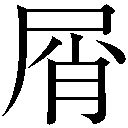
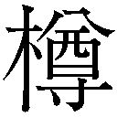

| サカサマのパテマ | |
| 涌井学 & 吉浦康裕 | |
| (2013) | |
小学館ｅＢｏｏｋｓ
サカサマのパテマ
涌井 学
原作 吉浦康裕
協力：アスミック・エース
映画「サカサマのパテマ」より
原作・脚本・監督：吉浦康裕
製作：サカサマ会 配給：アスミック・エース
ⒸYasuhiro YOSHIURA / Sakasama Film Committee2013
数値はマイナスを示していた。
ありえないことだった。それは沸き立つ湯の中の温度計が氷点下を示すのと同じだ。
だから男は何度も計器を確認した。確認するたびに心臓の鼓動が早くなっていく。一秒ごとに何度も息を吐き吸う。このことを報告しなきゃならない。そう思うのに足は動かなかった。隙間なく並んだモニタの前には、画面と同じ数の白衣の人間がいる。男以外にまだ誰も異変には気づいていないようだった。間断なく人々の声が部屋を渡り、数値と時間の情報が交換されていく。誰かが叫んだ。歓喜の叫びに聞こえた。
すばらしい。今この瞬間から、世界は変わるぞ。
男の耳にはその叫びが届かない。
目前の計器の針がさらに左に振れる。緑のゾーンを通り越して青のゾーンを今にも振り切ろうとしていた。
また別の声が聞こえた。
おかしい。おい、メインモニタを見ろ。
人々の動きが慌しくなった。モニタの前で数人の白衣の人間が立ち上がり、いくつもの椅子がバタバタと倒れた。また誰かが叫ぶ。さっきのそれとはトーンの違う、数オクターブも高い悲鳴だった。
どうなってる？ なんだこの数値は？
男の呼吸がさらに速く短くなる。吸い込んだ息が喉で詰まり肺にまで落ちていかない。額には毛穴の数と同じ数の汗の玉が浮いていた。巨大なメインモニタが外の世界の様子を映し出している。超高層のビルが並び立つ市街地だ。サブモニタには街を俯瞰する映像も流れていた。人々が忙しそうにビルの隙間を歩いている。その隣のウインドウで高速道路を車が走る。別のカメラの中で、犬を連れたランニングウェアの女性が腰の水筒を摑んで喉を潤していた。空を映したウインドウには風を切って空をすべる猛禽の姿も映っていた。世界は回っている。
三番目のウインドウに映るショッキングピンクのウェアを着た女性が突然空を向いた。男と目が合う。その目が揺らがずにこちらを見ている。
衝撃が走ったのはその瞬間だった。
モニタが暗転する。研究棟の照明が一斉に瞬いた。誰かが叫び声を上げる。女性の声だ。
「見ろ」
男の低い声が人々の目をメインモニタに誘った。
映像が乱れる。男は瞬きができない。目を閉じたらもう二度と開けないような気がした。自分の心臓の音以外すべての音が搔き消えた実験棟で、男はモニタの中に世界の終焉を見る。三日月を模った高層ビルがブルリと歪んだ。寄り添うように建っていた隣のビルも同じように身を震わせる。音のない地響きが画面を揺らした。カメラの前を白い薄片が下から上へ通り過ぎた。歩道を作るコンクリートの破片のように見えた。
三日月のビルが地表から剝がれる。怪力の男が、ビルの根元をハンマーで砕き割ったかのようだった。サブモニタの俯瞰で、画面を埋める高速道路の路面が朽ち果てた樹皮のようにあっけなく剝がれていた。路面にあった自動車が浮いている。別ウインドウ、犬を連れた女性が、自分より大きなを飲み込もうとする深海魚のように大きく口を開いていた。女性の顔の横にプードルがいる。犬は空中にあった。女性は動転してリードを強く胸元に引き寄せる。プードルの首輪が締まり、犬はそういうふうに作られた玩具のように空中で長い舌を垂らす。
世界が空に落ちていく。
女性は犬のリードを胸に抱いたまま、驚愕の表情を一瞬の残像に残してカメラから消えた。定点を追うカメラは崩壊した世界をそのまま映し出す。スーツ姿の男が空を見上げ、困惑と恐怖、それに少しの苦笑いを残した表情で真っ逆さまに空に落ちていった。自転車に乗った青年が自転車ごと空に吸い込まれていく。自転車のリールはまだ回ったままだ。歩道脇に建つコンクリートのビルが揺らいで、一面のガラスが一斉に砕け散った。ガラスの破片が日光を乱反射しながら空に昇っていく。コンクリートの路面に大きなヒビが走り、路肩のポプラの木が根元から剝がれて空に舞い上がっていった。剝がれ落ちた路面を破ってビルの基礎部分が迫り上がる。土塊といっしょに抜け落ちたビルが空を昇る。ガラスを失い裸になったビルの窓から人々が見える。必死に地面に向かって手を伸ばしていた。ビルの壁面に方向感覚を失った鳥が衝突し骨を砕く。翼を折った鳥は、弾丸のように体を丸めて真っ逆さまに空に落ちていく。すべてのモニタが空に落ちるあらゆるものを記録していた。無音の世界で白衣の男は魂を震わせて叫ぶ。
「世界の底を抜いてしまった」
取り返しはつかない。
なぜなら失いたくないものはみな、空に落ちてしまったのだ。
.........１
《Patema》
「ねえ、パテマぁ。遊んでよぉ」
ジィのところに報告に向かう途中で街の子どもに捉まった。大きな木箱に両手をふさがれているパテマは、防護服の のあたりを五歳くらいの少女に摑まれて転びそうになる。唇を尖らせて「おっと」と呟きながら、クルリと体を回して少女と向き合った。パテマの服を摑んだまま、少女は不満げにパテマを見上げている。服を摑む右手にクイと力を込めた。
のあたりを五歳くらいの少女に摑まれて転びそうになる。唇を尖らせて「おっと」と呟きながら、クルリと体を回して少女と向き合った。パテマの服を摑んだまま、少女は不満げにパテマを見上げている。服を摑む右手にクイと力を込めた。
「ねえったらぁ」
パテマは木箱を脇に置いてその場にしゃがみ込んだ。目線が合うと少女が笑った。カサついた黒髪と煤けた頰。でも子どもらしく丸まるとした輪郭。嬉しそうな笑顔だ。
「パテマぁ、この箱なぁに」
少女が木箱を指差してそう尋ねた。パテマは少女の頭を撫でてから木箱を向き、悪戯っぽくニッと笑う。「レイヤー32の封鎖倉庫で見つけたの。さて、中身は何でしょう？」
少女がパッと顔を輝かせた。
「おいしいもの？」
「正解。それは赤いものです」
「赤いの？ ビーンズ？」
「おしい。もっと甘いもの」
「じゃあとうもろこし？」
パテマは笑う。
「水で戻せばちゃんと果実の味がするはずよ。冷凍乾燥のプラムのパック」
宝物でも見つけたみたいに少女の顔が輝く。隣の木箱に抱きつくようにして顔を寄せた。
「食べられるの？」
「うん。これからジィのところに報告に行くから、その後でみんなで食べようね」
少女の顔はいまにも溶け出しそうだ。パテマはその笑顔が嬉しい。ただ冷凍乾燥のフルーツが食べられるというだけ。そんな些細な幸せなのに、この街の人々はそれを心から喜ぶ。心から笑う。乾燥パンの一切れをいつくしむように味わって食べる。何もかもが足りなくて、いつも明日の食事に怯えるような生活なのに、ここの人々は豊かだと思う。昔、パテマの父である長が言っていた。
──変わらずにあり続けられることは、すでに幸せなのだよ。
聞いたときは難しくて何だかよくわからなかったけど、十四歳になった今、その言葉を反芻してみると少しだけわかるような気がする。パテマは自分が長の娘であるという事実に、まだ特別な意味を見出せていない。ただ、お目付け役、兼、世話係のジィの厳しい監視の目が入る分だけ、大好きな坑内探索がちょっとばかりやりづらくなるというだけだ。
少女に手を振ってから木箱を抱え直した。少女が背中を見せて駆けていく。友達のところに向かうのだろう。今日の夕食の後にはフルーツが出る。その幸せをみんなに分けるために走っていく。
地下での生活は貧しい。人々の心は豊かでも、物質的には決して満ち足りたものではなかった。水が足りない。食料が足りない。空調が整っていない坑道の奥に進めば空気すら足りなかった。そして何より光が足りない。
街に暮らす男たちはそのほとんどが食料と資源探しに一日を費やしていた。女たちは少ない食材を上手く料理したり、子を育てたり、街の生活が支障なく行えるように、服を縫ったり、壊れた壁を直したり、新しい梯子を綯ったりする。毎日、皆が慎ましく一日を生きるだけで、たくさんの物資がなくなっていく。エジンの街の人口は約三百。とても小さな街だ。だけどこの街が、ここに暮らす人々の生活のすべてだった。
街は、数多くの坑道と、今パテマたちがいる居住区に分かれていた。居住区は大きな空洞になっていて、そこに縦横に橋桁を通し、何層にも重なるように人々の住処が並んでいた。手先の器用な者が集まって工具などを作る簡単な工場もある。人々に食料を配給する大きな食事場からたくさんの湯気が立ち昇っている。木箱を抱えて歩くパテマが通り過ぎようとしているのは、仕事を終えた男たちが酒を酌み交わす寄り合い場だ。今日の仕事の話を肴に男たちの笑い合う声がここまで聞こえてくる。居住区に目を向ければ、通路を走り回る子どもたちとオレンジに明かりの灯った民家が見える。
──さて、あとはこの収穫物をどうするか、ね。
パテマは木箱を脇に除けてキョロキョロとあたりを見回した。それぞれの家に向かう大勢の人々のなかに、一人の青年の姿を見つけてパテマはニッと笑う。目が合った青年がびっくりしたような顔をしてそれからしかめっ面に変わった。パテマの右手がちょいちょいと青年を呼び寄せる。
嫌そうに青年が近づいてきた。
「パテマか......。またやっかいな頼みごとじゃないだろうな」
隠すそぶりも見せずに思い切り不審そうに顔を歪めている。パテマは頭を搔きながらテヘヘと笑って、片手で「お願い」の仕草をして見せる。
「やっぱりか......」
そう言われた。青年の目がパテマの脇の木箱に向いている。
「ね。お願い。わたしが見つけたって言うわけにはいかないじゃない。坑道を探検してたなんてバレたら、またジィやポルタに怒鳴られちゃう」
青年がため息をつく。何度目かわからないほど同じお願いをされているからだ。街の大人たちは坑道を探索するのが仕事だ。だが、パテマは違う。パテマは長の娘なのだ。やがてはこのエジンの集落を背負って立つ立場の人間だ。だからお目付け役のジィはパテマに坑道内の探索を禁じていたし、そもそも物資の探索は大人の男たちの役目だ。なのにパテマは何度 られても坑道の探索を止めようとしなかった。その上時々、誰も行ったことのない場所に忍び込んで、実際にこうして新しい物資を見つけてきたりもする。街の人間にとって、それはこの上なく有難いことなのだけど、それ以上に不安のほうが大きいのだ。坑内の未踏地域はとても危険だ。細く弱い携帯ライトの明かりだけを頼りに、安全シートも何もない吹き抜けの坑内を歩き回るのだから。実際に、探索に出た街人が大怪我をすることもしばしばあった。探検に出たまま帰ってこない者もいる。それほど危険なのに、長の娘であるパテマは自ら進んで探索に出かけてしまう。
られても坑道の探索を止めようとしなかった。その上時々、誰も行ったことのない場所に忍び込んで、実際にこうして新しい物資を見つけてきたりもする。街の人間にとって、それはこの上なく有難いことなのだけど、それ以上に不安のほうが大きいのだ。坑内の未踏地域はとても危険だ。細く弱い携帯ライトの明かりだけを頼りに、安全シートも何もない吹き抜けの坑内を歩き回るのだから。実際に、探索に出た街人が大怪我をすることもしばしばあった。探検に出たまま帰ってこない者もいる。それほど危険なのに、長の娘であるパテマは自ら進んで探索に出かけてしまう。
「ぼくらの気持ちも考えてくれよ」
だから、パテマに「発見者になってくれ」と頼まれた青年は困惑する。物資の発見者になることは、この街ではこの上ない名誉だけれど、パテマの無事とはそんなもの、比較になるはずもないからだ。
パテマは青年の承認を待たずに笑顔だけを残して駆け出す。
「それと同じ木箱がまだたくさんあったから！ 明日にでもみんなで調達に出てほしいの」
「あ！ 待てパテマ！ もう探索には出ないって約束してから行け！」
「お願いね！」
パテマは走る。慣れ親しんだ道だ。鉄打ちのタットの家の角を曲がって、子どもの下着が干してあるゼフの家の軒先をくぐって路地の隙間に駆け込む。空調のための室外機に足をかけてパイプを摑み、慣れた仕草で二階部分のダクトに手を伸ばした。外から押すとダクトは簡単に開く。こうして「知られてはならない外出」をしたときは、いつもパテマはここから帰る。ジィやポルタに見つかるとうるさいからだ。
何度も通っているせいでダクトの中は埃もなく綺麗なものだ。パテマは狭い隙間に器用に体を滑り込ませて自分の部屋に戻る。壁のダクトから明かりのない暗い部屋にトンと音立てて下りた。そのまま部屋を横切ってライトのスイッチを入れる。二、三度瞬いて白い光が部屋中を満たした。
「あ......」
パテマは唇をひん曲げたまま短く声を漏らす。明かりの中に、今もっとも見たくない二人の顔があったからだ。お目付け役のジィが腕を組んでパテマのベッドにじっと座っている。その隣には照れくさそうに笑っている幼なじみのポルタがいた。パテマを見て、「いやぁ」と無意味に頭を搔いている。
パテマは不貞腐れた体で防護マスクを丸テーブルに放り出した。ジィの反応がない。ポルタも何も言わない。気まずいからとりあえず防護服を脱いで部屋着になる。重く厚い防護服のジッパーを下げて、蛹から羽化する昆虫みたいに服から体を抜き出した。胸元に白いレースの縁取りがついた簡素なキャミソールと、幅に余裕を持たせた淡いブルーのキュロット。部屋着になったパテマをポルタがチラチラと見ている。
「女の子の部屋に勝手に入るなんて、紳士のすることじゃないわ」
とりあえずそう言ってみた。ポルタが慌てたように頭を搔く。ジィがポツリと呟いた。
「ワシらは保護者であって、紳士ではありませぬ」
ジィの言葉にポルタが勢い込んで割り込む。「いや！ おれは紳士だぜ！ 勘違いしないでくれよな、パテマ！」
「黙っとれ！」
ジィの一喝でポルタがギクリと肩を震わせた。パテマは言い訳を考えながら首を傾げる。まさか先回りされてるとは思わなかった。つい先日も今日とまったく同じことをしてられたばかりなのだ。いくら言ってもパテマが言うことを聞かないから、最近のジィは沸点が低い。
「今日も......、坑内の探検ですか」
もう半分キレかけている。パテマはジィを刺激しないように、でも自分の非は認めないように微妙な綱渡りを試みる。「ううん。どこにも行ってないわよ。ちょっと今日は、いつもと違うところから部屋に戻ってみようかなーって思っただけ」
ジィの眉がピクリと揺れる。パテマは笑顔のまま少しだけ背を仰け反らせた。ジィが腕を伸ばしてテーブルの上のパテマのマスクを摑んだ。それを自分の膝元に引き寄せて、パンと叩きつける。部屋の白い明かりの中に、細かなチリがブワリと浮いた。
「あ......」
パテマは笑顔のまま額に汗を浮かべる。ジィの膝元に浮いた細かなチリは、しばらく中空に漂ったあと、床ではなく、ゆっくりと天井に向かって落ちていった。パテマの笑顔がさらに噓臭くなる。汗の粒が大きくなる。バレてる。
天井に昇っていくチリを確認したあと、ジィが確信の声で呟いた。
「しかも......、また危険区域ですな」
パテマは次の言葉が見つからない。その通りだからだ。確かに今日、パテマは〝危険区域〟まで足を延ばした。街の近くの坑道はあらかた探りつくしてしまったし、何より〝危険区域〟には、パテマの好奇心をビシビシ刺激する変わったものが満ちているからだ。今、パテマの部屋でキラキラと光っているこのチリもその一つだ。〝危険区域〟には、直径が二十メートル近くにもなる大きな縦穴があり、その場所ではチリが空に昇る。底の見えない深い暗闇から、目に見えないほど小さな埃が絶えず舞い上がって縦穴の上部に吸い込まれていく。縦穴に突き出した桟橋に立ち、携帯ライトで空間を照らすと、舞い昇る埃が無数の金粉みたいにキラキラ光って綺麗だった。今日もパテマは中程で朽ちた桟橋の突端に腰を下ろし、しばらくの間、その光景に見惚れていたのだ。何時間でもずっと見ていたいくらいだった。
「危険区域には行ってはならぬとあれほど」
ジィのお小言を聞きながら、椅子に腰掛けたパテマは両足をブラブラ揺らしていた。あの場所に行くとラゴスを思い出す。昔、まだ幼かったパテマとよく遊んでくれたラゴス。探検が大好きで、街にはほとんど定住することがなかった。時には何週も、何か月も帰ってこなくて、そのたびにパテマは気を揉んで不機嫌になった。やっと帰ってきたと思うと、ラゴスは、パテマの機嫌を取るためにいろいろなお土産を持ってきてくれた。パテマはテーブルの上の自分のバッグを見る。その端っこに、赤い油の詰まった小さな液体砂時計がプラプラしている。ラゴスがくれたものだ。お土産は、時には一冊の本だったり、変わった形の花を咲かせる植物だったりした。ラゴスは七年前のある日、「今度は少し長くなるかも知れない」とパテマに言い残して旅に出て、そのまま街には帰らなかった。だからパテマの中で、ラゴスの姿は七年前の無精ひげの笑顔で止まっている。
パテマが〝危険区域〟を知ったのは、そのラゴスがきっかけだった。
一度だけ、ラゴスがパテマを〝危険区域〟に連れ出してくれたことがあったのだ。
空に昇る埃や〝サカサマの滝〟を見たのも、それがはじめてだった。そして、七年前のその日から、パテマは危険区域への探検に魅せられたのだ。だから今でもジィは、事あるごとにラゴスを悪く言う。
「パテマに余計な遊びを吹き込みおって......。何かあったらどうするつもりなんじゃ」
ラゴスがまだこの街にいた頃は、奔放なラゴスと堅物のジィの間で口げんかが絶えなかった。ジィが「まだ話は終わっとらんぞ、ラゴス！」と叫ぶ声が街の風物になっていたくらいだ。
幼かったパテマは、自分の部屋にこもってラゴスとジィの言い合いを聞くのが好きだった。言い争いを終えると、決まってラゴスは苦笑いを浮かべながらパテマの部屋に遊びにきてくれたからだ。見たことのない珍しいお土産と、知らない場所のワクワクするような話をパテマにプレゼントしてくれた。幼いパテマはラゴスの笑顔が好きだった。ラゴスといっしょにいるのが大好きだった。憧れと尊敬、それにちょっぴりの恋心が加わって、ラゴスといっしょにいると心がとてもあたたかだった。
どうしても、忘れられなかった。
目の前で仏頂面をしているジィにパテマは苦笑いを見せる。ラゴスがいた頃は、ジィにも言い合いのできる相手がいた。だけどラゴスがいなくなり、パテマの父である長が死んでからは、ジィは長代理として何もかもを一人きりで支えることになった。街の様々な問題を取りまとめ、不足する食料や物資に頭を悩ませ、解決する術が見つからなくてもそれを誰にも相談できない。誰もがジィを頼るからだ。パテマの面倒だって見なくちゃならない。だから十四歳のパテマにだって、ジィの心労くらいはわかっている。心がチクチク痛むから、ジィに向ける笑顔だってこうして苦笑いになる。
「でもね。すっごく綺麗なのよ。ジィやポルタにも見せてあげたいくらい」
「そんなもの、見たくはありませぬ」
「そんなこと言わないでよ。見たらきっと感動するわ。すごく綺麗なの。埃がね、こう、キラキラ輝いててね」
「とても長のご息女の言葉とは思えませんな」
断ち切るようにそう言われた。パテマはムッとむくれる。
「......ラゴスなら、そんなこと言わなかった」
ジィの反応がない。言ってしまってからパテマはしまったと思い直す。チラリと目だけをジィに向けた。握り締めたジィの右手がプルプルと震えている。
パテマは心の中で汗をかく。言い過ぎた。
「そうだ！ パテマ知ってるか？ 危険区域ってさ、バケモンが出るんだぜ！」
怒鳴られると思ったら、その直前に隣にいるポルタが大声で割り込んできた。ジィの怒りを誤魔化すように猛烈に喋り出す。
パテマはポルタの言葉に反応できなくて間の抜けた返事をする。
「バケモノ？」
「そう！ ええと......、コウモリ人間！ そいつにさらわれたら最後、もう二度と帰ってこられないんだってよ！」
ポルタの勢いにパテマは少しだけ吞まれる。
「何それ......。脅かそうとしてもダメよ。子どもじゃないんだから......」
「いや。それが、コウモリ人間を見たってヤツがこの街にも大勢いるんだよ！」
「......噓よね」
疑ってかかったらポルタの口調が激しくなった。むきになってる。
「噓じゃねえって！ だいたいコウモリ人間ってのはだな！」
「ポルタ！」
ジィの一声が空気を断ち切った。「余計なことを言うでない！」
ポルタが唇をすぼめて不満そうな顔を見せる。
「あ？ ......へいへい」
そして二人してパテマの部屋を出て行った。ドアをくぐるとき、ポルタが少しだけ心残りの顔をパテマに向けた。パテマは二人に向かってベエと思い切り舌を出してやった。こうしてられるのは慣れっこだ。
部屋のすぐ外、ドア一枚を隔てたその場で、ジィとポルタが話している声がかすかに聞こえた。
「もう話してやったほうがいいんじゃねえのかなぁ」
ポルタの声だ。パテマはベッドの上でクッションを抱いたままそれを聞く。
「パテマはまだ子どもじゃ」
ジィの怒ったような声。二人が歩き出す足音。
「でもよう......。黙ってるほうがかえって危ねぇと思うんだけどなぁ。あいつら、危険区域に現れるんだろ？」
「声が大きい！」
「知ってりゃ警戒もできるけど、知らなきゃ無防備なまま近づいちまうかも知れねえじゃねえか。パテマの性格考えりゃ、黙ってりゃかえって〝危険区域〟に近づくと思うぜ」
「......わかっとる。考慮中じゃ」
足音が遠ざかる。ポルタの声がかすかに聞こえた。
「......コウモリ人間に会っちまってからじゃ、遅いと思うぜ」
.........２
《Age》
ベルトコンベアの音だけが聞こえる。
周りにはこんなに大勢の人がいるのに話し声は聞こえてこない。誰もが無言で俯き加減にベルトコンベアに運ばれていた。
エイジはこのベルトコンベアが好きではない。学校へ向かう道を、この自動で動く道が決めてしまうからだ。なぜ誰も、この道をおかしいと感じないのだろう。なぜ誰も、行き帰りに別の道を歩いてみたいと、そう思わないのだろう。
エイジの目には変わらぬ景色が映っていた。ベルトコンベアの脇には巨大な建物がいくつも並んでいる。何百人もの人間が暮らすことのできる、巨大な墓標を思わせる画一的な集合住宅だ。集合住宅は、エイジが学校に向かう通路の両脇を埋め尽くすほどたくさんあるのに、何もかも、すべてが同じだった。高さが等しい、色が等しい、同じつくりの部屋が途切れることなく並んでいる。すべてのドアが閉じていた。張り紙一枚のちがいすら見当たらなかった。唯一のちがいは壁面に白く抜かれた棟の区別番号だけだ。どこまで行っても景色は変わらない。俯き加減のまま、かすかに目を上げてみると、前を行く生徒の背中が見えた。濃いグレーの制服を着た男子生徒だ。そのすぐ前には女子生徒もいる。二人は別の人間なのに、体型だって髪型だって、性別すらちがうのに、二人の背中は同じに見えた。生徒は何人もベルトコンベアに運ばれているのに、誰も、何のちがいもないように思えた。
──そこに建っているビルと同じだ。
エイジは肩を落とし、誰にも聞こえないように口の中で舌を打つ。
エイジはこの集団に馴染めなかった。中等部に進学してから二年、かれこれ数百回はこのコンベアに運ばれて学校に向かったけど、 いの制服に身を包んだ無言の生徒たちの群れには一向に慣れる気配がなかった。毎日毎日、同じ時間に同じことをくり返している。朝、定時に出席を取り、授業を受け、試験を受け、決まった運動をして寮に帰る。翌日もいっしょだ。教師は毎日、呪文のように同じ言葉をくり返し、それをエイジたち生徒にも復唱させた。
いの制服に身を包んだ無言の生徒たちの群れには一向に慣れる気配がなかった。毎日毎日、同じ時間に同じことをくり返している。朝、定時に出席を取り、授業を受け、試験を受け、決まった運動をして寮に帰る。翌日もいっしょだ。教師は毎日、呪文のように同じ言葉をくり返し、それをエイジたち生徒にも復唱させた。
「秩序を重んじ、規律を尊ぶべし」
そればかりだ。理念が間違っているとは思わない。だけど、ここの教師たちは、どうしてそれが大事なのかを教えてくれない。エイジの質問には、ただ、「そう決まっているからだ」とだけ答えた。
低音でくり返す無機質なベルトの音を聞くたびに、エイジは自分が工場で生産される工業製品になったような気がしてくる。大量に生産され、それが壊れても代替品がいくらでもある規格製品になった気持ちだ。生徒たちは皆、同じ表情をしている。心のぽっかり抜け落ちた顔だ。
アイガ君主国が、国是となっている〝規律と秩序〟によって保たれ、何不自由のない生活が維持されているのだということはよくわかっていた。こうして学校に通い授業を受け、ポイントを保って市民資格を更新しさえすれば、その不自由のない生活がずっと、おそらく年老いて死ぬまで続くのだろうということも理解している。だけど、心は満たされなかった。このアイガという国には、大きな何か、それがないと生きてゆけないような大きな何かが決定的に不足している。
学校に着くと、教室の窓際の席に座って、エイジはぼんやりと空を見上げる。授業は退屈だ。毎日同じことのくり返しだからだ。教師はいつもと同じ何の抑揚もない平坦な口調で〝アイガ〟の歴史を語る。アイガの民の特殊性と正当性を、言葉を変えては何度も生徒たちに諭していた。まるで、ほんとうは食べられないものなのに、上と横からパテで塗り固めて無理矢理ケーキを作り上げているみたいだ。それを「美味い」と言えと仕込まれる。
「どこを見ている。エイジ」
いつの間にか教師が隣に立っていた。振り返ると教師は石ころを見る目でエイジを見下ろしていた。手元のパネルを操作して、エイジが眺めていた窓ガラスに半透明のスモークを下ろす。太陽の光が遮られてエイジの顔半分が黒く染まった。エイジは無言のまま下唇を嚙んで教師を見上げる。
「話は......、ちゃんと聞いていました」
教師と目を合わさずにそう答えた。教室の前面を占める巨大な電子モニタには、紫の法衣を着た男が映っていた。アイガの君主、イザムラだ。電子モニタの男はいつだって同じことを言う。聞かずともわかっていた。アイガはすばらしい。アイガを恒久に守り続けることがアイガ国民の義務であり幸福だ。そればかりで、そしてそれだけだ。それに反する意見や行動はすべてが〝異端〟として処罰の対象になった。なぜ悪いのかは誰も教えてくれない。
教師は言う。冷たい声がエイジの頭に落ちてくる。
「そうか。それは当然だ。問題なのは、お前の視線が気味の悪い方向に向いていたことだ。何を見ていた、エイジ」
エイジは答える。
「......空です」
「空は、穢れの象徴だ」
微塵も迷わずに教師は言い切った。
「かつての大異変で、あの空は多くの命を吸い込んで殺した。そんな不吉なものをお前はなぜ直視できる？」
教師の言葉にエイジは俯いて反抗の意を示す。
「なんで......。空を見ちゃいけないんですか」
エイジの質問に教師はナタを振るうように答えた。
「それが外の世界への憧れに繫がるからだ」
間を置かずに続ける。
「なぜ理解できんのだ？ 空は不浄なものだと教わっただろう。イザムラ様のお言葉を忘れたか？ 空を見るのは〝知らないものを見る〟ことだ。アイガの外を知りたいと思うのは、〝知らないことを知りたい〟と願う暴力的な好奇心だ。好奇心や、行き過ぎた射幸心は不幸を招く。旧人類はそれに溺れて空に吞まれた。我々の祖先、アイガの民だけが、今以上のものを求めず、しっかりと内側を見つめ続けていたから空に吞まれずに済んだのだ。イザムラ様のお言葉通りだ。歴典にもそう示されているだろうが」
「だけど......、おれは空の向こうに何があるのか知りたい」
「その驕りが、旧人類の悲劇を招いたのだ。人間は、今、手にしているもの以上を求めるべきではない。余計に欲すれば余計な土地がいる。今よりすぐれた技術も必要になる。人々が好奇心に負けて、過剰な開発競争を続けたことがかつての〝天変地異〟の原因だ。だからイザムラ様はおっしゃったのだ。『アイガの民は、しっかりと地を見つめ、この国と今の生活を守り続けねばならない』とな。そのために何より重んじるべきものは何だ。答えろ、エイジ」
用意された答えを機械的に搾り出す。
「......規律と、......秩序」
「そうだ。我々は過去の過ちをくり返してはならんのだ。かつて、空に吞まれて滅んだ咎人たちのように、〝もっと食べ、もっと産み、もっと増える〟生活は破滅しか生み出さない。我々は規律によって生活を律し、誰もが決められた役割を確実にこなし、必要な分量の食料を生産し、人の数と同じだけの部屋を作って暮らしていく。〝変化〟は人の心を迷わす害悪だ」
エイジは心の中で「ちがう」と呟く。人が、ものを考える力を持っているのは何かをつくるためだ。今そこにない何かをつくり、新しい世界を築いていくためにおれたちは生きてる。エイジはそう思うから教師の言葉に納得ができない。
「空に落ちるのは咎人の証だ」
ずっとそう教え込まれてきた。だから空に憧れるのは罪人に憧れることに等しい。穢れたものを求めるのは、求める者の心が穢れているからだ。アイガの民は心清くあらねばならない。
教師は滔々と語り続けた。教室に詰める三十人近い生徒は、そのほとんどが机に額を近づけるようにして黙り込んでいる。余計な言葉を発すれば、それが減点に繫がるからだ。減点が続けば、アイガの国民であるための〝市民資格〟に傷がつく。積算値がリミットを越えれば市民資格の剝奪すらありえた。そこから先がどうなるのか、それはエイジにもよくわからない。ただ、その行き着く先に平穏はないことだけは確信できた。
椅子を蹴って立ち上がる者があった。
「空を見てはいけないという規則は、条文化されていません」
女子生徒だった。茶色がかったストレートの髪を肩まで伸ばしている。意志の強そうな黒目がちの瞳が教師を見据えていた。教師が口の中で小さく舌を鳴らして女子生徒を振り返る。目と目が合った。
「カホか......。我が校の模範生とは思えぬ指摘だな」
呆れた声を出して教師が教室前面のスクリーンモニタに向き直った。その動きと同時に手元のパネルでモニタに一枚の絵を映し出す。空調の整った教室だというのに、その絵が映し出された瞬間に教室中の温度が十度も下がった気がした。まがまがしい絵だ。アイガ君主国歴典の冒頭のページに示された、かつての〝大異変〟の様子を描いた抽象画。濃い青の渦が幾万本の腕となって空から地表まで伸び、地表のあらゆるものを摑みとって空に吞み込もうとしている絵だ。青の腕は建造物を摑み、木々を根こそぎ、人々をその指先に巻き取って、この地表のあらゆるものを天高く運んでいく。空の果ては闇だ。何もない闇のなかに世界のすべてが吞み込まれていく。そういう絵だ。これが旧世界の終わりで、アイガの始まり。学齢期に達した子どもたちが最初に学ぶ歴史だ。
「歴典に書かれているだろう？ 空に落ちる者たちは、おぞましき罪人だと」
教え諭すのではなく、押し付ける口調で教師は言った。カホは鋭く教師を見つめたまま、それを聞いても肯こうとしなかった。教師の目がエイジに向く。お前はどうだ、と目で問いかけている。
「エイジ......。お前は放課後に指導室に来い」
答えないエイジに教師が言い捨てた。まだ立ち上がったままのカホがその言葉に食って掛かる。「私は......、処罰されないのですか？」
教師がまた口の中で舌を鳴らした。唇の片方だけを持ち上げてニセモノの笑みを浮かべる。
「お前は成績優秀な模範生ではないか。今の反抗的な態度も、エイジのような異端を戒める意味で、暦典の再確認を促したのだろう？ そういうことにしておく」
カホは唇を結んだまま担任教師を見つめている。睨んでいるといってもおかしくないほど強い視線だった。
「お前は我が校の模範なのだ。お前の発言や行動が生徒たちに与える影響も大きい。以後、口を慎め。反抗的な態度はお前の将来のためにならんぞ」
捨て台詞を残して教師はモニタを暗くした。雑音のない教室には不協和音のような居心地の悪い空気だけが残る。
エイジは考えていた。
「なぜ空を見てはいけないのか」
誰に何度尋ねても同じ答えが返ってくる。そして、何度聞いてもその答えには納得がいかない。
──父さんは間違っていない。
教師のこの話を聞くたびにエイジはそう思う。
だから今日もエイジは学校を出、非経済区域に向かう。
非経済区域は一般人の立ち入りが禁じられた草地で、そこには誰もいない。
誰にも咎められることなく、空を見られるからだ。
.........３
《Patema》
パテマには忘れられない光景が二つある。
一つはまだ幼いころ、ラゴスに連れられて見た、危険区域の〝サカサマの滝〟だ。
七歳だったパテマは、その日、どうしても泣き止むことができなかった。大切に育てていた植物の苗が枯れてしまったからだ。まだ幼かったパテマは、植物を丈夫に育てるには水や光以外に肥えた土が必要であることをよく知らなかった。エジンの街には食用の植物の栽培所が数箇所あって、そこでは草木もよく育っていたし、水を含ませた綿の上に蒔けば種も芽を出した。だから大丈夫だと思った。緑が好きだったパテマは、坑道で見つかった缶詰の詰まった麻袋の底に一粒の種を見つけて、それを自分で育ててみたいと思ったのだ。
用意した鉢植えに綿を満たして培地を作り、水を与えた。毎日ワクワクしながらそれを眺め、数日後に綿を割って緑の双葉が顔を出したときは飛び上がるほど嬉しかった。でも、芽を出してたった数日で、双葉はしおれ、白くなって落ちた。パテマは信じられない思いで朽ち落ちた双葉を見つめ続けた。何時間もしてようやく、この生き物は死んだのだ、とわかった。
そしたら涙が止まらなくなった。
枯らしてしまったのは、水をやりすぎたわけでも手入れを怠ったわけでもない。土の代わりにしていた綿がいけなかったのだ。街の栽培所では、植物に与える水には無機養分を溶かしこんでいる。それをパテマは知らなかった。水と光だけあれば植物は育つのだと思っていた。今となればそれくらいはわかっているが、当時はただ、自分の何かが悪かったせいで、一つの命をダメにしてしまったことをひどく後悔した。これほど後悔しても、枯れてしまった植物は蘇らないのだと気づくとなおのこと悲しくなった。部屋にこもってずっと泣いていたら、見かねたラゴスが声をかけてくれたのだ。
パテマの肩に手を置いて、
「ジィには内緒だぞ」
そう言ってパテマをある場所に連れ出してくれた。
暗い坑道をラゴスに手を引かれて恐る恐る進み、外壁の青く輝く巨大な縦穴に出たときは目を瞠った。ラゴスから見知らぬ場所のいろいろな話を聞いていたし、街の書庫に残っていた昔の本を片端から読んだりもしていたけれど、自分の目で見る〝まだ知らないもの〟は、パテマに強烈な感動を与えた。
「見てラゴス！ すごく大きな穴！」
興奮し、頰を赤くして叫ぶパテマをラゴスは優しく見守ってくれていた。
桟橋の突端に立ち、ラゴスがパテマを呼び寄せた。
「そろそろだな。パテマ、見ていてごらん」
二人して並んで、細いライトで対岸の側壁を照らした。ライトの動きでラゴスの横顔が一瞬だけ見えた。
唇だけで笑っていた。
「ほら」
ラゴスの呟きと同時に、パテマは視線をライトの先に向けた。激しい音が聞こえてきたからだ。聞いたことのない種類の音だった。激しく何かを叩く音に似ている。数え切れないくらい大勢の人間が、一斉に激しく足踏みをしているみたい。街の人みんながお腹いっぱいになるくらいの大量の豆が、麻袋を破って一気に流れ出したみたい。パテマは音の発生源を追ってその目を縦穴の地下深くに向けた。ラゴスはまだ笑っている。
空気が急に冷たくなった。
「来るぞ。サカサマの水だ」
パテマの頰に冷たい雫が一滴跳ねた。パテマは驚いて頰に手をやる。手袋の指先が濡れていた。穴の底を見る。何もないと思っていた暗い壁が透明の何かにいつの間にか満たされていて、それがライトの弱い明かりを反射して激しくその表面を波打たせていた。音が大きくなる。冷たい飛沫が二滴、三滴、パテマの頰を叩いた。パテマは頰を右腕で擦る。何度擦っても飛沫が飛んでくる。もう数えられない。
透明の水の板が、瞬きの間にパテマの目前まで迫っていた。縦穴の上層に向かって勢いよく昇る水の柱。合わせてパテマは顔を上げる。自然と口が開いた。水の柱は絵本で見たドラゴンとかいう空想上の生き物みたいに、激しくその体をくねらせながら、無限の勢いをもって天に昇っていく。いくつにも砕けて細かな水の塊が縦穴の側壁を打つ。さらに細かな水滴に分かれて、その一滴一滴がまるで意志を持っているかのように、完璧な球になって一つ残らず垂直に昇っていく。パテマは何度も瞬きしていた。隣にラゴスがいるのも忘れていた。世界は水と音だけで、腹を震わせる轟音と目を奪う水の乱舞はパテマを一瞬で別の世界へ誘った。
「これが、アイガの滝だよ」
ラゴスが呟く。パテマは声が出せなかった。今見たものの興奮の余韻で体中がいっぱいだった。
「一日に一度、こうして縦穴を昇っていくんだ。これを見たことは、ジィには内緒だぞ」
パテマは無言でコクコクと肯く。布を持ったラゴスの右手がパテマの目の前に伸びてきた。
「これで体を拭きなさい。風邪をひくぞ」
パテマは放心した目でラゴスを見上げ、一度瞬いてから自分の頭に手をやった。びっしょりと濡れている。髪の一束を指で摘んで顔の前に垂らすと、人差し指の先に大きな水滴が丸まった。
丸まった水滴は、フルフルと揺れながらパテマの人差し指の腹に乗っかっていた。まるで指先から透明のきのこが生えたみたいだ。水滴はあたりの水気を吸ってしだいに透明の頭を大きくし、ぐうっと背を伸ばして次の瞬間にはプツリと千切れてパテマの顔の前を垂直に昇っていった。口を開いたままのパテマの顔をその表面にくるりと映して、そのまま上空に消える。
「ラゴス......。お水が地面と反対に落ちていったよ」
パテマはそれだけを言う。見たまま、感じたままの言葉だった。
「そうだね。パテマ、覚えておきなさい。この水があるから、ぼくたちエジンの民は生きていける。この水のおかげで、植物が育ち、ぼくらは日々の糧を得ることができる。エジンの街を潤しているのは、地から降ってくるこの水なんだ」
忘れられるわけがないと思った。
もう一つは特別な絵だ。とても明るく、広い世界を描いた、まるで本物みたいに緻密な一枚の絵。あたり一面を埋める背の低い緑の植物と、それを突き抜けて建つ、オレンジの屋根をした何かの建物。建物の屋根の上には青い世界が広がっている。たくさんの水を透かしたみたいに、透明で薄青い空間が信じられないほど遠くまで無限に広がっている。青の空間にはかすかな白が、暗闇で吹いた霧吹きみたいに白く拡散して気持ち良さそうに泳いでいる。
ラゴスからこの絵をもらったとき、パテマは絵の半分を埋めている「青い空間」を指差してラゴスに尋ねた。
「これはなに？」
ラゴスは答えた。
「これかい？ これは、〝空〟だよ」
ふうんと呟きながら、パテマは絵を眺め続けた。〝ソラ〟ってどういうものなんだろう。建物の上にあるから〝ソラ〟なのかな？ 頭の上のほうのことを〝ソラ〟っていうのかな？
パテマは天井を向いて人差し指を立てる。
「〝ソラ〟？」
ラゴスは笑っていた。
「ああ。空だ。パテマの上には、大きな空があるんだ」
それからその絵がパテマの宝物になった。何度も眺めたから目を閉じればすぐにその光景を思い浮かべることができる。想像の中でその世界を何度も駆け回った。足元には緑の草が茂っていて歩くたびにパテマの足の裏をくすぐる。土を踏むと水の匂いがする。生き物の匂いもする。想像の中の世界には壁がなかった。パテマの暮らすエジンのように、四方を壁に囲まれているわけでも、鉄梯子で床と床が繫がれているわけでもない。床だってないから、きっと歩いても足音は聞こえないのだろう。そしたらどうやって人が近づくのを知るんだろう。壁がないから、声を出してもぜんぶどこかに散ってしまって、きっと誰もがものすごく大きな声でお互いに呼び合っているんだ。子どもたちはどうやって遊ぶのだろう。こんなに広いのだもの。子どもはきっと喜んで、笑いながらどこまでも走っていってしまう。そしたらお父さんとお母さんは大変だ。大きな声で叫ばなきゃいけない。
「遠くに行っちゃダメだよ」って。
「帰ってきなさい」って。
青い〝ソラ〟を見上げると天井のない世界が見える。そしてパテマは思う。無限に想像は広がっていく。この先には何があるんだろう。何がわたしを、待っているんだろう。
自室のベッドに横たわったまま、パテマは右手の指先に摘んだ絵をじっと眺めていた。エジンの街は変わらない。それは喜ばしいことだとジィは言うし、パテマもそれくらいはわかっている。だけど、ラゴスと見た〝サカサマの滝〟の興奮が忘れられなかった。ラゴスは言っていた。「この世界には、パテマの知らない事や知らない場所が数え切れないほどある」って。
ため息をついて、絵を摘んでいる指先の力を緩めた。絵がグラリと揺れてそのままパテマの指先を離れ、ヒラヒラと舞い上がった。木の葉のようにジグザグに舞いながら、ゆっくりと天井に向かって昇っていく。パテマは見るともなくそれを見ていた。
七年前、「いっしょに旅に連れて行って」と頼んだパテマにラゴスは答えた。
「パテマがもう少し大人になったらな」
呟く。
「もう......、充分待ったよね。......ラゴス」
ラゴスの絵は天井に達し、むき出しのパイプの隙間に縦になって挟まった。ラゴスは言っていた。
「これが、世界の本当の姿だよ」
パテマは自分で考えて答えを出した。きっとそれは間違っていないと思う。
──どこかに〝本当の世界〟があるんだ。
いまやその思いは確信に変わっている。
──きっと、危険区域に何かが隠されているんだ。
なぜ〝危険区域〟なのか、幼い頃はそれをジィに尋ねてもいつもはぐらかされた。
「何かあったら取り返しがつきませぬ。それに、エジンの民がパテマの真似をして危険区域に踏み込むようになったら事ですからな」
十三になって、初めてその理由の一端を教えてもらった。
危険区域は、巨大な縦穴を含めた周辺数十メートルの区画を指す。たとえるなら一本の巨大な柱だ。柱の中はホースのようにくりぬかれていてそれが〝縦穴〟になっている。坑内のつくりに明確な区分はないが、「ここから先は危険区域だ」というのは一目でわかる。危険区域の外壁は、そのほとんどが緩やかな弧を描いていて、常に淡青に発光しているからだ。それは、小さな照明が集まって作り出す光ではなく、壁そのものから滲み出すような光でとても弱く冷たい。青い光は坑内全体を照らしているから、弱すぎる壁の光はほとんど目に留まらないけど、壁のすぐそばまで手のひらを近づけてみるとわかる。手のひらが青く染まるからだ。光っているのは壁なのだ。
そのとき、手のひらを青く染めながら、パテマはジィに尋ねた。
「この光はどこから生まれているの？ どうして光っているの？」
単純に不思議だったからだ。光はエネルギーだ。地下で暮らすエジンの民にとって、照明や暖房などのエネルギーは食料と変わらないほど貴重な物資だ。なのに、誰もいないこんな場所を常に照らし続けている意味がわからなかった。
「エジンに光や熱を供給しているのが、この柱なのですじゃ」
ジィはそう言った。仕組みや原理はわからない。だが、この柱は常にこうして光り続け、地下に暮らす三百の人々に、必要な〝光〟や〝熱〟を与え続けている。この柱から供給されるエネルギーを利用することで、エジンの街は地下での生活を何とか成り立たせている。この柱は、パテマたちエジンの民がここに暮らし始める以前、まだこの広大な坑内に誰の姿もなかった時代からここにあった。そのエネルギーは坑内のいたるところに残されていた機械たちを動かす動力源になった。ある機械は柱のエネルギーを受けて激しく発光し、擬似の太陽になって植物を育てた。また別の巨大な鍋のような装置は、エネルギーを与えると無機物から簡単な有機物を作り出した。坑内から見つかった蓄電池にエネルギーを溜め込むこともできた。電熱線にエネルギーを通し、それを加熱することで鉄を溶かすこともできた。そのことによって鉄の加工が可能になり、家々の基礎を作ることができた。
街はこの柱に生かされているのだ。
「我らがここに暮らし始める以前、我らとは別の民が創ったものじゃと聞いております」
ジィはそう言ったけどパテマにはよくわからなかった。いくつも疑問が湧いてきた。
「どうやってこんな大きな機械を作るの？」
「どうして街の人たちに教えないの？」
「どうしてその人たちはいなくなったの？」
どの質問にもジィは口を噤んで答えなかった。やがてパテマが質問に疲れて柱に背中を凭せかけた頃、一言だけ、ポツリとジィは答えた。
「今はまだ、ここまでしか教えられませんのじゃ」
ジィの言葉は「わからない」じゃなかった。
「だから、きっと答えはどこかにあるんだ」
そう思うからパテマは行動する。昨日の探検で危険区域の縦穴、桟橋の対岸に び付いた鉄梯子を見つけた。外壁にへばり付くように遥か上まで伸びていた。明日はそれに触れてみよう。どこまで行けるかわからないけど、その道がどこまで続いているか、それを確かめに行ってみよう。
び付いた鉄梯子を見つけた。外壁にへばり付くように遥か上まで伸びていた。明日はそれに触れてみよう。どこまで行けるかわからないけど、その道がどこまで続いているか、それを確かめに行ってみよう。
世界を知りたかった。
どうしても、この手に触れてみたかった。
.........４
《Patema》
パテマは朽ちた桟橋の突端近くに立っていた。
この場所が好きだ。この場所はいつも変わらない。いつも、静かで冷たく心地よい空気がパテマを迎えてくれる。金色の埃がゆっくりと舞い上がって、まるで時間が止まっているみたいに感じるのに、埃を見ていると世界が動いているのがわかる。キラキラと光の方向を変えて舞い上がる塵たち。パテマは埃の輝きを追うようにゆっくりと首を曲げて縦穴の上部に顔を向ける。
──あの鉄梯子を昇れば、まだ知らないどこかに出られる。
対岸の外壁にある梯子を見てそう思った。思いを確かめるように、パテマは背中のバッグを背負い直す。
その瞬間、背後にカラリと無機質な音が転がった。
パテマは振り返る。音があまりにも異質だったからだ。ここは常に無人だ。無人だから、自分の足音や息遣いの音以外聞いたことはなかった。耳を澄ませば空気の流れる音が鼓膜をかすかに揺らす。そんな場所なのに、固い何かが鉄骨に擦れる音がした。
何も見えなかった。桟橋の突端に立ったまま目を凝らして通路の奥を覗き込む。パテマがやってきた通路の奥は、縦穴の外壁が発する光が届かず黒い大きな四角みたいに見えた。パテマは腰のポーチに手を伸ばし簡易ライトを摑んだ。腰を低くし、身構えながら一歩ずつ通路に近づく。一歩進むたびにパテマの靴底が鉄骨を叩いて甲高い音が響き渡った。
──まさか、コウモリ人間......？
ポルタの声が耳の中に蘇る。
「危険区域でコウモリ人間を見たってヤツが何人もいる。お前、怪我してからじゃ遅ぇんだぞ」
──まさかね......。
自分を励ますために口の中で呟いた。ライトは足元を照らしている。正面に向けるのが怖かったからだ。これを正面に向けたら、あの通路の中に何か、見たくないものが見えてしまうかも知れない。
物音はもうしなかった。パテマは顔の横に構えたライトをおそるおそる通路の中に向けた。細く丸い光が通路の奥を照らして四角の中にぽっかりと黄色い丸が浮かび上がった。丸の中にはいつもと変わらぬ坑道の外壁が見えた。列なるパイプがライトの光を浴びて滑るように鈍色に光っていた。パテマは胸を撫で下ろす。何もない。きっとさっきの音は、びてしまったパイプが自然に折れて床に落ちた音なんだ。コウモリ人間なんているわけない。
パテマは怯えていた自分を笑うように短く息を漏らした。怖い怖いって思ってるからいけないんだ。でも、ジィやポルタも心配してるだろうし、そろそろエジンに戻ったほうがいいかな。
そう思って通路に一歩踏み出した。カツンとパテマの靴底が床を叩く。その音にトクンと心臓が跳ね上がった。搔き消すように首を振ってもう一歩進む。またカツンと床が鳴る。
コツン。
頭の上で音が響いた。パテマは大きく目を見開いて立ち止まる。自分の足音じゃない。今の音、上から聞こえた。天井が鳴った。どうして床じゃなく天井が鳴るの？ ということは、さっきの音は物が床に落ちた音じゃない。あれだけはっきりと聞こえたんだ。小さな生き物でもない。ましてや水や空気が鳴らす音じゃない。じゃあ、音を出したのは......。
右手のライトを上に向けた。
「ヒッ」
手を伸ばせば届く距離に、真っ赤な二つの目があった。
黄色いライトに照らされて、黒い頭巾に覆われた顔らしきものが見えた。顔の中心近くに二つの真っ赤な目が光っている。下半身はライトが当たらず天井の闇に溶けて見えなかった。それほどに近い。パテマは動きを忘れて硬直する。ライトを下げることすらできなかった。
──なにこれ。
それだけしか考えられなかった。なにこれ。天井から何かがぶら下がってる。わたしのすぐ目の前に何かいる。
腰が砕けてその場に尻から転がった。ライトが落ちて床に跳ね、細い光が乱舞して通路内を縦横に照らす。その明かりで見えた。黒尽くめの何かは天井からぶら下がっているわけじゃない。天井に、立ってる。
──サカサマ......。コウモリ人間!?
目を逸らすことができなかった。パテマは転がったライトを摑み、尻を擦りながら後じさる。空気がザワッと毛羽立った。コウモリ人間の黒いマントがはためく。次の瞬間にはパテマの目の前まで黒いマントが迫っていた。コウモリ人間の手がパテマに伸びる。パテマの目の前、数センチのところをコウモリ人間の指先が掠めた。鼻先に風の流れを感じる。パテマは目尻に涙を浮かべて必死で後じさった。体が思うように動かない。足をもがれた甲虫になった気分だ。必死で手足を動かすのにそれは床を滑るばかりだ。コウモリ人間の手が顔の前を何度もすり抜けた。そのたびにブワリとパテマの銀髪が激しく靡く。
そのまま桟橋に転がり落ちた。強く腰を打ってパテマは体をねじらせる。半分うつ伏せになった姿勢で通路の奥に目を向けた。外壁の明かりに照らされて、今度ははっきりと見えた。人間だ。黒いフードと黒いマントで体をすっぽり覆った人間が通路の入り口からこっちを見ている。二つの赤い目はゴーグルだ。あのゴーグルがライトの代わりに光を発していたんだ。コウモリ人間の正体が確認できてパテマは少しだけ冷静さを取り戻した。だが、それと同時にまったく別の戸惑いがパテマを襲った。コウモリ人間はこっちを見ている。
サカサマに、天井に立ってる。
──なんで？ どういうことなの？ どうして落ちないの？
目が離せなかった。少しでも目を離したらその瞬間にコウモリ人間が飛び掛かってくるんじゃないかと思った。パテマは仰向けに体を回してそのまま桟橋の突端近くまで後退した。距離を取りたかった。逃げ道は今コウモリ人間が立っている通路、そこしかないのだ。桟橋は半ばで朽ち落ちて、向こう側に飛び移ることなどとてもできない。どうすればいいのかわからない。
──あいつがここに来たら、戦うしかない。
そう覚悟を決めたのにコウモリ人間は近づいてこなかった。パテマは戸惑う。どうして来ないの？ コウモリ人間が通路の端から頭だけを出して足元を見た。すぐに顔を引っ込める。あいつ、今、何を見たの？ あいつ、サカサマのまま下を向いた。パテマはコウモリ人間の視線を追った。どこまでも上空に続く縦穴が見えた。そして唐突に気づく。
──もしかして、サカサマだから、通路から踏み出せないの？
縦穴にはパテマのいる桟橋以外に足場がない。コウモリ人間は天井を歩いていた。だからだ。天井が地面だから、ここまでやってこられないんだ。
コウモリ人間は通路の入り口から動こうとせず、ただパテマを見つめているだけだ。コウモリ人間がここまでやってこられないとわかった途端に腰が抜けた。パテマは細く頼りない鉄骨に縋り付き、その場にヘナヘナと座り込む。とりあえず助かった。このままここにいれば、ジィやポルタが助けに来てくれるかもしれない。
そう思った瞬間に、パテマの耳元でポキリと乾いた音が聞こえた。パテマは口の中で「え？」と呟く。
パテマが縋っていた鉄骨が根元から折れていた。パテマの体は体重の行き場を失って何もない空間にグラリと倒れ込む。一瞬の出来事だった。真横になった視界がそのままグルリと回転してサカサマになる。桟橋の裏側が見えた。パテマはまた小さく「え？」と呟く。落ちた？
パテマの銀髪が両耳をバサバサと撫でて千切れそうに棚引いた。まばたきができない。吸い込もうとする空気が落下の速度に負けて上に逃げていく。声も発せられない。世界が遠のく。
わたし、死ぬの？
そう思った。
.........５
《Patema》
どれくらい、落ちたのだろう。
パテマは目を開ける前に身じろぐ。全身が鈍く痛んでいた。手袋の手で頰を撫でる。銀髪を搔き分けるようにして後頭部に触った。どうやら大きな怪我はしていないらしい。パテマはゆっくり頭を振ってから半身を起こした。尻の下でガサガサと音がする。体を支えるために伸ばした左手が不安定な弾力にゆっくりと押し戻される。目を開けた。
緑だ。
体中が緑の葉に包まれていた。左手のふかふかは何枚にも折り重なった葉の弾力だ。尻の下のガサガサは、太い幹の樹皮の凹凸のせいだった。まるで緑のベッドに横になっているみたい。そんなことを思った次の瞬間に思い出した。
わたしは落ちた。
──ここはどこ？
途端に怖気立つほどの恐怖が背骨を駆け上ってきた。パテマは体を震わせる。
──わたし、どうなったの？
足元に見えた茶色の幹をしっかりと摑んだ。摑む右手が小刻みに震えている。落ちたときの恐怖が今頃になって蘇ってきた。寒くもないのに歯がカチカチと鳴り出す。風を切って落ちる感覚。あんな感じははじめてだった。無理にたとえるなら階段の最後の段を踏み外した感触。それが永遠に続く感じ。死ななかったのは奇跡だ。
パテマはしっかりと枝を摑んだまま、首だけを伸ばして緑の葉をもう片方の手で搔き分けた。そのあまりにも軽い感触で予想はついた。下から風が吹き上げてくる。パテマの髪が上方に靡く。
左手の下、緑の葉の向こうには何もなかった。
──この大きな植物に、ひっかかったんだ。
パテマは縦穴を落ちた。落ちた先、縦穴の終わりには、パテマの部屋の鉢植えの何倍もある見たこともない巨大な植物が生えていた。その植物に茂る枝葉が偶然にもクッションになってパテマを支えてくれた。だから死なずにすんだのだ。あと数メートル、落ちる位置がずれていたらきっと死んでいた。運が良かった。
さっきまで背負っていたはずのリュックが体から離れて幹の中ほどに引っかかっていた。パテマは反射的にそれに手を伸ばす。ラゴスにもらった砂時計がリュックの端で揺れていたからだ。不安でしかたなかった。ラゴスの砂時計に触れていたかった。
「あ」
パテマの手が触れた瞬間、リュックはバランスを崩して枝から滑り落ちた。緑の葉を何枚か巻き込んで、吸い込まれるように枝の間に転がり落ちる。パテマは思わず声を上げた。
「待って！」
《Age》
夜明け前の空がいちばん好きだった。
エイジは草原に横たわり空を見上げる。夜が明ける間際は地平線を白い光が満たして、ほんの一瞬だけ世界が白一色に染まる。その瞬間が好きだった。空気も水も土も人も、ぜんぶを白い光がまっさらに洗い上げてくれるような気がして好きだった。父がまだ健在だったころ、この場所でよくいっしょに夜明けを眺めた。夜に溶けて見えなかった父の横顔が、朝日に染まって見えるようになる瞬間が嬉しかった。
──父さんは、あの空に何を求めていたんだろう。
何度も同じことを考えた。七年前、エイジがまだ幼かった頃に、父は空を目指し、空に憧れたまま、志半ばにして死んだ。自ら作り上げた〝空を飛ぶ機械〟のゴンドラに乗り、人々に手を振っていた父の姿を辛うじて覚えている。記憶は曖昧だが、父は確かに笑っていたと思う。機械が空に昇ろうとすると、まわりでそれを見ていた人々は一斉に怯え始めた。笑っていたのはエイジの父親だけだった。人垣を搔き分けて役人を呼びに走る者がいた。ゴンドラが完全に地から離れると、戸惑う人々のざわめきの中、耳慣れない乾いた音がエイジの耳に突き刺さった。
次の瞬間、ゴンドラの中の父は、人々に手を振る姿勢のまま、崩れ落ちてゴンドラから転がり落ちた。何もかもが一瞬の出来事だった。人々のざわめきの色が変わった。無人になったゴンドラはそのまま空に消えていった。エイジは父の元に駆け寄ることができなかった。ひたすらに怖かったからだ。父が死んだかも知れない。恐怖の大半はその思いで満たされていたが、片隅に周囲の人々に対する恐怖があった。空に昇ろうとした父に、アイガの人々は心無い言葉を容赦なく浴びせかけた。エイジの耳には聞こえた。
「やはりな。こうなって当然だ」
「大地の怒りに触れたのだ」
耳を塞ぎたかった。
「天罰だ」
事故を心配する声よりも先に、それら呪いの言葉が人々の口をついて出ていた。その事実が何よりも怖かったのだ。
──忌むべき空に落ちる者。それは咎人なり。
教師に何度となく復唱させられた。空は忌むべきもの。かつて、この世界には信じられないほど大勢の人間が暮らしていた。だが、ある日を境に世界は一変した。世界は唐突に裏返り、人々は次々と空に落ちていった。
──古の書物に示される箱舟のように、空が生き残るべき人間を選んだ。
アイガの民は選ばれし人間。存在し続けよと使命を受けた民。
歴史の教師はどこか恍惚とした表情を浮かべてそんなことを言った。咎人は空に落ち滅んだ。だから我々アイガの民は、かつての過ちをくり返さぬよう、規律と秩序を第一義に、大地に目を向けて存在し続けねばならない。それがアイガ国民の義務であり、同時に最大の幸せだ。
エイジはそうは思わない。
空を目指した父さんの顔が、とても嬉しそうで、そして幸せそうに見えたからだ。
──おれもいつか......、あの空の向こうに行けるのかな。
夜明け直前の地平線に向かってエイジは呟く。
唐突にガシャリと重い音が頭の上で響いた。
エイジは驚いて半身を起こした。垂直に伸びるフェンスと、その先にまだ明け切らぬ夜空が見えた。フェンスの先に何かが揺れている。白い布でできたリュックらしきものだ。エイジは大きく一度瞬いて再びそのリュックを見る。目を擦る。立ち上がった。
リュックはフェンスの先の鉄条網に引っかかり、空に向かってブラブラと揺れていた。
──なんだこれ。
エイジは混乱する。リュックの肩掛けのところが鉄条網に引っかかっている。それはわかる。だけどこれ、何で落ちてこないんだ。まるでガスのいっぱいに詰まった風船みたいに、リュックが空に向かって引っ張られている。
「大丈夫、大丈夫。摑まってれば落ちないんだから、だから大丈夫」
今度は足元から女の子の声が聞こえてきた。エイジは空に向かってぶら下がるリュックを見、それから足元に目を向ける。フェンスの向こうは巨大な縦穴だ。その穴から、声が聞こえる。
エイジの目の前の一枚のフェンスが、何かの重みを受けてガシャリと揺れた。
「怖くない、怖くない」
声が近づく。エイジは目を瞠っていた。目の前に二本の足が見えたからだ。サカサマの足が空に向かって伸びてブラブラと揺れる。フェンスに片方の足が絡んだ。女の子の息遣いが聞こえる。上半身が見えた。ケミカルスーツやバイオスーツのような防護服を着ている。銀色の髪が見えた。頭の左側に髪を一束、細く結わいている。歯を食いしばってる。必死の顔をしてフェンスに摑まろうとしていた。右手を伸ばす。フェンスが揺れる。揺れが伝わって鉄条網に引っかかったリュックが大きく揺らいだ。女の子は「ああ！」と小さく声を漏らす。
「落ちないでよぉ」
呟きながらフェンスを少しずつ登ってくる。エイジはその一挙一動をポッカリと口を開けたまま見ていた。見たことのない情景だ。サカサマのまま、女の子が縦穴から出てきた。
女の子がフェンスの頂上近くにたどり着いた。空に向かってゆらゆらと揺れるリュックに必死に手を伸ばしている。摑んだ。それを肩にかけて同時にフェンスに抱きつくようにしがみついた。
「危なかったぁ」
そしてそう呟いた。ホッとした表情を浮かべて女の子がこちらを向く。エイジも女の子を見ていた。フェンス越しに目が合う。
「え？」
「え？」
それは、サカサマの少女だった。
「お前......、どうなってんだ......、それ？」
そんな言葉しか出てこなかった。何だこれ。エイジは混乱する。何でこいつ、サカサマなんだ。フェンスに摑まって逆立ちしてる。いや、違う。逆立ちじゃない。だってこいつの髪、地面を向いてない。風を受けて、空に向かって靡いている。背中のリュックにぶら下がったキーホルダーが、空に向かって小さく揺れていた。少女が大きく目を見開く。
「コウモリ人間!?」
叫ぶような声の最後は本当の悲鳴に変わった。「キャッ！」。少女の足がフェンスの端から外れ、少女の体が一気に数十センチも持ち上がった。少女がフェンスの上部に張られている有刺鉄線を片手で摑んだ。必死の顔で体を引き寄せ両手で鉄線に縋り付く。エイジは状況が吞み込めず少女と地面を交互に見た。有刺鉄線に摑まる少女は泣きそうな顔をしていた。白い頰がピクピクと震えていた。エイジは少女の顔を見る。少女の表情がぎゅっと変わった。目を閉じて叫ぶ。
「助けてよ！」
その叫びでエイジは我に返った。
わけのわからないまま、とりあえずエイジはフェンスに足をかけて少女に向かって手を伸ばした。少女の必死の目がエイジの左手を待っている。エイジの左手に少女の右手が伸びてくる。
手が触れ、少女の両手が有刺鉄線から離れた瞬間に、自分の体重がなくなったかのように感じた。
「え？」
エイジは呟きを漏らす。頭の上に少女の顔があった。二人は一本の棒のように、互いの手を軸に一つに繫がって、足の先から指先まで垂直に体を伸ばしていた。少女が不安そうな目でエイジを見つめている。
ふわりと靴底が地面から離れた。エイジは呆然としたまま足元を見、それから少女に向き直る。エイジの足は、夜明け前、まだ黒く見える草原より数十センチも上にあった。少しずつ、とてもスローな速度で空に浮かび上がっている。信じられなくて少女の反応を確認する。なんだこれ。おれ、浮いてる？
一定の速度を保ったままエイジと少女は垂直に空に昇っていく。フェンスを越えて、まわりが景色と風だけになった。弱い風がエイジの頰を撫でて吹きぬけていく。首を回すとアイガが見えた。さっきまでエイジがいた草原が遥か足元に見えた。非経済区域を仕切るフェンスの向こうに、夜明け前のアイガの街が見える。高いビルの頂上に赤いライトがいくつも光っていた。その向こうに森も見えた。高さのった針葉樹の密集した森は、上空から見ると緑の板みたいに見えた。そのさらに奥にはアイガの国境になっている巨大な崖が見える。高く堅牢な柵が崖をグルリと囲っている。崖の向こうは何もない大地だ。まだエイジの知らない場所だ。
遥か上空に昇ったエイジは瞬きを忘れて世界の姿に見入っていた。崖の向こうに、光を無限に濃縮した小さな点が見えた。それが細く長いサーチライトを伸ばして、アイガの端っこから世界に色が戻っていく。黒かった大地が、光のシャワーを浴びたところから薄緑の草原に戻り、森林に戻り、人々の暮らす街に戻っていった。エイジは光に目を細める。夜明けだ。
上空にいる二人にも太陽の光が届いた。エイジは白く染まった顔を笑顔にして少女を見上げる。嬉しかった。こんな興奮は初めてだった。だっておれは今、空を飛んでる。父さんが憧れて、いままで誰も見たことがなかった空からの街の姿を、おれは今、この目で見てるんだ。
《Patema》
下を向けない。風はパテマを攫おうとするかのように、真横から吹き付けてパテマの体を揺らした。右手の先にサカサマの少年がいる。少年の左手、パテマの右手を摑んでいるこの一本の手だけが命綱だった。少年がもしこの手を緩めれば、パテマはその瞬間にまっさかさまに〝ソラ〟に落ちる。さっきまで摑まっていたフェンスはもうほとんど見えなかった。強い光が世界の端っこから差し込み、パテマは恐怖に駆られて強く目を閉じた。初めての日光だった。この光はなに？ なにが起こってるの？ ここはどこなの？ ラゴスがくれた絵を思い出した。わたしが今落ちているのは、ラゴスが教えてくれたあの青い〝ソラ〟だ。少年を見る。サカサマの少年は頰を紅潮させて笑っている。パテマの頰が引きつる。わたし、少しずつ少しずつ、ソラに落ちてる。
どうしようもなかった。速度はゆっくりだけど足元には何もないのだ。このままならどこまでも落ち続けてやがてはソラに吞み込まれるよりない。そしたら死ぬ。迫り来る恐怖がパテマに〝見るな〟と告げるけど、パテマは自分自身の想像力に負けて足元を見てしまう。何もない真っ青な空間に、自分の足だけがブラブラと揺れていた。遥か下、空気の色すら感じられるほど遥か向こうに、何層にも重なった白いものがゆっくりと流れていた。底のない世界だ。見た瞬間、体中を無数の針でつつかれたように全身が痺れた。少年の手をギュッと握り締めた。
その動きで、肩にかけていたリュックがパテマの肩からずり落ちた。パテマは息を吞んで身を固くする。慌てて右手でリュックを抱こうとした。リュックのサイドポケットに指がかかり、収まっていた簡易ライトに触れてライトがチカリと瞬く。リュックはパテマの手をすり抜けて、肩紐の部分だけが手のひらにかかった。指先だけで支えた。だけど、食料や水の入ったリュックは重くて指先ではとても支えきれなかった。パテマの指が滑ってリュックが空中に放り出される。肩紐のところにくくりつけていたラゴスの砂時計だけがパテマの手の中に残った。支えを失ったリュックは空気を切り、尾を引いてソラの奥に吸い込まれていく。パテマは視線でそれを追いながら怯えた。落ちたらわたしもああなる。あっという間にソラに吸い込まれてどこにもいなくなってしまう。
「......？」
落下が止んだように感じた。遠ざかる一方だった緑の天井が一瞬静止し、次の瞬間から少しずつ大きくなっていった。パテマは天井を見上げたまま何度も瞬く。少年が下を向いてパテマと同じように緑色の大地を見ていた。パテマに向きかえってパチクリと目を瞬かせる。不思議そうな顔をしていた。少しだけ残念そうにも見えた。
──落下が止まった。少しずつ、昇ってる......。
パテマは少年の左腕に必死で縋りついた。身を じらせるようにして腕に昇り、しっかりと胸に抱く。少年の顔の横に自分の顔があった。少年がきょとんとした顔のままパテマを見ている。フェンスが少しずつ形をなし、パテマが落ちた大穴が近づいてきた。パテマはギュッと目を閉じている。そのまましばらく目を閉じていた。少年の声が聞こえた。
じらせるようにして腕に昇り、しっかりと胸に抱く。少年の顔の横に自分の顔があった。少年がきょとんとした顔のままパテマを見ている。フェンスが少しずつ形をなし、パテマが落ちた大穴が近づいてきた。パテマはギュッと目を閉じている。そのまましばらく目を閉じていた。少年の声が聞こえた。
「もう......、足がつくよ」
意味がわからなかった。足ならソラに向かってブラブラと揺れている。パテマはゆっくりと目を開ける。少年の顔がすぐ隣にあった。さっきまで摑まっていたフェンスが背中側に見えた。サカサマに天井にぶら下がった少年が不思議そうな顔でパテマを見ている。パテマの足元はいまだ底が抜けたままだ。パテマは再び恐怖に襲われて少年の腕に縋りつく。
「お願いだから！ 落ちないで！」
言われた少年が、「はぁ？」と間の抜けた声を出した。
「落ちるって......、なにが？」
パテマは目を閉じたまま叫ぶ。「何でそんなこと言うの！」
少年の顔がますます困惑する。
「何だかよくわからないけど......、もしかしてお前、地面じゃなくて、空に落ちるのか？」
そう言われた。説明のしようがなくてパテマは何度も首をコクコクと縦に振る。
「とにかく......、地面のあるところに連れていってよ」
少年にぶら下がったまま必死でそう言った。少年が首を傾げて、それからゆっくりと歩き出す。
「地面......？ ああ、天井ってことか......」
少し歩いてから急に気がついたように少年が言った。少年の頭上で、両手で少年に摑まったままパテマはぐらぐらと揺れている。目を開けるのはほとんど拷問だった。パテマは今、この少年の腕というたった一本の紐で辛うじて大地と繫がっている。もしこの少年が手を滑らせたり、転んだりしてこの手が離れてしまったら、その瞬間にパテマの人生は終わるのだ。きっと悲鳴を残す暇もなくわたしはソラに吸い込まれてしまう。
ギュッと閉じた瞼が膠で固められたみたいだった。自分の意思とは無関係に全身が震え出す。冷たい汗が背中に浮いて、それが玉になってツツと背骨を伝った。
少年が体を軽く浮かせた。地面の段差を飛び越えたようだった。パテマはその振動で全身を固くする。グンと大きな衝撃があって少年の腕から数センチ分、パテマの体がずり落ちた。パテマは顔色を失って少年の腕を摑む力を強くする。薄目を開けて少年を見た。少年は何だか嬉しそうな顔をしている。
「すげぇよな。お前、どうなってるんだよ？」
軽い口調でそんなことを聞かれた。それどころじゃなかった。目を開けることすら恐ろしくてたまらないのだ。少年が歩くたびにゆらゆらとパテマの体が揺れる。振り子のようだ。
「......お願いだから......、もっとゆっくり、静かに進んで......」
辛うじて声を絞り出した。少年が顔を上に向ける。薄目を開けたパテマと目を合わせた。
「怖いの？」
当たり前だ。怖くないわけがないじゃないか。落ちたら死ぬんだ。
「もうすぐ小屋が見えてくるからさ。備品の管理小屋なんだけど、いつも鍵が開きっぱなしだから、おれ、よく忍び込んでるんだ」
そして嬉しそうに言った。パテマは返事ができない。たとえようのない不安感だった。幼い頃、エジンの坑道で迷子になったときも不安だった。お気に入りの植物の苗を枯らしたときも悲しかった。だけど今感じているのはそんなのとは比較にならないもっと別の感情だ。たくさんの恐怖とたっぷりの不安に、強すぎる緊張を混ぜ合わせたペーストの気持ち。世界中にたった一人取り残されたような鋭すぎる孤独。
小高い丘の上にその倉庫はあった。壁に赤いペンキで〈NO ENTRY〉と書かれている。
「よっと」
少年がパテマを頭上にぶら下げたまま、足で蹴ってドアを開けた。埃の匂いがして暗い屋内が見えた。ドアをくぐろうと少年が腰をかがめる。パテマは、それでようやく足を地に着けることができた。管理小屋の天井におそるおそる靴の裏をつける。ベコンと頼りない音がして少しだけ天板が歪んだ。でも歩ける。ここなら落ちない。足の裏が地面についている。
一気に緊張が解けて腰が砕けた。パテマは天井にペタリと両足をつけてしゃがみ込む。とてつもなく重いため息が出た。そんなパテマを、床に立つ少年が不思議そうに見上げている。
「お前さ......、サカサマなんだよな」
そしてそう言った。しゃがみ込んだままパテマはそれを聞く。足元が安定して安心した途端に猛烈に腹が立ってきた。何でそんな無神経なこと言うの？ 何で〝怖い〟って言ってるのに、歩くとき嬉しそうにわたしを揺らすの？
パテマの頰が赤くなった。
「サカサマはそっちじゃない！ なによこの場所！ 何もかもみんなサカサマ！ そこの棚も、そこの椅子も、大きなドラム缶まで天井からぶら下がってる！ それにあなたも！ 人間まで天井にぶら下がってるなんて！」
言い出したら気持ちが高ぶって止まらなくなった。「植物もサカサマに生えてるし、さっき見えた建物だってみんな天井からぶら下がってた！ なによ！ 何なのよここ！」
パテマの剣幕に少年が戸惑ったように口を歪ませている。
「まあ落ち着けよ。だいたい、サカサマなのはお前のほうだと思うんだけど......」
少年の言葉でパテマの怒りに再び火がついた。言葉の終わりを待たずに声を荒らげる。
「なによ！ ぶら下がってるのはあなたのほうじゃない！ あなたも坑道のコウモリ人間みたいに......」
そこまで言ってパテマは言葉を吞み込んだ。
「あなた......、もしかしてコウモリ人間の仲間？」
「は？」
「そうだわ......。だってコウモリ人間もサカサマだったもの」
「......ちょ、ちょっと待てよ。そもそもそのコウモリ人間ってなんだよ!?」
「いや！ 来ないで！ コウモリ人間は街の人間を攫うって......」
「待て！ 落ち着けって！ おれがお前に、何かひどいことしたのかよ!?」
「............」
パテマは口の中の言葉を吞み込む。少年の目の中に、少しの怒りと少しの悲しみを見つけたからだ。少年がゆっくりと歩いて小屋の壁に背中を預けた。小さく呟く。
「しねーよ。絶対にそんなことしねぇ」
パテマの胸がチクリと痛んだ。少年が俯いたまま口の中で言っている。
「サカサマだからって......、絶対にそんなことしねぇ」
少年の悲しげな呟きがパテマの心を落ち着かせた。小さな声になって伝える。
「ごめんね......。助けてくれたのに......」
少年が少しだけ目を上げて天井のパテマを見た。
「お前......、誰かに襲われたのか？」
「うん......。どうしようわたし......。どうやってエジンに帰ればいいのかわからない」
「エジンって......、お前がやってきた街？」
「......うん。小さな街だけど、たくさんの仲間がいるの」
少年が黙ったままパテマを見ている。しばらくの間を置いてから呟いた。
「あのさ......。お前、もしかして、さっきのあの穴から出てきたわけ？」
少年の言葉を受けてパテマは体を震わせる。思い出してしまった。落下の恐怖が蘇る。
「......落ちちゃったの。危険区域の桟橋から落っこちて、気がついたらこの世界にいたの」
「......じゃあ、地底からやってきた──っていうわけか。その〝エジン〟って街は、地下にあるってわけだな」
パテマは怯える。
「どうしよう......。どうしたら帰れるのかな」
「......わかんねえよ。わかんないけど、そんなに落ち込むなよ」
「だってわたし......」
「来れたんだから帰れるさ。その......、おれも協力するからさ」
「ホント!?」
パアと顔を輝かせた。少年が面食らったような顔になる。
「じゃあ名前を教えて！」
「え？ あ......、おれ、エイジ」
「エイジね！ それからお願いがあるの。わたし、お腹減っちゃった」
エイジの頰が軽く引きつっている。呆れたように呟いた。
「お前、結構お姫さまだな......」
パテマは頰を膨らませてそっぽを向く。少しだけ照れながら言った。
「そうよ！ 〝お前〟なんて呼ばないで欲しいわね」
エイジが小さく笑っている。
「じゃあ、何て呼んだらいい？」
パテマはパッと顔を明るくする。
「パテマ！」
.........６
SAKASAMA BEING REPORT
報告書のタイトルはそうなっていた。
アイガ君主国、治安警察守備隊隊長のジャクはレポートを摘み上げてそれを眺める。軍人らしい無骨な体型をしているが、ジャクは目端が利く。それだけに君主イザムラからの信頼も篤かった。
アイガの大穴に調査隊の派遣が始まってから、もうずいぶん経つ。すでにジャクのもとには数百のレポートが挙がってきていた。そのうちの一枚、直近の調査隊が〝アイガの大穴〟深部で遭遇した〝サカサマ人〟に関するレポートがこいつだ。巨大なモニタの前のテーブルには、アイガ君主国の科学・技術開発を担当している学者たちが集まっていた。そのうちの一人、短い髪をしたメガネの男がジャクに顔を向けて話し始める。
「今回の調査で確認されました。彼らは我々とは異なる物理法則に従って生きている」
ジャクは椅子にかけようとせず、立ったまま学者の顔を見下ろす。丸っこいメガネが照明の光を受けて、レンズの下半分を白くしていた。
「つまり......、地下世界のサカサマ人たちは、〝我々とは重力の向きが反対〟だということだな。間違いないな」
学者は瞬かずに答える。
「確実です。以前に捕らえたサカサマ人から得た情報と、今回までの調査結果を照らせば疑問の余地はありません」
他の学者たちを見渡した。誰も異存を挟むものはいないようだ。
「......なぜ、そのようなことが起こるのだ」
ジャクの質問に、メガネの学者は真顔の中に少しだけ喜びの色を浮かべたようだった。声に若干の興奮が見える。
「あらゆる物質の間には、その質量に応じて互いに引き合う力がはたらいています。我々がこうして大地に立っていられるのは、限りなく質量の大きい地球という天体の重力が、我々人間の体や服、そして水や空気などのあらゆる物質に対して、〝地球の中心に近づける向き〟にはたらいているからです」
「うむ」
「レポートにあるサカサマ人は、この〝重力〟が、〝地球の中心から遠ざかる向き〟にはたらいていると考えられます。それも、地下世界の人間だけではなく、地下世界にあるあらゆる物質が〝地球の中心から遠ざかる向き〟の重力の影響を受けているようなのです」
ジャクは眉を顰めて学者を見る。想像が及ばなかった。
「どういうことだ」
学者が笑う。
「リンゴが空に落ちる──ということです。......アイガで手に持ったリンゴを放てば、リンゴは地面に転がります。ですが、地下世界のリンゴは、手を離すと空に向かって落ちていくのです。人間だけでなく、地下世界のすべての物質がサカサマなのです。この世界にある物質と地下にある物質では、人も含めて重力に関する物理法則がまったく反転していると考えてよいでしょう。
だから、彼ら〝サカサマ人〟がもし我々の世界に現れたなら、彼らは建物の天井にサカサマに立つことになる。彼らの抱える手荷物は天井に向かってぶら下がり、彼らの髪は空に向かって靡くのです。彼らが地下世界から持ち込んだ水は空に向かってこぼれ、彼らがアイガで怪我をすれば、流れる血はサカサマに空に昇る。上の世界と下の世界の間に、〝重力〟が反転する境目があるわけではないのです。上の世界と下の世界では、物質そのものの性質が真逆なのです」
「不可解な。なぜそのようなことが起こる」
学者の笑みが大きくなる。頰に大きな二本の縦皺が刻まれた。
「あくまで推測の域を出ませんが、暦典に示された〝大異変〟が原因と目されます。旧世界の人類が〝重力をエネルギーに変換する〟実験を行い、その実験が失敗したことによって、世界中のすべての物質に〝反対の向き〟の重力が一時的にはたらくことになった──。そのせいで、地表にあった人々や建物が空に落ちることになったのだと思われます」
「............」
「反転した世界の中で、我々アイガの民は、地上では唯一〝重力反転〟の影響を受けずに済んだ。一方で、アイガ国民以外の民は、そのほとんどが空に吞み込まれて死に絶えた。ですが、ほんの一部の人間は〝重力反転〟の影響を受けながらも生き延びて、自らの反転した重力に適した生活を地下世界に作り上げたのです。穴を掘って、サカサマの自分たちの足がつく〝地面〟を作り上げた」
「それが──、地下世界のサカサマ人の正体か」
「おそらく」
「なるほど......。イザムラ様のおっしゃる歴史とも符合するな」
そう答えながらもジャクは得心がいかない。世界がある日突然サカサマに裏返ったのなら、なぜアイガの民だけその影響を受けずに済んだのだ。地球上のあらゆる物質に影響を及ぼす程の巨大すぎる異変だと言うのに、一部の地域だけ、その影響を受けずに済むなどということが果たしてありえるのか。
疑問に思いながらもそれを口に出すことはできなかった。なぜなら、ジャクを含めたアイガの国民は、アイガ君主国の示す教義に懐疑を向けてはならないからだ。〝暦典〟とイザムラ君主の言葉は絶対だった。そしてイザムラは、〝過去〟の調査を禁じていた。
──今だけを見つめ、今の生活を維持せよ。それこそが幸せだ。
それがアイガの示す理念だった。だから疑問は口に出せない。教義にそぐわない疑問など口に出そうものなら、途端に密告され厳しい罰を受けることになるだろう。
ジャクの手の中の最新のレポートには、これまで数多く見てきたレポートとは明白に異なる点があった。ジャクはその記述から目が離せずにいる。
──サカサマ人の少女と遭遇。接触後、サカサマ人の少女はアイガの大穴に転落。地上世界に落下したものと推測される。
「......二人目だな」
ジャクは口の中で呟く。その呟きは小さすぎて、列席する誰の耳にも届かなかった。
.........７
《Age》
「確かに......、サカサマだよなぁ」
エイジは呟く。天井にパテマがいる。重い防護服を脱いで、キャミソール姿になったパテマの背中が見えている。脱いだ防護服は梁に沿って凹凸を作りながら、天井にペタリと張り付いていた。
「なあ、サカサマだと世界ってどういうふうに見えるんだよ」
天井のパテマを見上げながらエイジは尋ねた。パテマはさっきから、天井に四つんばいになってドアから顔を出し、外の景色に見入っている。まるで天井に張り付くヤモリみたいな格好だ。ただ、そのヤモリは可憐な姿をしていた。銀色の髪の隙間から白すぎるほど白い頰がのぞいている。やや赤味がかった瞳が真剣に外の世界を見つめていた。エイジの問いかけに答えない。
「なあ、パテマ」
「ねえ、エイジ。外が見たいわ」
質問を要望で搔き消された。エイジはパテマを見上げたまま苦笑いする。パテマの目は外を向いたままだ。
「今見てるだろ」
「ちがうの。もっと世界を知りたいの。このサカサマの世界、ラゴスがくれた絵と同じ景色なの。ラゴスは言ってたもの。『これが本当の世界だ』って」
「ラゴス？」
「うん。えっとね......、わたしの大切な人。探検家なの」
「ふうん」
「何年も前に出かけたきり、ずっと帰ってこないんだけど、わたし──、待ってるの」
パテマの頰が染まったのが少しだけ面白くない。不機嫌を覚られないように質問を続けた。
「その人が絵を？」
「うん。わたしにくれたの。わたしたちの暮らしている地下の街は小さくて、もっと広くて明るい世界が別にあるんだってラゴスは言ってた。もしかして、エイジのいるこの世界がそうなのかもしれない」
「そんなこと......」
エイジは言いかけた言葉を吞み込む。エイジにしてみればアイガだって小さな国だ。移動を禁じられ、アイガから外に出たこともないのだ。知らない場所だってもうほとんどないくらいだ。だけどパテマの目が輝いていた。だから言葉を吞み込んだ。
「だからもっと外が見たいの！ ねえ、エイジ、わたしをいろんな場所に連れていってよ」
パテマの熱の籠った言葉にエイジは苦笑する。呆れたように呟いた。
「どうやってだよ。だってパテマ、空に落ちちゃうんだろ？」
諦めるかと思ったのに、パテマの熱意はぜんぜん変わらなかった。さっきまであれほど怯えていたのに、もう瞳がキラキラしている。
「確かに怖いけど......。でも、見なきゃいけない気がするの。だってラゴスが教えてくれた〝本当の世界〟が目の前に広がってるのよ？ 見なきゃもったいないじゃない」
「何言ってるのかよくわからないけど......」
エイジは倉庫の中を見回して、おがの詰まった大きな木箱に目を留めた。天井のパテマが振り返って興味深そうにエイジを見ている。エイジは木箱を手にとって上下させてみる。それから中のおがを床に搔き出した。空になった木箱を壁に立てかけ、天井のパテマを振り返って言う。
「パテマ、この箱に入れる？」
パテマが眉間に皺を寄せてエイジを見ている。
「パテマの目のあたりに覗き穴を作るからさ。そしたら外も見えるだろ？」
思い切り不審そうにパテマが答える。
「わたしが......、その中に入るの？」
「うん。要するに、パテマは〝空が地面〟なんだろ？ だったら地面を作ってやればいいんだ」
「？」
「この箱に入っていれば、箱の内側に足がつくだろ？」
言ったらパテマが一瞬パアと表情を輝かせた。でも次の瞬間に頰を赤らめてモジモジしはじめる。
「......でも、エイジ、わたしをずっと背負うことになるんでしょ？ 支えられる？」
エイジは少しだけ笑いながら答える。「重いから？」
「重くないわよ！ 重くないけど、ずっと支えてるのは難しいんじゃないかなーって」
エイジがニッと笑う。床に転がっているパイプの切れ端や鉄くずを拾って胸の前に持ち上げた。パテマが不思議そうにそれを見ている。
「ほら、さっき、おれとパテマが手を繫いだら空に浮かんだだろ？ それで、パテマがリュックを空に落とした途端に地面に向かって落ち出した。あれってさ、リュック無しだとパテマの方がおれより軽いから、だからああなったんだよ。サカサマとサカサマは、足し引きができるんだ」
パテマが首を捻っている。エイジは続けた。自分の発見が単純に嬉しかった。
「だから、箱の中にこういう重いものをくくりつけてやれば、パテマが入ってるこの箱は重さがほとんどゼロになるはずだろ？ 簡単に背負えるさ」
「あ！」
「だから大丈夫。パテマがいくら重くっても、支えられるよ」
言ったらパテマが顔を真っ赤にしてむくれた。
「ひどい！」
「ちょ！ ちょっと待って！ やっぱり怖いかも！」
背負った途端に背中の箱の中でパテマが叫ぶ。「エイジ、ゆっくり歩いてね！ 絶対、絶対揺らさないでね!?」
ちょっとだけ呆れながら答えた。「わかってるよ」
「絶対よ！ エイジ、ほんとうに大丈夫？ 手が滑って落ちたりしない？」
「大丈夫だって。そのためにロープでおれとパテマを繫いだんだから」
パテマが黙った。
「それとも......、やっぱり止めるか？」
追い討ちをかけてみた。背中の箱からくぐもった声が届く。
「......ううん。行く！」
小屋を出るまではこんな感じだったのに、一歩外に出たらパテマの声ははずみっぱなしだ。
「あ！ エイジ、あの大きな建物はなに？ まるで本で読んだ王国のお城みたい」
「パテマ、もう少し小さい声で。誰かに聞かれたらまずいだろ。あれは中央管理タワー。この国の君主がいる場所だよ。アイガの経済と法律、それに住民の管理をしてるんだ」
「じゃああれは？」
「どれ？」
「あの大きなドームみたいなもの」
「ああ、あれは医療施設だよ」
「楽しそう」
「楽しくないよ。アイガ国民は週に一度、あそこへ行って検診を受けるのが義務付けられてるんだ」
「ふうん。じゃあ、みんなぜんぜん病気にはならないのね」
一瞬黙ったと思ったら次の瞬間にはまた大声だ。
「あ！ エイジ見て！」
「なに？」若干疲れながら答える。
「何かいる！ あれなに!?」
「え？」
首を傾けると、視界の端に食肉用のプラント施設が見えた。柵の向こうで大型の肉牛が草を食んでいる。
「牛のこと？ パテマ、はじめて見るの？」
返事が返ってこなかった。エイジは立ち止まって箱に目を向けようとする。
「すごい......。知らない生き物や知らないものが数え切れないくらいたくさんある」
感嘆の声が聞こえた。
「エイジ......、世界って広いのね」
パテマの言葉に少しだけ笑った。おれと同じだと思う。世界のことを、おれもパテマももっと知りたいんだ。
「おれさ......、アイガを囲っている柵の向こうに、もっとずっと広い世界があると思うんだ。いつか絶対にアイガを出て、もっと広い世界を見てやるって思ってる」
「もっと広い世界があるの？」
エイジは唇を嚙んで強く肯く。
「あるさ。絶対にある。アイガが世界のすべてだって教師たちは言うけど、絶対にそんなはずないんだ。だってそうだろ？ おれはまだあの柵の向こうに何があるのかも知らないんだから」
農地を歩く。大きな木箱を背負っているからできるだけ人に見つからないように、物陰を選んで歩いた。
「おれさ、パテマと手を繫いで空を飛んだとき、確信したんだ。世界はもっとずっと広いって。知らないことが、まだまだたくさんあるはずだって」
背中のパテマが「ふうん」と呟く。
「そしたらなんか、すごく嬉しかった」
足が軽くなった気がする。
「おれの父さんはさ、空に憧れて、自分で空に昇る機械を作ったんだ。まわりの人たちはみんな、父さんを『無謀だ』とか『罰当たりだ』って言ったけど、おれはそうは思わない。きっと、父さんは世界が見たかったんだ。自分が暮らしているこの世界が、ほんとうはどんな姿をしているのか、それをきっと知りたかったんだ」
少しの間を空けて、ゆっくりとパテマが口を開いた。
「......わたしと同じね」
「え？」
「わたしも......、ずっと外の世界を知りたかった。ラゴスがね、エジン以外の世界のことを教えてくれてから、わたし、ずっと『いつか外の世界を見てやるんだ』って思ってた。ジィたちには怒られたりしたけど、それでもどうしても見たかった」
「きっと......、ラゴスも、パテマに見せたかったんだよ」
「何を？」
「うん。きっと......、ほら」
エイジが箱を傾けた。パテマの覗き穴が空を向く。
「青空とかさ」
人目を気にしながら歩いてはいたものの、大きな箱を背負ったエイジの姿はあまりにも不自然だったようだ。寮に向かう途中の学校前の通路でクラスメイトのカホに呼び止められてしまった。
「エイジ......。背中のそれ、なに？」
ふつうにそう聞かれて愛想笑いでエイジは答える。それしかなかった。
「ちょっと寮まで運ぶものがあってさ......」
「そんなに大きいのに、エイジ、ずいぶん軽々と背負ってない？」
「あ、いや......。その、カホは知らないだろうけど、おれ、こう見えて結構力持ちなんだぜ」
「そうは見えないけど」
エイジの背中の木箱からゴソリと衣擦れの音がする。
「ねえエイジ。誰と話してるの？」
パテマの声が混じった。エイジは「いっ！」と短い声を漏らす。
「ちょ！ パテマ、ダメだよ、しゃべっちゃ！」
カホが眉根を寄せている。木箱を直視しながら呟いた。
「まさかそれ、人が入ってるの？」
「いや！ あはは。違うよそんなわけないだろ!? いいからこのことはみんなには黙っててくれよ。頼むからさ！」
「別にそれは構わないけど......」
通路に残っていた数人の学生が感情の色のない目でこちらを眺めている。不審そうな顔をしているカホを振り切るようにして寮に向かった。パテマとエイジ、二人分の食料と水を確保するためだ。学校入り口近くの通路に立ったままこちらを見ているカホに、パテマは興味が湧いてしかたないらしい。エイジに小さく、「誰？」と耳打ちする。
「クラスメイトだよ。あいつ、トップクラスの優等生なんだ」
「ふうん。可愛い子ね」
寮の個室に入り、個人所有の冷蔵庫に備蓄していた食物を に投げ込んだ。エイジの部屋の天井に大きな木箱が張り付いている。その奇妙な光景を眺めてエイジは苦笑する。とんでもない拾い物をしたものだ、と思う。反面、胸が高鳴って治まらなかった。
に投げ込んだ。エイジの部屋の天井に大きな木箱が張り付いている。その奇妙な光景を眺めてエイジは苦笑する。とんでもない拾い物をしたものだ、と思う。反面、胸が高鳴って治まらなかった。
「なんだか......。エイジの世界は不思議なところね」
管理小屋の天井で、パテマがそんなことを呟いた。
小屋に戻り、パテマを箱から出したあとは小屋中の掃除だ。
床に置かれた雑多な品々を壁際に寄せて、降り積もった埃を外に搔き出したら、見てくれだけはようやく人が住む部屋らしくなった。甲斐甲斐しく働くエイジをパテマは天井にペタリと膝をついて眺めている。手の中にはエイジにもらった食べ物があった。さっき寮に寄って持ち出してきた備蓄の食料だ。一日や二日を過ごすには充分な量だった。パテマは床に向かって落ちようとするを右手で支えたまま、左手の中の丸く黄色い果物をしげしげと眺める。ペンキみたいに黄色いそれを鼻に寄せると、ツンと冷たいにおいがした。思わず呟いた。
「これ、食べ物なの？」
クッションの埃を叩いていたエイジが天井を向いてマスクの下の口から答えた。
「レモン。見たことない？」
「......レモン。果実なの？」
「そう。パテマの住んでる街には果物とか、ないの？」
パテマはまたレモンに鼻を寄せてみる。「ないわけじゃないけど......、こんな形はしていないわ」。とても食べ物のにおいとは思えなかった。少しだけ齧ってみた。途端に目を白黒させて咳き込んだ。ペッと吐き出すと小さな黄色い欠片がサカサマに床に落ちる。
「あー。せっかく掃除したんだから汚すなよ」
「何これ！ やっぱり食べ物じゃないじゃない！ 死ぬかと思ったわ！」
「それはそのまま齧るものじゃないの。それを搾って、あとで食べるサラダにかけるんだよ」
「サラダ......？」
「野菜を盛り合わせたもんだよ。簡単な食事しかできないけど、穀物ばっかりじゃ体によくないだろ」
「野菜なんて貴重なもの、ふつうに食べられるの？」
「貴重？ なんで野菜が？」
「だって、野菜を育てるにはたくさんの光が必要でしょ？ 照明の数は限られてるから、新鮮な野菜はなかなか手に入らないの。ふだん食べるのは、水で戻す乾燥の野菜ばっかり」
「......地下だからか。なるほど」
「ここだと当たり前に食べられるものなの？」
パテマの質問にエイジはしばらく考えてから答える。
「まあ、配給の形ではあるけど、珍しいものじゃあないな。パテマも見ただろう？ この小屋がある非経済区域の外周はほとんどが食料生産のための農地だ。たくさんの畑が見えたと思うけど、あれ、ぜんぶ食用の野菜だし」
「そうなの!? すごい！」
パテマの頰が紅潮する。エイジのから今度はパンを取り出した。
「これはわかる。パンでしょ？」
エイジが今度は振り返らずに言う。
「もう少し待ってよ。そしたらいっしょに食べられるから」
「わたし、お腹空いた」
「もうすぐ終わるから」
掃除を終えたエイジが制服の上着を脱いでそれを椅子の背にかけた。パテマは天井に座りこんだままエイジを待つ。さっきからお腹がグーグー鳴っている。
「おまたせ」
天井に向かって微笑みながらエイジが言う。
「夕ご飯にしよう。パテマ、をかして」
パテマはおそるおそる手を伸ばして、床にいるエイジにを手渡す。手を伸ばすとちょうどエイジの顔のあたりまで届いた。エイジがから丸形のパンと、ビニールでパッケージされた赤い肉を取り出した。同じものをもう一つ出して、それらをテーブルの上に置く。パンに切れ目を入れて、チューブからバターを搾り出した。ビニールを破いて赤い肉を摘み、それをパンに挟む。一つをパテマに差し出した。パテマは手を伸ばしてそれを受け取った。受け取るときに触れたエイジの指先があたたかかった。
「これは......？」
「即席のサンドイッチ。パテマは好き嫌いとかない？」
手の中のパンは芳ばしく、それに挟まる肉は外見からも肉汁をたっぷり含んでいそうで唾が湧いた。「大丈夫。何でもおいしく食べるわ」
それを聞いてエイジが嬉しそうに笑う。
「じゃあ、いただきます」
「いただきます！」
齧りつくと、肉の皮がプツリと破れて肉汁がワッと口の中に広がった。いっしょに口に含んだパンが汁を吸って口の中で膨らむ。一嚙みごとに味が滑らかになっていく。香辛料の刺激から体に染むような優しい味に。パテマは夢中になってサンドイッチを咀嚼した。こんなにおいしいもの、いままで食べたことがなかった。
「パテマ、おいしい？」
笑顔のままのエイジが尋ねてきた。パテマは顔中をキラキラ輝かせたまま勢いよく答える。
「おいしい！ 信じられないくらい！」
「よかった」
エイジがまたを探りはじめた。
「缶詰だけどスープもあるんだ。トウモロコシのスープ」
「スープも!? 嬉しい！」
缶の口を開けてエイジがそれをパテマに差し出した。スープの香りが鼻をくすぐる。だけど、天井に向かって腕を伸ばしたところで、エイジは急に「あ」と声を漏らして気まずそうな表情を浮かべた。
「......パテマ、スープだと、そのままじゃ飲めないか」
「あ」
食事は信じられないほどおいしい。だけど、問題は水だった。サカサマでは水が飲めない。器に口を近づけることができないからだ。水やスープはパテマの口をすり抜けてそのまま床に落ちてしまう。
「水が飲めないんじゃ困るな......」
エイジが呟いている。パテマもことの深刻さに気づいた。エジンから持ってきた水や食料は、ソラに落ちてしまったリュックの中に入っていた。パテマはサカサマの水を持っていないのだ。かれこれ十時間近く、パテマは水を口にしていなかった。気づいた途端に急に喉の渇きを覚えた。
「しかたない。とりあえずは、この果物だな」
エイジがから別の缶詰を取り出した。「食後に食べようと思ってたんだけど、これなら食べられるだろ？」
缶詰のパッケージによく熟した赤い果実が描かれている。エイジの指が缶詰の蓋を引き抜いた。部屋中にブワリと甘い香りが広がる。パテマはそれを受け取った。水の香りがした。薄い黄色の果肉が滴るように水を含んでいた。一つを摘んで齧り付く。
舌が蕩けるようだった。
「おいしい！ なにこれ!? ものすごくおいしい！」
「はじめて食べるの？」
パテマの目が輝く。
「うん。このサンドイッチもそうだけど、食べ物がこんなにおいしいなんて思ったことなかった......。この植物の実が、そのままわたしの体の中に溶け込んでいくみたい」
ふう、と大きく満足げな息をついて、パテマは柔らかな笑みを浮かべた。
「この街に来て、はじめてがすごくいっぱいある。エイジの世界は不思議なもので満ちているのね」
頰を光らせているパテマを見てエイジは首を捻る。「そうかな？」
「そうよ！ だってさっき外の世界を見せてもらったとき、わたし、大きな生き物を見たわ！」
「牛のこと？」
「うん！ おいしそうに草を食べてた。あんな生き物初めて見たわ。青い〝ソラ〟には大きな光の玉があって街中がどこもかしこも明るいし、緑の草原がどこまでも広がっているし......。こんな世界に住んでいたらぜんぜん退屈なんてしなそう」
パテマの無邪気がエイジには少しだけ羨ましい。
「......そんなことないよ。この国には、パテマの街みたいな自由がないんだ」
「自由......？」
「うん。ここじゃ、何でも規律で決められてる。好きなものを好きなときに食べることもできないし、ここを出て見知らぬ遠くの土地に出かけていくことも許されていない。それにさ、三か月ごとに市民資格の更新があって、そのときのポイントしだいでそこから先の生き方が決められてしまう」
「......自分でしたいことができないの？」
エイジは悲しげに微笑む。
「だからみんな、とにかく目立たないように、失敗しないように生きてるんだ。おれ、クラスメイトが笑ってるところ、ほとんど見たことないんだ。それくらいみんな自分を殺して生活してる」
パテマがモジモジしている。
「でも......、エイジは大丈夫なの？ その......、わたしを匿ったりして......。それって、エイジの国じゃやっちゃいけないことなんじゃないの？」
エイジは軽く笑う。
「いいんだよ。むしろパテマに感謝してるくらいなんだから」
「どうして？」
「だって、パテマは楽しそうに笑ってくれるからさ。おいしそうに食べてくれるし」
「なんだか食いしん坊だって言われてるみたい」
天井のパテマが少しだけむくれた。パッと表情を変えて明るい声で言う。
「ね。エイジ。さっき、〝学校〟ってところの近くで見かけた子、何ていう名前なの？」
「え？ ああ......、カホのことか」
「カホって言うの？ 可愛い子よね。カバンのアクセサリーも素敵だった」
「アクセサリー？」
意外な言葉だった。アイガ君主国では〝過剰〟が禁じられている。アクセサリーや、行き過ぎた化粧の類も禁止されていた。なのに、あの優等生のカホがカバンにアクセサリーを？
「小さなピンクの花のアクセサリー。気づかなかった？」
不思議そうに言って、それからちょっとだけ呆れ顔に変わった。くるくる変わるパテマの表情にエイジはドギマギする。
「その分じゃ、わたしのこの砂時計だって気づいてなかったんでしょ？ お気に入りなんだから」
パテマが砂時計を指先でつまんで揺らして見せた。エイジの目の中で、天井のパテマとサカサマの砂時計が振り子みたいに左右に揺れる。
「どうしたの、それ？」
形をつくろって聞くエイジを見て、パテマが意地悪に笑った。「聞いてくれてありがと。ラゴスがわたしにくれたのよ」
「ラゴスって、パテマにアイガの絵をくれた人だろ？」
「そうよ。素敵な人なのよ。何でも知ってて、ものすごく優しくて、頼りがいがあって......。いつもわたしにいろんな世界の話を聞かせてくれたの。わたし、ラゴスが戻ってきたら、この砂時計を見せて言ってやるの。『わたしをこれだけ待たせたんだから、こんどのお土産は高くつくわよ』って」
エイジは笑う。
「そっか......。なんだか羨ましいな。おれさ、この世界がどうなってるかなんて、そんな話、ほとんどしたこともないから」
「そうなの？」
「おれの話を聞いてくれるのはカホくらいだからさ。カホは......、あいつはさ、他のみんなと違っておれとも普通に話してくれるんだ。ほらおれ、素行不良だろ。いっしょにいるところを見つかっただけで減点にされちゃうんだ。なのにカホだけは普通にさ」
「ふうん」
「あいつも変わり者なのかな」
「エイジ、鈍感ね」
「え？」
パテマはしれっと言う。
「あなたのことが好きだからに決まってるじゃない」
.........８
「イザムラ様、ご報告が」
中央管理タワー中枢部の私室にイザムラは居た。報告書を抱えたジャクは、部屋の中央に立ち、直立の姿勢のままイザムラに対峙する。イザムラは、部屋の一面を埋める緋色のカーテンを向いていた。バルコニーから吹き込む風に、カーテンの裾が床を擦る。
「先ほど......、学区にて不審な人物が目撃されたとの報が入っております」
イザムラは振り返らない。
「サカサマの少女か」
「いえ......。ＩＤを持った我が国の学生ですが、不自然なほど大きい木箱を背中に負っていた、と」
イザムラは細く長い指でカーテンに触れ、上から下に、まるで小動物の背を撫でるように何度も指を滑らせていた。
ジャクは続ける。目撃情報は曖昧だが、その意味をジャクは確信していた。イザムラ君主も察しているはずだ。
「──まるで棺桶のように、人一人がすっぽりと入るほど大きかった、と」
イザムラの指が止まった。右手の指をカーテンに残したまま、ゆっくりとジャクを振り返る。唇が笑っていた。熱せられた鉄がとけて歪むような笑みだった。
「そうか......。生きているか」
「おそらく」
「調査隊を向かわせろ」
「はっ」
短い返答を残してジャクは部屋を出る。二人目のサカサマ人は、地上世界に落ちはしたが、死にはしなかったのだ。あろう事か、アイガ君主国のＩＤを持った国民がサカサマ人を匿っている。
──まるで、七年前のあのときのようだ。
警備隊詰め所に向かいながらジャクは思う。浮かんでくる男の顔を搔き消すために、通路を音立てて歩いた。通信機に向かって鋭い声で指示を出す。
「夜明けとともに学区に調査に向かう。三名単位で隊を編成せよ。潜伏しているサカサマ人を捕らえるのだ」
.........９
《Age》
夜が来ると静かになった。
食事を終え、語るべきことを語った後で、エイジとパテマの二人はそれぞれ、床と天井に腰を下ろしていた。二人とも首だけを傾けて互いを見、ポツリポツリと話をした。
「ね。エイジはどうしてあんな場所にいたの」
パテマが尋ねた。エイジは身じろぎしてパテマに顔を向ける。
「パテマと出会ったとき？」
「うん」
「空を見てたんだ」
「ソラ？ ソラを見るってどういうこと？」
エイジは不思議そうな顔になってパテマを見る。
「どういうことって......、空は空だよ。雲を眺めたり、日の出や日没の太陽を見たり......」
「あのね......、昔ラゴスがね、アイガの絵の青いところを指差して、『これがソラだよ』って教えてくれたの。でもわたし、〝ソラ〟がよくわからなくて......。頭の上の方のことを〝ソラ〟って言うのかと思ってたの」
エイジはパテマをじっと見ている。思い至った。パテマの住んでいた世界には〝空〟がないのだ。〝空〟がないから〝ソラ〟が何だかわからない。
エイジは立ち上がった。
「パテマ。空を見よう。ドアから覗いてごらん。星が出てるよ」
天井に蹲ったままパテマがブルリと身を震わせた。
「嫌よ。こわいもん」
「こわくないさ。〝空〟を教えてあげるよ」
ドアに向かった。天井にパテマが起き上がって少しずつ近づいてくる。パテマの手がゆるゆると伸びてきた。エイジは右手でしっかりとその手を摑んだ。ドアを開ける。
夜の空気がエイジの頰をすり抜けて部屋に吹き込んできた。エイジのすぐ頭上でパテマの銀髪が揺れている。パテマがドアの天枠に片手をついて、覗き込む格好で空を見ている。左手はエイジの右手を摑んだままだ。
「......きれい」
ポツリと呟いた。エイジも空を見る。黒が重なってビリジアンに染まった空に、ポツポツと無数の光の穴が開いてかすかな光の帯を伸ばしていた。パテマがまた呟いた。
「これが......、〝空〟なの？」
「うん。空だ」
パテマの唇がかすかに動いて呟く。
「これが〝空〟──。ほんとうにキレイ......」
エイジは嬉しい。
「そう言ってくれたの......、パテマが初めてだ」
空を見つめたままパテマが言う。
「こんなにきれいなのに？」
エイジは答えない。パテマの頭の向こうに星々が見えた。小さい頃から、空は忌むべきものだと教えられてきた。かつて、大異変で空に落ちた人々は、咎人だから空に落ちたのだと教わった。だけど、星を見ればそんなのは噓だとわかる。父さんが教えてくれたんだ。
「アイガの人たちは、空を嫌ってるんだ」
「どうして？」
「昔、大きな事故があって、数え切れないくらい大勢の人が空に落ちて死んだんだ。だから、空は不吉な場所なんだって言われてる。アイガの国民は空なんて見ないで、大地だけを見据えて生きていかなきゃならないって教わった」
「......エイジも、そう思うの？」
「思わないよ。おれは空が好きだ。昔、父さんがみんなに内緒でここに連れてきてくれたんだ。おれに夜空を見せたかったって言ってた」
「......ふうん」
パテマの髪が揺れる。
「父さんは空が好きだった。『いつかあの中に飛び込んでみたい』っていつも言ってたよ」
「エイジと同じね」
パテマが笑う。
「お父さんはどうしてるの？」
エイジは答える。当たり前のことを告げるようにさらりと言った。
「空に憧れて、空に昇る機械を作ったんだ。それが完成して、いよいよ試乗だってときに、機械のゴンドラから落ちて死んじゃった」
パテマの視線を感じた。エイジは唇だけで笑っている。
「パテマの両親は？」
「うん。父さんはわたしが小さいときに病気で亡くなったの。母さんはもっとずっと前に、やっぱり病気で死んじゃったんだって。わたし、母さんの顔、覚えてないの」
「そっか」
「見せてあげたかったな......」
パテマが呟いている。
「世界がこんなにキレイだなんて知らなかった」
パテマを見ていたら、心が決まった。
「決めた。おれ、パテマをエジンに帰すよ」
パテマがエイジを向く。
「え？」
「おれさ、父さんと約束したんだ。ぜったいに噓はつかないって」
「噓？」
「うん。父さんは言ってたんだ。『自分にも、他人にも、噓をつくな』って」
「............」
「だからおれ、約束するよ。パテマをエジンに帰す。家族のところに、きっと連れて帰すからさ」
部屋の明かりを落とすと、天井でパテマが寝返りを打った。何度も体の位置を変え、そのあとで小さなくしゃみをする。毛布に包まったまま、エイジはパテマに声をかけた。暗すぎて顔は見えない。またゴソリと寝返りを打った。
「パテマ、寒い？」
そう尋ねると、シルエットのパテマが首を横に振った。エイジは顔を曇らせる。今日はよく晴れた。だから夜は冷える。パテマに毛布を渡したかったが、パテマはそれを羽織ることができなかった。毛布は床に落ち、パテマは天井に残るからだ。
パテマがブルリと身震いするのがわかった。エイジは起き上がり、昼間パテマを運ぶのに使った木箱の前に立った。工具を取り出してそれを解体する。天井のパテマが不思議そうにエイジを見ている。
大きな一枚の板切れを作った。
「パテマ、おいでよ」
天井を伝い、壁際に立てかけられたフェンスを登ってパテマが近づいてくる。エイジは大きな一枚の板を壁に固定していた。本棚の床板を立てかけるように斜めにした。
「ここに」
エイジが板の上側に腰を下ろす。パテマは板の下にもぐりこんだ。サカサマになった二人が、板を挟んで近づいた。
エイジは板の上からパテマを包むように毛布を垂らす。パテマの手がギュッと毛布を摑んだ。それを確認して自分も毛布に包まった。
「少しはましになっただろ」
「......うん」
パテマの声が弱い。
「パテマ、帰りたい？」
「......うん」
「まだ、怖い？」
「......うん。ちょっと......、怖い」
「そっか......」
パテマが身じろいだ。
「でもね──、エイジがいれば大丈夫かなって、少しだけ思えてきた」
エイジは笑う。
「少しだけって何だよ。もっとおれを信じろよ。パテマを守るって言ったろ？」
パテマも小さく笑った。息を吞み込んでからゆっくりと言う。
「あのね、エイジ......」
エイジは「うん？」と応じる。
「あのね......。......ありがとう」
エイジは天井を見つめたまま何度か瞬く。パテマのゆっくりした呼吸の音が聞こえた。
小さく答えた。
「うん」
.........１
「エイジ！ ねえ、エイジ！ 起きて！」
パテマの声で目を覚ました。エイジはゆっくりと瞼を開け、そのまま天井を見る。パテマがいた。不安そうな顔をしたパテマが必死でエイジに呼びかけていた。「誰かくるみたい」
エイジは飛び起きる。毛布を撥ね退けてドアに向かった。少しだけドアを開けて外を窺う。天井をおそるおそる いながらパテマが近づいてくる。
いながらパテマが近づいてくる。
「わたし......、エイジが言ってた〝日の出〟がもう一度見たくて、それでドアから外を見てたら......」
エイジたちのいる小屋は、なだらかな丘の頂上近くに立っている。丘の麓あたりに確かに人影があった。三人いる。黒尽くめの皮の服を着ている。
「治安警察だ」
エイジの呟きにパテマが身を固くした。怯えた声で呟く。
「......コウモリ人間と同じ格好......」
「地下でパテマを襲った？」
「うん......。どうしよう。わたしを捕まえに来たんだわ」
エイジはすばやく振り返って部屋の中を見渡した。役に立ちそうなものを探した。昨日、パテマを運んだ木箱の残骸が目についた。木箱を解体するのに使った工具が転がっている。夕食の残り。怯えた顔のパテマ。
「捕まったらわたし......、どうなるの？」
パテマの顔を見て心を決めた。エイジはパテマに向かってはっきりと言う。
「パテマ、逃げよう」
パテマの瞳が動いてエイジを見る。
「あいつら、空に落ちる人間はおぞましい罪人だって言ってるんだ。捕まったらもう、エジンには帰れないかも知れない」
パテマが叫ぶように言う。
「そんなのイヤ！」
「だから逃げよう」
ドアを開け放った。エイジは外に踏み出して腰を落とす。手を伸ばしてパテマに呼びかけた。
「パテマ、おれに摑まって！」
手のひらを上に向けてパテマを待つ。パテマはエイジの顔を見て、それから後ずさるように身を固くした。
「外に......、出るの？」
「さあ！」
「また......、何かの箱に入れば......」
「ダメだ。あんな箱に入ったんじゃ身動きが取れないよ。おれに摑まるんだ！」
「エイジに？」
「早く！」
パテマの手が伸びてくる。ドアの天枠に足をかけた。空を見下ろす。ビクリと肩を震わせた。
「さあ！ 行こう！」
パテマの指先がエイジの手のひらに触れた。エイジは唇で微笑む。
「偉いぞ、お姫様」
しっかりと握り締めた。
「行くぞ！」
頭の上にパテマを抱えて、エイジはドアを飛び出した。パテマの重さでガクンと空に向かって引っ張られる。昨日感じたのと同じ、自分の体重がほとんどゼロになるような感覚だ。丘に一歩踏み出してパテマを見る。サカサマのまま、しっかりと目を開いて前を見つめていた。小さく震えている。その震えがパテマの両手を通じてエイジの腕に伝わる。
エイジはパテマの両手をギュッと握り返した。大丈夫、と心の中で呟く。
黒服たちを見据えた。さっきより少しだけ大きくなっている。距離は三十メートルほどだろうか。どうする？ 走るか？ 三人の黒服の動きが変わった。エイジたちに気づいたようだ。三人が、右手、左手、中央に分散してエイジたちの逃げ道を塞ごうとしている。
決めた。
「パテマ......。飛ぶよ」
「え？」
同時に走り出した。信じられないほど体は軽い。右足を踏み込むだけで数十センチも体が浮き上がる。これなら行ける。きっと遥か遠くまで飛べるはずだ。
「ちょ......、ちょっとエイジ、何する気？」
「飛ぶんだ。あいつらの頭上を飛び越える！」
「ええー！」
中央の黒服と目が合った。エイジは飛ぶ。
「行けぇ！」
まるで体がなくなったみたいだ。いままで経験したことのない速度と強さで風が頰を叩く。それが心地いい。右足に一歩力をこめるだけで、ふだんの何十倍も飛び上がることができた。思い切り跳ねれば雲だって摑めるんじゃないかと思った。
「パテマ！ 手を離すなよ！」
「離さないわよ！」
「もう一回！」
エイジの頰が赤く染まる。小高い丘の頂上付近から、両足を踏ん張ってさっきよりさらに強く土を蹴った。弾丸になったようだ。あたりの風景が消し飛んで、目の幅に景色がぎゅっと凝縮された。強い風圧に頰の肉がブルブルと震える。エイジの制服が風にはためく。空気を切る感触。幼い頃、草原の斜面を思い切り滑り降りた感触と似ている。どんなことでも不可能じゃないように思えた。エイジは空中でパテマを見る。目を閉じているかと思ったのにパテマは前を向いていた。エイジの視線に気づいてパッと笑う。
「わたしたち、飛んでる！」
「ああ！」
どこまでも行けそうだった。このままアイガを包む柵を越えて、どこか知らないところまでも行けるんじゃないかと思った。振り返ると管理小屋ははるか彼方、もう米粒ほどにしか見えなかった。小屋の少し手前にやっぱり米粒大の人間が三人見えた。治安警察だ。あんな向こうにいる。一跳びで世界中をすべて飛び越せそうだ。
パラボラアンテナの並んだ平地に着地した。埃が舞って頭上でパテマがコホンコホンと咳をする。エイジは頰を真っ赤に火照らせていた。
「パテマ......！ これならエジンに帰れるよ」
「え？」
エイジの言葉にパテマが目をしばたたきながらこちらを向いた。
「帰れる！ おれと二人で手を繫いであの縦穴に落ちればいいんだ。そしたらおれたちはパラシュートみたいにゆっくりと穴を進んでいける。きっと、パテマは地下世界に帰れるよ！」
パテマの顔が明るく光る。
「本当!?」
「帰れる！ そうだ、パテマを家に帰せるぞ！」
エイジは走り出した。いまなら何でもできると思った。きっと、空を飛ぶ機械を完成させ、飛び立った父さんもこんな気持ちだったんだ。知らないものを見られる、できないことができる。それはこんなにも楽しくて嬉しいことなんだ。それを知っていたから、父さんは街のほかの人たちのように、おれに「変わったことはするな」なんて言わなかった。秩序と規律以外にも、大切なものがたくさんあるんだって教えてくれた。だから父さんは笑顔になれたんだ。
おれに、笑いかけてくれていたんだ。
小さな丘をたった一歩で飛び越えた。風はまるで父のように、厚い大きな手のひらでエイジの背中を押してくれた。足元はるかその下に、上空のエイジたちを指差し何かを叫んでいる治安警察の姿が見えた。エイジとパテマは三人を飛び越える。二人で過ごした管理小屋も飛び越えた。透明の青い空が日光を透かして、むき出しのエイジの頰をチリチリと焼いた。パテマが大きく口を開いている。思い切りその胸に空気を吸い込んでいる。
「このまま縦穴まで行くぞ！」
「わかった！」
フェンスが見えてきた。パテマと出会ったあの縦穴を囲むフェンスだ。
「わたし、エイジのことみんなに紹介する！ ジィにポルタ、タットにゼフ、会わせたい人がたくさんいるの」
パテマの声が弾んでいる。
「エイジのこと、きっとみんな歓迎してくれるわ」
エイジは嬉しい。
「だって──、わたしの大切な友達だもの！」
足元に縦穴の黒が近づく。エイジは頭上のパテマを向いて確認する。
「行くぞ！」
パテマが強く肯く。
暗く大きな縦穴が口を開いて二人を待っていた。あの穴の向こうにパテマの故郷がある。おれはパテマとの約束を守るんだ。無事にパテマを帰すんだ。
その瞬間に横殴りの衝撃を受けた。エイジは何が起こったのかわからず、まだ笑顔のまま真後ろに吹っ飛ぶ。垂直に近かった角度が突然九十度に変わった。縦穴の口が一気に遠のき、穴のまわりの草原が見えた。そのまま草原に転がり落ちた。エイジの体が草を削って赤土がむき出しになる。打った腕と腰が砕けそうに痛んだ。パテマを摑んでいた指先が離れ、視界の端にパテマの防護服のライトがかすかに映った。
「パテマ！ 大丈夫か!?」
振り返ろうとしたら動けなかった。体を起こそうと振りかぶった腕が、硬質のネットに絡まって自由に動かない。何だこれ。そう思って体をねじるとそれでわかった。ネットランチャーだ。縦穴に飛び込もうとした瞬間に、真横からネットランチャーで射られた。
エイジの手の先に転がっているパテマにもネットが絡まっていた。泣きそうな顔でエイジを見ている。
「待ってろパテマ！ いま解いてやるから」
言った瞬間に背後から容赦なく頭を踏みつけられた。エイジは何の受身も取れずに赤土に顔をこすり付ける。
「ようやく捕らえたか」
はじめて聞くはずなのに聞き覚えのある声だった。エイジは土に顔を埋めたまま、目だけで頭上を振り返る。
濃いパープルの法衣のような服を着た大男が見えた。細い目がエイジを冷たく見下ろしている。
「お前は我が国の国民ではないのか？」
エイジは答えなかった。その言葉で、男の顔をいつ見たのか、声をいつ聞いたのか思い出した。学校の授業だ。一日の始まりに、この男は教室の前面を埋める電子モニタにいつも映し出されていた。エイジたち生徒に向かって、アイガ君主国の教えを説き、アイガのために尽くせと何百回とくり返してきた。教師はその教えをありがたくいただき、恭しく頭を下げて生徒にもそれを強要した。君主だ。アイガの君主、イザムラだ。
「......なんで君主が」
イザムラはもうエイジを見てはいなかった。エイジの向こう、ネットに絡まって少しだけ空に浮いているパテマを見ていた。イザムラの目が爛々と光を帯びる。
「なるほど。確かに浮いている。サカサマだな」
ネットの一部を摘んで、冷たく光る目でパテマを見下ろしていた。
「このネットをどければ、お前は空に落ちるわけか」
「そんなことさせるもんか！」
叫び終える前に顎を蹴り上げられた。エイジはもんどりうって地べたに転がる。エイジが唇を割り血を流しても、イザムラの表情はまったく変わらなかった。パテマだけを見ている。
「確保しろ」
治安警察の制服を着た男たちがエイジとパテマを取り囲んだ。ネットを外し、エイジを羽交い絞めにして言う。「この少年はどうしますか」
イザムラが去っていく。イザムラの前には、サカサマのまま男たちに腕を摑まれているパテマがいた。何度もこちらを振り返ろうとしている。そのたびごとに怒声が飛んでパテマの肩がビクリと震えた。
小型の乗用車にイザムラが乗り込んだ。パテマは土色の搬送車の荷台に押し込まれる。
「我が国の国民だ。再教育に回しておけ」
雨が降ってきた。ポツリポツリとエイジの頰を雨粒が濡らす。
「パテマ」
叫んだ。その叫びは、搬送車のエンジンと強くなった雨脚に搔き消されて、パテマのもとには届かない。
.........２
世界は灰色だった。
担任の教師、それに学校長、それと、三人の治安警察に囲まれて責と罵声を浴びながら、エイジは絶望していた。約束を守ることができなかった。パテマを家族のところへ帰すと約束したのに、その約束を守ることができなかった。パテマは治安警察に捕まってしまった。さっき、教師との電信通話の向こうでイザムラは言っていた。
〈その少年には虚言癖がある。少年の妄言を信じるな。再教育にあてろ〉
教師との間で交わされたその会話でエイジは悟った。イザムラたちは、〝地下世界〟の存在をなかったことにしようとしているのだ。パテマという少女がアイガにやってきたという事実を抹消しようとしている。
だからパテマは、もうエジンに帰れない。
何度考えても答えは同じだった。なかったことにしようとしているのだから、パテマは誰にも姿を見られてはいけない。選択肢は少なかった。監禁か、死だ。
パテマといっしょに治安警察に捕らえられてから、エイジはパテマと引き離され、学区の担当教員と学校長のもとに連行された。すでに数時間、指導と言う名の罵詈雑言を浴び続けている。
「国の秩序を乱す重犯罪者め」
「我が校の評価が下がるではないか」
担任教師と学校長の口から吐き出される言葉のすべてが、保身と隷属に塗れていた。焦りの中で、エイジは心を閉じてその時間をやり過ごす。教師たちの言葉は何一つとしてエイジの心に響かなかった。エイジに語りかけているわけではないからだ。教師たちの言葉は内向きに響く。自分で、自分のために発している言葉だ。
反抗的な態度を続けるエイジに向かって治安警察の一人が怒鳴り声を上げた。エイジが驚くより強く、その声の鋭さに教師たちがビクリと肩を震わせる。
「アイガ君主国の理念を述べてみよ」
隊員の言葉にエイジは口を噤む。
「答えんか！ 言え！」
皮手袋の手で顎を持ち上げられた。強引に口を開かされる。
「......規律と、......秩序」
「そうだ！ だが貴様のしたことはその理念に反する。イザムラ様はお怒りだ。貴様のような反抗的な国民はしっかりと再教育せねばならん」
顔を摑まれたまま、それでもエイジは反発する。「......どうやってだ。おれは変わらないぞ」
「こうするのだ」
椅子の脚を蹴り飛ばされた。エイジはそのまま床に転がる。横倒しになったエイジの頭を隊員が踏みつけた。エイジの口から「ぐっ」と潰れた声が漏れる。
奇妙な声が聞こえて、指導室の前でカホは足を止めた。
エイジを探していた。出席記録は〝出〟となっているのに、今日一日、エイジが教室に姿を見せなかったからだ。校内は珍しく混乱していた。昨日の事件が尾を引いていた。
昨日の早朝、治安警察の部隊がエマージェンシーをコールした。部隊の出動規模は大きく街は緊迫したが、混乱の沈静後に治安部隊からなされた説明はなんとも得心のいかないものだった。
──燃料区画のガスタンクに落雷。燃料漏洩の虞があったため、治安部隊を緊急招集した。
そんな訳がなかった。治安部隊は非経済区域に駆り出されたのだ。それに、広報とは反する目撃情報もあった。中等部の制服を着た男子学生と奇妙な服を着た少女が、手を繫いで空を飛んでいたという目撃談だ。ほとんどの市民はそれを笑い飛ばした。今朝、教室にやってきた担任教師も「くだらんデマだ」と一笑に付した。カホだって俄かには信じがたい。だけどカホは見ていた。一昨日の放課後、エイジが大きな木箱を背負っていた姿を。少女の声も聞いた。目撃された少年は中等部の制服を着ていたと言う。エイジがよく非経済区域の崖に出向くことも知っていた。カホの中の情報は交じり合っていまや確信に近く変わっている。
──エイジが今日出席していないのは、昨日の事件が関係しているのだ。
担任教師に尋ねても、「聞くな」と言われただけだった。退出の記録がない以上、校内にいることはわかっていた。だから、放課後の校内をカホは歩いて回った。そして今の声だ。「ぐっ」と押し潰したような男の声だった。
エイジの声のように聞こえた。
カホはおそるおそる指導室のドアノブを捻った。少しだけ隙間を作って部屋の中を覗きこむ。同時に目を見開いた。部屋の中央にエイジが横たわり、エイジの頭を治安警察の隊員が踏みつけていた。担任教師と校長もいる。教師たちがいるのに、二人は隊員の横暴を止めようともしていなかった。担任教師は薄く笑っていた。自分の生徒が踏みつけられているのをニヤニヤ笑いながら眺めていた。
「反抗的な態度は自分のためにならんぞ」
エイジの頭を踏みつけたまま隊員が呟く。エイジは床に唇を擦りながら、それでも逆らっていた。
「反抗的なわけじゃない。自分で決めたいだけだ！」
「それを反抗と言うのだ！」
隊員の足に力が込められ、エイジの唇が潰れる。カホはあまりの光景に言葉を失っていた。エイジが叫ぶ。くぐもった声だ。「おれは自由をあきらめないぞ！」
そのままドアを閉じるよりなかった。教室に戻るとそこにはすでに誰もいなかった。皆、規則に従って寮に向かったのだろう。カホはに荷物を詰めながら考える。エイジの言葉を考える。
──自由って、なに？
教師たちはそれを教えてくれなかった。自分で何かを選ぶってどういうこと？ わたしたちの未来は決まっているものじゃないの？ アイガのために働いて、この生活をずっと先の未来まで保ち続けていくこと。それがわたしたちの生きる目標だって教わったのに。それなのに、この気持ちはなんだろう。エイジを見ると胸の奥がいつもチクチクする。わたしの中の何か、まだ見たことのない〝わたし〟が、何かを叫びたいと身もだえするのを感じる。この気持ちはなに？ わたしたちは、いったい何のために生きているの？
担任教師が教室に戻ってきた。一人残っているカホに目を留めて、うっとうしそうに呟く。
「まだ残っていたのか。早く寮に向かいたまえ」
カホは問う。
「先生......。わたしたちは、なんのためにここにいるんですか」
教師はいぶかしげにカホを見た。静かな教室に教師が唇を割る音が響き渡る。
「......アイガ君主国の維持に寄与する人材になるためだ」
胸がズキリと痛む。
「......わたしたちの運命を、どうして国が決めるんですか」
教師は答えなかった。ただ、その目が冷たく光っていた。カホを見る目がいつもと異なる。エイジを見るときの目だった。それに気づいているのに、それでもカホは自分を止めることができない。
「先生、わたし、やっぱり納得がいかない」
教師の目を見据えてカホは言う。
「わたしは、自分で決めたい」
街全体を押し留める一本の杭のように、そのタワーは他のあらゆる建物よりも高く、街のどこからでも見え、最上部を常に赤く光らせてその存在を誇示していた。タワーはどこまで上っても、その横断面の直径がほとんど変わらない。塔という呼ばれ方をしているが、外形はとてつもなく背の高いビルに近かった。頂上にはアイガのシンボルである四角形と三角形を組み合わせたオブジェが淡い赤色に輝いている。
タワーの側面は繫ぎ目のない黒光りする外壁でクルリと包まれている。入り口は地上一階の正門のみ。中央管理塔の名の通り、各フロアには、学区、商区、工業生産区、農区の各区を管理する役所と、治安警察守備隊やイザムラの私兵団の詰め所などが入っている。タワーの中ほど、中枢部にあるのは君主イザムラの私室だ。他の区画が共通のつくりに統一されているのに対して、イザムラの私室だけは様相を異にしていた。他の区画には開放された扉の類がない。だが、イザムラの私室には両開きの扉があった。扉の先には小さなバルコニーがあり、そこからアイガの全景が見渡せるようになっていた。大理石造りのバルコニーは日の光を鈍く照り返している。ガラスの嵌まった扉の向こう、イザムラの部屋の中には緋色のカーテンが見える。たくさんの椅子がテーブルを挟んで並んでいる。その向こうに見える壁の一面にはアイガのはじまりである〝大異変〟を描いた壁画がその存在を誇示していた。テーブルの上には何もない。並んだ椅子の一つに男が座っている。紫の法衣に身を包んだ男は、足を組んで顔を上げ、天井を眺めている。男の目に少女が映る。少女は天井にサカサマに腰を下ろし、手枷の嵌まった両腕をぶらんと床に向かって垂らしていた。右足には、少女の頭ほどもある円錐形の大きな足枷が嵌まっている。サカサマの重力を受ける足枷は、その重さで天板を歪ませながら少女の動きを封じていた。少女が身じろぐ。銀髪の下、少女の目が見開かれた。鋭い声で叫ぶ。
「わたしをどうする気？」
目を逸らしちゃいけないと思った。パテマは気持ちを強くする。エイジが言っていた。このアイガを統べているのは、今わたしの目の前にいて、ニヤニヤ笑いながらわたしを眺めているこの男だって。パテマは、手枷の重さで床に向かって伸びていた自分の腕を渾身の力をこめて引き戻した。両腕を胸の前で抱えるようにしてイザムラを睨みつけた。イザムラはまだ笑っている。
「わたしを帰して！ こんなサカサマの世界なんか、大嫌い！」
言ったらイザムラが笑みを引っ込めた。天井にいるパテマを見上げながらフンと鼻を鳴らす。
「......サカサマ？ サカサマなのは貴様だ。おかしいとは思わんのか？ いま、天井からぶら下がっている己が身を」
そして、体温を感じさせない声でそう言った。パテマは唇を嚙む。
「ところで質問だ。貴様ら地底の人間は、我らアイガの人間をどのように捉えている？」
イザムラの問いかけに、少しだけ迷ってから答えた。
「......〝コウモリ人間〟って、そう呼んでる......」
イザムラが笑う。
「ほう。貴様のような小娘でも我々地上人の存在を認識しているのか。なるほどな。地底調査隊の隊員でも目撃したか」
言われて気がついた。パテマが出会ったコウモリ人間は、このアイガ君主国の調査員だったのだ。この世界から地下の世界を調べるためにやってきた。だからこの世界と地下を繫ぐ危険区域で時折目撃されていたのだ。次の瞬間に思う。ではそれは何のため？
「ならば、貴様ら地底人にとっては、我々地上人が〝サカサマ人〟になるわけか。ふん、笑えんな」
パテマは考える。目だけはイザムラを睨みつけたまま、その奥で必死に考えた。なぜ調査が必要なのか。何のためにイザムラはこんな質問をわたしにするのか。目的は何か。どう答えれば、わたしはこの男に負けずに済むのか。
イザムラが嫌らしく笑っている。鼻を鳴らして言う。
「......ふん、考えているな。......不思議か？ 〝地上人〟と〝地底人〟が生まれた理由を、貴様はどうやら知らんと見えるな」
「............」
「我々地上人は〝歴典〟によって過去を知っている。どれ、貴様ら地底人に、地底人がどれだけ忌まわしい存在か、教えてやるとするか」
イザムラは歌うように語り始めた。
「かつて......、旧世界の人類はある壮大な実験を行った。想像に難いが、旧世界の人類は、この地表を埋め尽くすほどに繁殖し、異常なまでに科学技術を発展させていたのだ。人類をいくつもの地域ごとに区切り、愚かにも、それぞれの国が利権を求めて争いを続けていたらしい。......そしてある時、一つの国が壮大な計画を立ち上げた。隣国を圧倒し、自国の資源・エネルギー問題を一挙に解決するための巨大なプロジェクトだ」
パテマは何も言わない。
イザムラは唇を歪める。
「この地球上のあらゆる物質にはたらく力──、重力からエネルギーを作り出す実験だ」
「重力......」
パテマは自分の右手に目をやった。アイガの物質でできた手枷だけが、ぶらんと天井からぶら下がっている。パテマ自身は天井にサカサマに張り付いたままだというのにだ。
「察したか。そうだ。実験は失敗した」
言葉とは裏腹に、イザムラの態度にはどこか恍惚としたものが見えた。
「物質のもつ〝質量〟はすなわちエネルギーだ。このエネルギーのほんの一部を吸い出して利用する。そのための実験だった。──今！ 我々が生きるこの区域、このタワーこそがその忌まわしき実験の中心部だったのだ。我々は、かつての人類の過ちを忘れぬために、この地に留まり続ける」
イザムラの目が細くなってパテマを見た。舐めるような目だ。
「神をも恐れぬ実験は、ほんの少しだけ成功し、その他のすべてが惨禍を生んだ。重力からエネルギーを取り出す過程で、〝重力〟が〝斥力〟に変わってしまったのだ。それが、〝大異変〟だ」
パテマの額に汗の粒が浮かぶ。
「地球上のあらゆる物質が実験の影響を受けた。木に実った果実は空に落ち、地上に建設された建物は剝がれ落ちてそのほとんどが空に消えていった。地上に生きていた人々も、大多数が空に吸い込まれ死に絶えた。我ら、アイガの祖先を除いてな！」
イザムラが椅子から立ち上がった。パテマの顔の前に指先を伸ばす。綺麗に切りそろえられた爪をしていた。働く者の手とはちがう手だ。パテマの住む世界には存在しない指だ。
「貴様ら地底人は、〝重力反転〟の影響を受けたかつての人類の生き残りなのだ。サカサマの呪いを受けながら、それでも生きたいと足搔き、もがいて我々アイガの世界に救いを求めてやってきた。そして、我らの世界の真下に、忌まわしき〝サカサマの世界〟を築いたのだ」
パテマの頰をイザムラの指が撫でる。パテマは首を振ってその手を振り払った。イザムラが「ふん」と鼻を鳴らす。パテマの頰に冷たい爪の感触が残る。
「我々の居るこの場所が〝中央管理タワー〟と呼ばれる理由がわかるか？ このタワーこそが、かつての実験の主軸を成していた施設なのだ。信じられぬほど堅牢で、とてつもなく広く、我々の知らぬ未知の力がそこかしこに れている。そして、我々の国、アイガに無尽蔵のエネルギーを供給してくださる」
れている。そして、我々の国、アイガに無尽蔵のエネルギーを供給してくださる」
一面が淡く光る天井をイザムラが仰いだ。天井が発する光が白くイザムラの頰を照らす。上を向いたまま、目だけを動かしてパテマを見た。
「理解したか？ アイガの国にエネルギーをもたらしているのはこのタワーだ。実験は、重力反転という甚大な副作用をもたらしたが、重力からエネルギーを生み出すことには成功した。このタワーを見よ！ 数百年の時を経た今でも、当時の輝きを失うことなく連綿と動き続けている。存在し続けている！ 我がアイガ君主国に、絶えることなくエネルギーを与え続けてくださるのだ！」
イザムラの話を聞いてパテマは思い出す。前にエジンの危険区域でジィから聞いた。
「この柱が、エジンの民にエネルギーを供給してくださるのです」
イザムラがパテマの脇をすり抜けて部屋の奥に向かった。天井のパテマは振り返ってイザムラの背中を追う。イザムラは、部屋の奥一面を覆い尽くす緋色のカーテンの前に立っていた。紗を撫でて振り返り、ニヤリと笑う。
「かつてはこれらも〝暦典〟による推測でしかなかった。だが、七年前に事実を証明する者が現れたのだ。このアイガの地に彼がやってきたことで〝サカサマ人〟の存在が立証された」
パテマはイザムラの指先から目が離せなくなる。緋色のカーテンがイザムラの指でかすかに揺れる。
「いや、役に立ってくれたよ。貴様ら地底人の生活がどのようなものなのか、どの程度の力を持っているのか、地上に生活する我々をどのように認識しているのか──。地下世界のサカサマの物質も彼を経由して手に入れることができた。ほれ、貴様の右足に繫がっている足枷があろう。それも〝彼〟の所有物だ。地底人に地上の錘をつけても、枷にはならんからな」
イザムラの笑い声が響く。パテマは目を逸らせなかった。濡れた地面を踏んだときのように、全身にじわりと汗が滲み出てきた。ハアハアと息が荒くなっていく。
「まあ......、この〝彼〟が、我々の調査にあまり協力的でなかったせいで、このような結果に終わってしまったが......。見るかね？」
イザムラがカーテンの端に手をかけた。溶けた鉄のように唇を歪めて微笑んだ。パテマは目を閉じたい。見てはならないものが、あの向こうにはある。わたしはそれを目にしたら、あるいは気が触れてしまうかも知れない。ジィの顔が頭に浮かんで離れない。
イザムラが叫んだ。
「見ろ！ 瞼を開いて直視しろ！ これが、穢れたサカサマ人の最期だ！」
言い終えると同時に緋色のカーテンが解き放たれた。あったのは縦に長い大きな水槽だ。青い水が詰まっている。水の中にいくつかの気泡が見えた。気泡の向こうに何か浮いてる。ゆらゆらと漂うそれは茶色の髪をしていた。見慣れた服を着ていた。パテマと同じ向きに頭があった。サカサマだ。サカサマに水の中に漂っている。手が見えた。血の気のないその手は、指の関節が固く膨らんでいてパテマはその感触を思い出す。パテマの銀髪にその指を触れ、頭を何度も撫でてくれた。温もりが嬉しくて、声を聞くのが楽しくて、ずっといっしょに居たくて──。でも、あの頃のパテマはまだ幼くて、何をすればいいのか、何ができるのかまるでわからなかった。
彼が姿を消したとき、パテマは心の一部に蓋をした。
──こんなに長い間帰ってこないなんて、きっと彼はもう......。
その先は考えなかった。
──出かけるとき、『こんどは少し長くなるかもしれない』って言った......。
だからちょっと時間がかかっているだけ。きっと明日にも帰ってくる。待っていれば、きっとまた彼は戻ってきて、『パテマ、ただいま』って言ってくれる。わたしの頭を、あの頃みたいにやさしく何度も撫でてくれるんだ。
透明のガラスをイザムラがコツコツと叩いていた。目はパテマを向いている。イザムラの頭のあたりに男の足が見えた。水の濁りで顔ははっきりと見えない。なのに確信していた。パテマの喉の奥に、熱すぎる涙といっしょに吐瀉物が迫り上がってきた。気道を塞がれて呼吸ができなくなる。それでも目を閉じることはできなかった。心が砕ける。いままでずっと、自分の心に被せていた厚い蓋が粉みじんに砕け散った。目尻に湧いた涙が玉になってパテマの頰を伝う。サカサマの涙は薄く光る天井をポツンと透明に叩く。
「......ラゴス」
パテマの初恋の相手だった。「ラゴス」の名を聞いてイザムラがこの上なく嬉しそうに笑う。
「そうだ！ ラゴスと名乗るこのサカサマ人が、我がアイガにやってきたことからすべてが始まったのだ！ このサカサマ人は、我がアイガ市民の一人に取り入り、規律を犯すよう唆した。事もあろうに、忌まわしき〝空〟を探ろうとしおった......！」
イザムラが叫ぶ。
「許されることではない！ 地下世界が何を目指し、何を目論んでいるのか、我々はそれを知らねばならなかった。だから多少荒っぽい手段も用いた。だがこいつは強情な男でな。結局最後まで口を割らなかった」
イザムラの右手がラゴスの顔の前でゴンと水槽を叩いた。一拍の間を置いて、ラゴスが水の中でグラリと揺らぐ。
「だが......！」
そしてパテマの真下まで大股に近づいた。法衣の裾を揺らしてパテマの手枷を摑む。凄まじい力だった。
「それも無駄に終わったな！ ここに新しいサカサマ人がいるのだから！」
そのままパテマを引きり下ろす。パテマは腕を引かれて天井から体を浮かせた。イザムラの手に引かれて天井に足が着かない。足場を失ってパテマの体が不安定に揺れる。バルコニーに踏み出した。
底の抜けたような空だった。青い空気の向こうに、白く細い雲がかなりのスピードで流れている。無限に広がる青を足元に、パテマは何もない空間にイザムラの腕だけを支えにサカサマにぶら下がる。足枷が暴力的な強さでパテマの右足首を締め付けた。屈強な男の手に足首を引かれているかのようだった。湧き出して全身を濡らした汗が一瞬で冷え固まった。体中の筋肉が死の恐怖に怯えてパテマの意志に逆らいはじめる。イザムラの手を振り払いたい。そう願うのに、イザムラの手はパテマの命綱だった。ラゴスの顔が浮かんだ。同時に涙が湧いてきた。きっとラゴスも同じような目に遭わされたのだ。それでもラゴスは何もしゃべらなかった。そして殺された。わたしもきっとそうなる。こんなに憎いのに。こんなに悔しいのに何もすることができない。これほどまでに無力を感じたことはなかった。自分に対する不甲斐なさで心が弾け飛びそうだった。
イザムラがパテマを摑む右手をバルコニーから突き出した。パテマの天地が同時に青に染まる。
「さあ言え！ 貴様ら地底人は、この世界の理をどこまで知っている!?」
パテマは激しく首を横に振る。
「言わんか！ 貴様らの首長は誰だ!? そいつを私に差し出せ！ そいつが、何をどこまで知っているのか、残さず私に教えろ！」
パテマは目を閉じる。心を塞ごうと思った。恐怖に負けるのは嫌だ。この男の思い通りになんかなってやるものか。わたしは長の娘だ。エジンのみんなを、守らなきゃいけないんだ。
「言わんか！ 貴様もあのサカサマ人と同じように口を噤もうというのか!? かつて、あのラゴスとかいうサカサマ人は『アイガのことを知っているのは自分だけだ』と嘯いた。そんなはずはないのだ！ 必ずどこかに貴様らサカサマ人の首長がいるはずだ。あのラゴスと言うサカサマ人も、貴様らの首長の命によって、アイガを混乱させる目的でやってきたに違いない！ だから口を噤んだのだ。首長からの処罰を恐れてな！」
パテマは目を見開く。大きな岩で頭を殴られたようだった。
──ちがう。
確信していた。
──わたしは長の娘......。口を割れば、わたしとジィが狙われる。
イザムラが狂気の目でパテマを見ている。
ラゴスはパテマを、そしてエジンを守ったのだ。
「さぁ、答えんか！ 貴様が首長を差し出さんと言うのなら、私は貴様らの世界を閉じるぞ！」
目尻に湧く涙を瞬きで切ってイザムラを見据えた。イザムラは微塵も笑っていなかった。
「貴様が落ちてきたあの大穴はもちろん、地上と地下を繫ぐすべての穴を閉じて、二つの世界を分断する！ それでもいいと言うのか!?」
パテマの喉が鳴る。
「知っているぞ。貴様らの地下世界には、エネルギーはあっても物資が足りない。思い当たるだろう？ 水はどうだ？ 足りているか？ その水が、どこを通って補給されているのか、私が知らんとでも思うか？ アイガの大穴を閉じれば、貴様らの国はそれで終わりだ！」
事実だった。ラゴスは言っていた。
──このサカサマの滝が、エジンの民を潤しているんだ。
イザムラの目が細められた。笑っている。
「わかっただろう？ 首長を差し出せ」
どうすることもできなかった。ただ唇を嚙み、黙ることしかできない。それが屈服を意味するのだとしても、そうするよりなかった。パテマはクッと声を漏らして俯く。目を逸らすことでしか反意を表せない。一言だってしゃべる事ができなかった。
「......どうした？ ふはは！ 泣いているのか!?」
見せたくなかった。
パテマの涙は、青い空気の中、小さな光点になって、まっすぐに空に昇ってゆく。
.........３
誰もいない管理小屋に立つ。金属製のドアは安っぽい青のビニルで封じられていた。エイジは何も映らない目で無造作にドアノブを摑み、ビニルの封印を無視してドアを引いた。ビッと短い悲鳴を上げてビニルテープが弾け飛んだ。薄暗い部屋の中には誰もいない。
パテマはいない。
──おれ、何にもできなかった。
ひどく疲れていた。教師に怒鳴られている間も、治安警察がやってきて、エイジを床に転がして足蹴にしたときも、エイジはほとんど何も感じていなかった。ただ機械的に逆らっていただけだ。考えることを頭が拒否していた。断片的な記憶だけが、理解や感情を抜きにして、映像の切れ端としてエイジの頭に蘇る。
治安警察の隊員が言っていた。イザムラ君主のお言葉だと前置きして、エイジの頭を踏みつけながら言っていた。
「あの少女のことは忘れろ。生きていたければ、すべて忘れろ」
エイジは虚ろな目で倉庫の中を見渡す。
パテマと過ごした生活の跡はそのままだった。小屋の天井に〝砂時計〟が転がっていた。天井に張り付くように、赤い油の詰まったガラスが、窓から差し込む夕日の照り返しを受けてキラキラ光っていた。パテマが大事に持っていた、ラゴスからの贈り物だ。つい昨日までパテマの手の中にあって、パテマが「宝物なの」と言っていたものだ。パテマの笑顔が浮かんだ。綺麗な、澄み切った笑顔だ。
砂時計を摑んで倉庫を出た。自然と足が大穴に向かった。ほとんど無意識に歩き続けた。フェンスの前にたどり着いて、パテマと出会った大穴をじっと見つめる。太陽は水平に近く、かすかに斜めに差して、縦穴は穴ではなく純粋な黒に見えた。どこまでも深く、いつまでもじっと獲物を待ち続ける巨大な落とし穴だ。
──パテマとの約束を、守れなかった。
父の顔が浮かんだ。
──噓はつかないって、父さんと約束したのに。
いつの間にかフェンスを摑んで揺すっていた。頭を打ち付けて悔やむ。
──パテマを守るって、決めたのに......！
目の端に奇妙なものが映った。エイジはフェンスに顔を近づけたまま、目だけを上げてそれを確認する。縦穴の中からスルスルと細いものが昇ってきていた。まるで御伽噺で読んだ、みるみる大きくなる豆の木みたいだ。
「......ロープ？」
小さく呟く。フェンスに設えられている扉を開いた。フェンスに片手をかけて縦穴に身を乗り出す。黒い穴にゆらゆらとロープが揺れていた。そこにサカサマの靴底が見えた。男が一人、サカサマにロープを昇ってくる。
「うおお......。こえぇ！ でもあと少し！」
ロープを伝う男の声が聞こえた。若い男だ。
「うお！」
短い叫びと同時に男の足がロープからすっぽ抜けた。一気に数メートルも滑ってエイジの目の前まで滑り落ちてくる。夕日の残りを浴びてその体があらわになった。短い金色の髪、細い眉、やや吊りあがった目、その目が足を滑らせた驚きで見開かれている。
「マジ焦った......。落ちるかと思った」
右手でロープを摑んで、左手で額の汗を拭っている。サカサマのままだ。パテマと同じだった。エイジは目の前の男から目が離せない。この男、縦穴から出てきた。
「うお！ 誰かいやがる！」
男がエイジに気づいた。慌ててロープを昇って身を隠そうとする。
「待ってくれ！」
エイジは思わず叫んでいた。心臓が早鐘を打っている。空に昇るロープにサカサマにぶら下がってる。パテマの仲間だ。
「エジンの人だろ？ パテマを探しにきたのか？」
「パテマ!?」
パテマの名を出した途端、今度は隠れるそぶりも見せずに、サカサマの男がロープを空に向かってスルスルと降りてきた。奇妙な光景だけどそんなものどうでもよかった。「パテマ」って言った。やっぱりだ。パテマを探しに来た地下世界の住人なんだ。パテマの家族だ。
「お前、パテマを知ってるのか!?」
男が反動をつけてロープを揺らした。エイジのすぐ隣のフェンスに飛び移る。前髪が男の起こした風圧でブワリと揺れた。エイジは仰天していた。なんだこの男。ためらわずに飛び移った。パテマと同じなら、失敗したらまっさかさまに空に落ちてしまうはずなのに。なのにまったく迷いもしなかった。
「おい、答えろ！ パテマを知ってるのかって聞いてんだろが！」
猛烈な勢いで肩を揺すられた。エイジはガクガクと首を揺らしながら何とか肯く。
「き......、昨日まで、いっしょに居たんだ」
「いっしょに居た？」
「ああ」
「じゃあ、パテマは死んでないんだな」
「え？」
思いがけないことを聞かれた。少しだけためらいながらエイジは答える。「ああ」
答えた瞬間に男の顔がぐしゃぐしゃに歪んだ。開きかけの朝顔みたいにしわくちゃになる。
「よかった......」
腹の底から零れ落ちるように言った。男が洟を啜っている。
「死んでねえんだ。空に落ちずに済んだんだ」
口の中で呟いてる。「また......、パテマに会えるんだ」
男の喜びようを見てエイジは喉を詰まらせる。
「でも......、いまはいっしょじゃないんだ」
言うよりなかった。顔を俯かせてそう言ったら急に男が表情を変えた。さっきのグシャグシャの顔から一転して激怒の表情だ。
「なんでだ！ どこにいる？」
「たぶん──、あそこだと思う」
エイジは振り返り、視線で中央管理タワーを示した。サカサマの男がエイジの視線を追いかけてタワーを見、それから「フン」と鼻を鳴らす。
「あのでっけえタワーにいんだな」
「ああ」
男がタワーを睨んで黙り込んだ。その目をクルリとエイジに向ける。
「で、何でお前はここにいんだ」
「え？」
「パテマはこの世界のヤツらに捕まったんだろ？ なのになんでお前、ここにいんだよ」
「............」
「なんで助けに行かねえんだ！ お前、それでも男かよ!?」
「戦っても勝てなかった」
「勝てる勝てねえじゃねーだろ!? パテマがあの塔のどっかにいるんだろ？ あっこにいて、一人きりで怖い思いしてんだろ？ なら助けにいくしかねーじゃねえか！ パテマが怯えてんだぞ！ たった一人で！」
言いながら男の目にだんだん涙がにじんでくる。「パテマが一人きりで......。こんなサカサマの世界によ......」
エイジの肩をガッシと摑んだ。その動きで男の目から涙が落ちて空に昇る。
「お前、名前、何てんだ？」
唐突に聞かれた。
「エイジ」
「おれはポルタだ。よし！ 今すぐ助けにいくぞ！ いっしょに来い！」
そしてそのままの勢いでエイジに圧し掛かった。フェンスから足が離れる。途端にエイジの体がフワリと浮き上がった。頭の上に男が逆立ちして大きく口を開いている。慌てている。
「うお！ 浮いちまった！ やべぇ！」
「まずい！ フェンスに摑まれ！」
「うおお！」
反動をつけて体を揺らし、なんとかフェンスに飛び移った。ポルタの手が離れた途端にエイジの体も地面に落ちる。フェンスにカエルのように摑まったポルタが肩で息をしている。「あっぶねぇ」と呟いている。
「パテマなら支えられたのに......」
エイジも深い息を吐き出した。ポルタのほうがおれより体重が重いから、だから繫がると空に昇ってしまうんだ。危なかった。そのままなら、二人してどこまでも高く昇ってしまうところだった。
落ち着くのを待ってポルタを見た。思案顔で何かを考え込んでいる。
「......重さが逆ってことは、今のお前とおれみたいに繫がれば、空を昇れるってことだよな」
そしてそう言った。エイジは何度も瞬く。気づかなかった。そうだ。そうだよ。ポルタの言うとおりじゃないか。おれ、なんでこんなに凹んでるんだ。何もできないって、なんでそう思い込んでいたんだ。できるじゃないか。こっちから助けにいけばいいんだ。方法はあるじゃないか。
「お前、おれの考えてること、わかるか？」
ポルタがゆっくりとそう言った。エイジは強く肯く。
「ああ」
「いっしょに来るか？」
今度は迷わなかった。
「ああ！」
エイジは走った。心を決めたら足が軽くなった。ポルタに感謝する。そうだよ、おれはパテマと約束したじゃないか。パテマをエジンに帰すって決めたんだ。それが、「戦っても勝てない」とか「この街にいられなくなる」とか、そんなバカみたいな理由でしり込みしていたなんて。ポルタを見ろ。何の迷いもありはしなかった。目的が一つだからだ。
まずは水と食料だ。パテマと一晩をいっしょに過ごした経験から、エイジには〝サカサマの世界〟で必要なものがわかっていた。サカサマの世界では液体状の食品は摂取が難しい。飲み食いするときに、食品そのものの重さを利用する食べ物はほとんど喉に落ちていかないからだ。寮に戻り、保存庫から水のボトルをいくつか摑み取ってナップザックに投げ込んだ。中央管理タワーに忍び込むのだ。きっと工具も必要になる。目についたレンチやニッパーも放り込んだ。それと、片手で摑むことができる食料......。ビニルパックの乾燥パンをいくつか摑み取った。急いで部屋を出ようとする。
机の上の写真立てに目が行った。
まだ幼いエイジと、エイジの父、エイイチが写っている写真だった。エイイチの大きな手がエイジの肩に置かれている。
──父さん。おれ、決めたよ。たとえこの場所に居られなくなっても、パテマを助ける。
エイジは写真立てを摑んで部屋を出た。アイガの大穴でポルタが待ってる。これからおれは、パテマの世界に行き、パテマを救いにイザムラのいる中央管理タワーに忍び込む。きっと見つかったらただじゃすまないだろう。市民資格の剝奪程度で事が済むとは思えない。きっと国外追放か、もしくは見つかった時点で処罰、いやそれ以上の決定が下るかも知れない。でもそんなの構うもんか。
寮を出て学校前を走り抜けるとき、学校から出てきたカホと出くわした。授業時間はとうに過ぎて、本来ならいまの時間は学区寮裏のグラウンドで運動をしているはずだ。なのに、優等生の代名詞みたいなカホが一人きりで学校から出てきた。
エイジは思わず足を止めた。カホがエイジに気づいて唇に小さな笑みを浮かべる。
「......エイジ。どこに行くの？」
エイジは答えずにカホを見る。カホの頰に赤い痣が見て取れたからだ。
「カホ。それ、どうしたんだ」
エイジの視線を受けて右頰に手をやりながら、カホが悲しそうに笑った。
「エイジ。わたしね、やっぱりこの国はおかしいと思うの。その国に暮らす人が、なんの自由も持たずに、人であることを誇りにも思えずに生きていかなきゃならないなんて、そんなの絶対におかしいと思うの」
カホの口ぶりがしだいに重みを帯びていく。声の端々がかすかに震えていた。
「エイジがいつも言ってたことがやっとわかったの。エイジ、先生に何度られても、何度処罰されても言い続けていたじゃない。『この国には自由がない』って。『おれは、自分の頭で考えて生きていきたい』って」
カホが振り返って校舎を見上げた。学校の窓はすでにシャッターが下りていて中の様子は窺えない。
「今日ね、わたし、エイジみたいに言ってみたの。教室で先生に向かって、『私たちに、選ぶ自由を与えてください』って叫んでみたの。そしたらほら、みんなの前で引っ叩かれちゃった」
赤い頰を見せて笑う。痛々しい赤さとは対照的に、カホは朗らかに笑っていた。
「そしたらさ、みんなびっくりして学校中大騒ぎ。それで指導室に呼び出されて、ついさっきまでこってりられてたの。校長先生までわたしをりにやってきたのよ」
「............」
「でもすっきりした。ひどくすっきりした気分なの。エイジ、いつも一人だけ先生からられていたでしょ？ 『脳みそがサカサマなヤツだ』って言われてたでしょ？ でもね、エイジだけじゃないの。わたしもそう。きっとクラスのみんなも、我慢してるだけで胸の中に不満を抱えているんだと思うの」
カホが空を見ている。
「きっと......。近いうちにその不満は爆発するわ。だって、学校きっての優等生であるわたしがこうなんだから。みんなだって気持ちはいっしょのはずよ」
星が見えた。エイジも空を向く。
「今日ね、わたし、『生きてる』って思ったの。きっとエイジのおかげね。これでやっと、エイジの気持ちがわかった」
そして呟いた。
「ありがとう。エイジ」
エイジは無言で肯いてから走り出した。カホがどんどん小さくなっていく。
「あなたのおかげで、──わたしはわたしになれたような気がするの」
カホの呟きは、エイジには聞こえなかった。
.........４
天井に街が生えていた。エイジはしばしその光景に立ち尽くす。巨大なドームの内側、その天井部分にいくつもの明かりが浮かんでいた。巨大なパイプが街を突っ切り、サカサマに建てられた住居が密集している。その一軒一軒から明かりが漏れ、人々の生活の音が空から降ってくる。
「いいか。これから行くエジンの街は、お前にとっちゃサカサマの世界だ。一応、〝サカサマ〟に関しちゃおれのほうが先輩だから教えといてやる。とにかく何かに摑まれ。絶対手を離すな。気を抜いたら一瞬で死ぬからな」
ここに向かう途中でポルタにそう言われた。エイジは「わかってる」と言い返した。だけど、実はまるでわかっていなかった。サカサマの世界は想像の限界を超えていた。アイガの大穴をポルタの用意したロープで下り、桟橋でポルタの帰りを待っていた地底人たちと合流した後、坑道の天井を歩いてエジンに向かった。足音が上下から木霊して歩くたびに目が回る。
エジンの街に出てからは驚く暇もなかった。なにしろ、なにもかもが頭の上にあるのだ。ポルタに先導され、ポルタの協力者の手に支えられてエジンの街をサカサマの姿勢で進みながら、エイジは眩みそうになる目を必死に見開いていた。人々の雑踏が頭の上から落ちてくる。エジンの通路の真ん中に、建材の残骸だろうか、オレンジ色の小さなプラスチック片が落ちていた。エイジの前で、ポルタがそれを摘み上げて眺めている。じっくり見定めてから、「あぶねえなぁ。通路はきれいにしておけっていつも言ってるのによ」と言いながら、プラスチックの欠片を路肩に放り投げた。エイジの目には、オレンジ色のその欠片がギュンと勢いを増して上空に昇るように見えた。路肩に転がってカランと軽い音が響く。
何度も目をしばたたいた。
まさしくサカサマの世界なのだ。
アイガと違って、エジンは地下の坑道を加工して作られた街だから、縦横に走るパイプや張り巡らされた足場のおかげで何とか移動はできた。それでも、街の中心部に近づくと、そこからはポルタたちの手を摑んで、真っ逆さまに空中にぶら下がるより方法がなかった。ポルタが言っていた「気を抜いたら一瞬で死ぬぞ」の意味を強烈に実感する。何しろ、世界とエイジを繫ぐ命綱は、ポルタとその仲間の腕だけなのだ。ポルタの腕を放した瞬間にエイジは落下して、エジンの街の天井部分に叩き付けられることになる。まるで地面の底が抜けたみたいだ。
目も眩むような恐怖と戦いながら、街の人間に見つからないように建物の陰を選んで移動した。居住区中心近くにあるパテマの居室までなんとか り着いて、部屋の天井に立ってパテマのベッドを頭上に眺める。部屋の外からワイワイという街人のざわめきが聞こえてきた。見つからずに上手く移動できたと思ってはいたものの、やはりどこかで見られていたのだ。子どもたちの明るい声が聞こえる。
り着いて、部屋の天井に立ってパテマのベッドを頭上に眺める。部屋の外からワイワイという街人のざわめきが聞こえてきた。見つからずに上手く移動できたと思ってはいたものの、やはりどこかで見られていたのだ。子どもたちの明るい声が聞こえる。
「コウモリ人間だってよ！」
「サカサマなんでしょ？ 天井をサカサマになって歩くんだって！」
やがてポルタが一人の老人を連れて部屋に戻ってきた。エイジはサカサマに天井に立ったまま老人を迎える。白い髪と白い眉。気難しそうな縦皺が眉間にくっきりと浮かんでいた。部屋に踏み込むなりその縦皺を何倍にも太くしてエイジをにらみつける。その後でポルタを見て深いため息をつく。
「ポルタ......、お前はなんちゅうことを......」
「んなこと言ってる場合じゃねえだろ!? こいつはアイガでパテマといっしょだったんだぞ。パテマが今どうなってるか、こいつは知ってんだよ！」
「パテマといっしょにおったじゃと？ では、パテマは生きておるということか！」
老人が絶句した。そのまま腰から崩れそうになるのを辛うじて踏みとどまった。テーブルに手をついて深い息をついている。「そうか......。パテマ、無事じゃったか......」
ポルタが老人の肩に手を置いた。ぶっきらぼうな態度だけど、しっかりと老人の肩を摑んでいた。「ジィさん、大丈夫かよ。しっかりしてくれよ」
ジィと呼ばれた老人が体を起こし、勢いよくポルタの手を振り払った。「わかっとる」
「頼むぜ。パテマが帰ってきたら、今度はジィさんが心労で寝込んでるなんてシャレにもならねえだろ」
茶化すようなポルタの言葉に、ジィが勢いを取り戻した。
「わかっとる！ お前はいつも一言余計なんじゃ！」
ポルタとジィを見てエイジは思う。パテマがどれほど愛されているか。この人たちにとって、パテマが、そして仲間がどれほど大切なものであるか。
勢い込んで言った。
「ポルタから聞きました。アイガの中央管理タワーは、このエジンの街の危険区域と繫がっているって。だからきっと、そこからならタワーの内部に忍び込めるって」
そう言うエイジをジィがジロリとねめつけた。それからポルタに向き直る。
「ポルタ......。地上人に何を教えた」
「あ？ 地上人も地底人もねえだろ？ パテマが捕まってんだぞ!? アイガのあの悪趣味なタワーに、パテマが一人きりで監禁されてんだぞ！ おれはどんな手を使ってでもパテマを助ける。そのためにコイツが必要なんだよ！」
言って、天井のエイジの腕をグイと引っ張る。
「さっき、アイガにいるときにこいつに摑まったらゆっくり落ちたんだよ。まあ、こいつにとっちゃ、ゆっくり昇ったってことになるんだろうけどよ。だから、アイガでこいつとおれが繫がれば、タワーの内部だろうがなんだろうが、勝手に空に舞い上がっていけるはずなんだ。タワーがいくら高かろうとパテマを助けにいける」
ジィが腕を組んで黙り込んだ。エイジとポルタは真剣な目でジィを見つめる。
「真っ当な方法じゃ管理が厳重すぎてタワーには入れねぇ。だけど内部からならいけるだろ？」
「しかし......。危険区域に入ることは掟で禁じられておる」
ジィの言葉にポルタが嚙み付いた。
「あのなぁジジィ！ 〝掟、掟〟って、いまさらそんなこと言ったってしかたねえだろ！ だいたいおれは、その〝掟〟ってのが前から気に入らなかったんだ！ そもそも掟って誰が決めたんだよ！ ああ!? 知らねえんだろ？」
「うるさい！ 減らず口を叩きおって！ だいたいお前は......」
ジィが部屋のテーブルをドンと叩いた。その勢いで、テーブルの上に重石で固定されていた紙片がハラリと動く。床に落ちずにそのままヒラヒラと木の葉のように舞い上がった。
ジィとポルタ、それにエイジは舞い上がるそれを目で追いかけた。エイジは紙片を空中で摑み取って眺める。緑の大地と小さな小屋。青い空──。
「ラゴスがきれいな絵をくれたの。『これが本当の世界だ』って教えてくれた──」
パテマが言っていた。きっとこれのことだ。アイガの景色を写した、ラゴスの撮ったっていう写真だ。
「それは、写真か？」
ジィが問いかけてきた。エイジは手を伸ばしてジィにそれを渡す。ポルタが首を伸ばしてジィの肩越しに写真を覗き込んだ。
「......アイガの写真じゃねえか」
「写真だけはあれほど見せるなと言っとったものを......。ラゴスめが......」
エイジは尋ねる。「どうしてアイガのことを秘密にするんだ？」
ジィの目が一瞬だけエイジを見た。答えない。
ジィがエイジに背中を向けた。
「アイガは......、恐ろしい場所じゃ。踏みしめる地面が無い事がどれほど恐ろしいか。お前さんはまだよくわかっていないと見える。パテマはそんな場所に一人きりでおったんじゃ。さぞ、怖い思いをしとったろうに......」
エイジは唇を嚙む。反論できなかった。治安警察から逃げたときも、パテマはほとんど泣き言を言わなかった。自分で体験してわかった。サカサマはこんなにも恐ろしいのだ。パテマはおれに笑顔を見せてくれた。怖かったはずなのに。体がガクガク震えて止まらなかったはずなのに。
ジィがいつの間にか振り返ってこちらを見ていた。エイジの目を見てゆっくりと言う。
「気丈に振舞うんじゃ、そういう子なんじゃよ」
そうだ。パテマは強い。
「──あの子の父親、この街の長が亡くなられたときもそうじゃった。ただ一人の家族を失ったと言うのに、パテマは民の前で涙を見せなんだ。わしに言うたんじゃ。『ジィ、みんなを不安にさせたくないの。わたしが長の代わりをするから、きっとできるようになってみせるから、それまでわたしを助けてね』とな。まだ年端もゆかぬ少女が、悲しみに暮れる民の前で微笑んだのじゃ。『長の代わりはわたしが務める。だけど、まだ力不足だからエジンのみんなに助けてほしい』とな」
ポルタの唇が嚙み締められて白くなってる。
「......おれ、長が死んだとき、この部屋でパテマが泣いてたの知ってんだ。出てきたときは笑ってたけど、パテマの目、真っ赤だった......」
エイジを向く。
「何年か前、街の子どもが一人、坑道内で迷子になったことがあった。そんときパテマのヤツ、おれたちが止めたのに一人で子どもを探しに行きやがった」
ポルタの目が下を向いた。
「そんとき、あいつ、何て言ったと思う？ 『寂しいのはお腹が空くことより辛いし、見つけてもらうのはお母さんに抱きしめてもらうくらい嬉しい』ってよ。......あいつ、まだすげぇ小せぇ頃から坑道歩きが好きでさ、自分も何度も迷子になって泣いてたから、一人ぼっちの怖さをよく知ってんだ。だから、街の子どもが迷子になったときは、何日もかけてボロボロになりながら歩き続けて、それでとうとう子どもを見つけて街に帰ってきた。顔とか服とかボロボロでよ、煤に塗れててよ、上から下まで真っ黒なんだ。でも笑ってんだ。迷子になった子どももパテマの背中で安心して眠ってんだ。すげぇきれいだと思った。おれはパテマをすげぇと思った」
キッと強い目になって顔を上げる。エイジと目が合った。
「おれにとってパテマはこの世でいちばん大切なもんだ。だから何があろうと助ける。誰に邪魔されようと、そいつが誰であろうとぶっ飛ばす。パテマを助けるためなら死んでもいい」
エイジもポルタを見つめ返す。
「おれはそういう気持ちで助けに向かう。お前、覚悟はいいな」
エイジは肯く。迷いはなかった。
「ああ。パテマを助ける。何があっても、必ずパテマを助けてみせるさ」
大きなリュックを背負ってポルタが戻ってきた。鼻息を荒くして、天井にサカサマに立つエイジの前にドスンとそれを降ろす。エイジを見上げて短く言う。
「お前、アイガから何を持ってきた？」
ポルタの質問にエイジは指を折って答える。簡単な食料に水、工具一式、それにテープ類やロープなど──。
「多い。お前の荷物はできるだけ減らせ。空に昇るスピードの調節が難しくなんだろ」
ポルタがリュックを開いてガサガサと中のものを物色している。その動きを見ていてふと気づいた。エイジはポツリと質問する。
「ポルタ......。エジンの人たちは、どうしてみんなそんな格好してるんだ？」
ポルタがいぶかしげにエイジを見た。それから自分が着ている防護服にザッと目をやる。投げやりに呟いた。
「あ？ こりゃ作業着だよ。ほれ、ここのところ見てみろよ」
ポルタが指差したのはブーツの脛の部分だ。そこには細い蛍光管が走っていて淡いオレンジに輝いている。
「坑内はほとんどの場所が真っ暗だからよ。携帯ライトがなくても、これを着てりゃとりあえずは歩けるんだ。必要に迫られて着てんだよ。じゃなきゃ誰がこんなむさくるしい格好なんか......」
ポルタの返答にエイジは奇妙な喜びを覚える。
「そっか......。おれたちの制服とは違うんだ」
「制服？ あ、お前の着てるそれか」
「うん」
「お前さ、これからパテマを救出に行くんだぜ。それ、どう見ても動きにくいだろ」
「あ......、ああ」
「脱げ」
「え？」
「で、着替えろ。おい、誰か作業着持ってきてやれよ」
そして奥に控えているエジンの男たちにそう言った。男たちが困惑したように顔を見合わせている。エイジは慌てて顔の前で手を振る。
「いやでも、服だって重さがサカサマなんだろ？ 逆に動けなくなるんじゃ......」
「あ、そか」
間の抜けた返事のすぐあとに、重い声が続いた。
「これを着るがいい」
長代理のジィだった。厚手の服を両手に抱くようにしている。ポルタが驚きの声を上げた。
「ジィさん!? 何だよ、その服」
「ラゴスの部屋にあったものじゃ。サカサマの生地でできておる」
「なんでそんなもんが......」
ポルタが難しい顔をしている。それから目を丸くして声を漏らした。急に慌て出す。
「おい。ジィさん、それってつまり......」
「皆までいうな。わかっておる。ラゴスは......、わしの息子は、アイガに足を運んでおったのじゃ。掟を破ってな。そのときに持ち帰ったものじゃろう」
ジィが無言のまま、作業着をエイジに差し出した。エイジはそれを受け取る。埃の匂いがした。ずいぶんと古いもののようだ。手に取るとそれはエイジの腕の形に添って柔らかく撓った。確かにアイガの物質だ。
「アイガで作られた服ならその少年にも着られるじゃろうて」
布は黄色く変色しかけていた。だけど奇妙に懐かしかった。胸に抱くとその埃っぽい匂いがエイジの鼻をくすぐった。まったく意識していないのに、なぜか目尻に涙が湧いた。
「あれ......？」
「おまえ......。何で泣いてんだ？」
気持ち悪そうな目でポルタが見ている。
「あれ？ 何で涙が出てくるんだ？ おれ......、どうしちゃったんだろう」
涙を流したままエイジは手の中の作業着を見つめた。胸のところに英字が抜かれている。それを見た。「Eiichi」とあった。何度も目をしばたたく。信じられなかった。
「これ......、父さんの、......服？」
「この辺り一帯が〝危険区域〟と呼ばれておる所以が、この......、アイガまで伸びておるタワーの存在じゃ」
坑内の地図を広げたジィのまわりを、数名のエジンの男とポルタが囲んでいる。エイジは坑内の天井部分に立ってその様子を見下ろしていた。人々の中心にあるのは、エジンの坑内、それにアイガの断面を示した縦断構造図だ。ジィの指先が地図の上を滑る。長い管のような構造が見て取れた。地図の天地中央のあたりには平行に一本の線が引かれている。これが地表だ。この地表を境に、エジンの街、下の世界は蟻の巣のように込み入った複雑な構造をしている。対して上の世界、アイガ君主国は、地表に沿ってほとんど平坦な造りだ。その中心に一本、異常に突出した建造物がある。イザムラのいる中央管理タワーだ。ジィの指がアイガ君主国の中央管理タワーからまっすぐに下に進んでいく。地表を越えてさらに深く、地下世界まで一本の管となって途切れずに続いた。赤丸で囲まれた〝危険区域〟に指が至って、ジィが天井のエイジを見る。そのまま視線を坑道の奥に向ける。
その先に見えるのは、中央管理タワーに繫がる吹き抜けの縦穴だ。
「かつては、このタワーを通じてアイガの民と我らの間で交流がもたれていたと聞く」
ジィが呟く。エイジはその言葉に驚いて思わず短い声を漏らした。それを受けて、落ち着いた声でジィが諭すように言う。
「タワーを通じて、上の世界と下の世界の人々は行き来し、文化を交え、互いに足りないものを補いあっておったという。──長から聞いた、はるか昔の話じゃ。いまは違う」
ジィの目が悲しげに伏せられた。
「いまはもう、我らとアイガの民は相容れん。アイガの民は我らを憎む。憎まれるいわれなどなくとも、我らが空に向かって落ちる、その一点だけで奴らが我らを 視するには充分すぎる理由じゃ」
視するには充分すぎる理由じゃ」
エイジは唇を嚙んでそれを聞いていた。その通りだった。アイガに落ちてきたパテマは、ただ〝空に向かって落ちる〟というだけの理由で、治安警察に追われ、中央管理タワーに幽閉された。何一つとして、迫害を受ける理由などないというのにだ。アイガの教義が〝空を忌むべき〟とするから、人々はそれをただ妄信する。理由もわからずに、教えられたからそれを信じて、悪いものは排除しようとそれだけを思っている。
そんなの、生きていないのと同じだとエイジは思う。自分の頭で考え、何が正しくて何が間違っているのか、それを判断できないなら、そんなの死んだも同然だ。与えられた世界で、決められた法則に従って何も考えずに生きるなら、それは水素と酸素から水ができるような物理現象と何も変わらない。意味を持たないからだ。事象に意味を見出すから人は生きられる。生きていることを実感できる。
エイジは、袖を折って短くした作業着に触れてみる。胸のところの黄色い刺繡に爪の先が引っかかった。名前に触れる。
父を思う。
──父さん。父さんは、エジンの人々と接して何を思ったのかな。
エイジは心の中の父に語りかける。
「サカサマ人との協力か......」
ジィの呟きが聞こえた。エイジは振り返って答える。少しだけ笑いながら言った。
「サカサマはお互いさまだろ」
ジィの目がエイジを見据えた。口の中で小さく呟いている。
「そうか......。そうじゃな」
ポルタがエイジの前に立った。
「よし。夜のうちに忍び込むぞ。いいな」
エイジは答える。
「ああ」
「遅れんなよ」
「ああ。ポルタこそ」
二人同時に右手を出した。サカサマのまま、右手と右手で握手を交わす。
「行くぞ」
歩き出した。背中にジィたちの視線を感じる。これからおれたちは、アイガの中央管理タワーに忍び込んでパテマを救出する。それだけだ。それだけを考えろ。
遥か上空まで続く縦穴が見えた。穴の奥から吹きすさぶ風が、エイジとポルタの髪をバサバサと揺らした。ポルタがエイジに目をやり、小さく肯いた。同時にエイジも天井から足を踏み出す。
重力から開放され、二人の体が勢いよく昇り始める。
「頼んだぞ、ポルタ。それに、アイガの少年よ」
ジィの声が、空を上る二人の背中を追いかけてきた。
目指すはパテマの奪還だ。
.........５
中央管理タワー内部はざわついていた。大勢の隊員が走り回る。なぜならついさっき、中学校のある学区で、学生による〝反社会的行動〟が起こったからだ。学生たちは、寮を拠点に中学校を占拠し、教師の数名を囲い込んだまま、「自由をよこせ」と叫んでいる。中央政府に対する要望は、「選択の自由」だ。進路を選ぶ自由、学習内容を選ぶ自由、そして未来を選ぶ自由。それをよこせと訴える。規模はせいぜい数百人だし、相手は学生なので国家としての危機感はないが、もともと警備の絶対数が少ないアイガは治安部隊の数も少ない。その大部分が事態鎮圧のためにかり出され、タワー内の警備は手薄になっていた。
ジャクは思う。
反発の規模は小さく、無視できないほどのものではないが、軽視することもできない。おそらくリミットを超えたのだ。アイガのシステムに対する市民の不満感は日々蓄積されていた。それに気づかなかったわけではないが、どうしようもなかったのだ。君主イザムラに仕える者としてジャクは苦悩する。アイガ君主国は、完璧だが脆弱なのだ。システムは完璧でも、民の心は揺らいでいる。その揺らぎは国全体を皮膜のように覆って、この国の空気を淀んだものにしてしまっている。その淀みが蓄積して、一滴がれ出したのが今日の学区での反発だ。事態は連鎖すると考えてまず間違いない。だからこそ、最初の一滴は確実に拭き取らねばならない。
ジャクは、治安部隊に事態制圧の指示を出したあと、タワー内部の監視室に向かっていた。イザムラ君主は報を受けても顔色一つ変えなかった。ただ、「制圧せよ」の命を出しただけだ。
監視室に踏み込んだ。部屋中にたくさんのモニタが明滅している。ジャクに気づいて当直の監視員が椅子を回して振り返った。気の抜けた顔をしている。
「ご苦労。サカサマの少女の様子はどうだ」
イザムラの命令で、サカサマの少女は最上階のホールに移送されていた。ジャクの質問に監視員は指を伸ばして一つのモニタを示す。天井に少女が蹲っていた。ピクリとも動こうとしない。
「あまり動かなくなったな......」
監視モニタに映った天井のパテマを見て、ジャクは小さく呟いた。モニタ監視員が答える。「かれこれ丸二日は水一滴口にしてませんからね」
ジャクは、注意して見ねば気づかないほど小さく眉根を寄せた。
「なぜだ。水は与えているのだろう」
監視員はつまらなそうに答える。
「与えております。充分過ぎるほどに」
「ならなぜだ」
「サカサマ人は、サカサマの水しか飲めないようで」
衰弱した少女がベッドの中で喘いでいる。ジャクはほんの少しだけ声に怒気を含ませた。
「なら、グラスではなく袋詰めにして飲み口をつけてやればよかろう。なぜそうしない？」
「イザムラ様より、『アイガのものを与えよ』と命が下りております」
「............」
「『アイガのものを飲み食いできないのは、奴らサカサマ人が穢れているからだ』と」
監視員の言葉は他人事だった。関与することを拒否する口調だ。
「それに、『サカサマの少女を精神的に屈服させるのだ』ともおっしゃっていました。なんでも、あの少女を連れて地下世界を制圧に向かうのだとか......」
「なぜそのようなことを......。アイガは完成された世界ではないか。今さら余計な混乱は招かずともよかろうに」
「さあ。私はただ、イザムラ様のご命令に従うだけですから」
監視員の言動にジャクはかすかな苛立ちを覚える。
「......あの足枷は？ 見たところサカサマ物質でできた錘のようだが」
「ああ。それは、以前、アイガに迷い込んできた男の私物だと聞いております。何でも、『サカサマ人の動きを封じるにはサカサマ物質でなければならない』と」
少女の頭ほどもある巨大な足枷は、忌まわしい呪いのように見えた。
「そうか......。イザムラ様は？」
「再教育室に視察に」
「わかった」
ジャクは振り返り監視室を出ようとする。イザムラのところに向かうつもりだった。まだ年端も行かぬ少女が水を求め苦しんでいる姿を見るのは胸がむかついた。解放しろとは言わない。せめて苦しみを和らげてやってほしい。そう告げるつもりだった。その対価としての罰なら甘んじて受けよう。
体を半分回したところでジャクは立ち止まった。目の端に何か違和感を覚えたからだ。勢いよく振り返る。監視員の肩越しのモニタに何かがチラリと映った。
「十二番モニタだ。拡大しろ」
走り回る隊員たちの会話の断片から、パテマの居場所に見当がついた。
最上階ホールだ。
エイジは怒っていた。タワー内を巡回している兵たちが言っていたからだ。
「しかし、留置所じゃなく、なんで最上階ホールなんだ？」
「なんでも、『サカサマ人に恐怖を与えるため』......、らしいな」
ポルタに支えられ、天井に張り付いたままエイジは隊員たちの会話を聞いていた。
──酷い事を。
体が震える思いだった。押し殺した声でポルタにそう言おうとした瞬間に、ポルタが口の前で人差し指を立てて「シッ」とエイジを黙らせた。ジェスチャーで「聞け」と言ってる。
隊員たちの雑踏の隙間に、館内放送らしき声がかすかに聞こえていた。
〈──学区にて学生による反社会的行動が発生。手の空いた者は治安部隊に至急合流されたし〉
男の声が何度もくり返し、そう告げていた。
「おい......、聞こえたか？」
耳元でポルタが囁く。エイジは小さく肯いた。
ポルタがエイジに向けてニヤリと笑みを浮かべる。
「何だか知らねえけど、アイガで何か起こってるらしいな。この混乱に乗じてやれば、パテマを奪い返すことだって──」
そこまで言ったところで、ポルタが「うおっ！」と叫び声を上げた。サカサマに天井に立っているポルタの足元、壁際に並んで据えつけられている赤色灯が連続してバッと灯ったからだ。一斉に赤い光を回し始める。「なんだ！」
低いサイレンの音も響きはじめた。エイジは短く叫ぶ。
「見つかった」
「ちくしょう！ ここまで来たのにかよ！」
ポルタが天井を駆け出した。走りながら叫ぶ。「見つかっちまったならもうコソコソする必要はねえ！ 走るぞ、エイジ！」
「わかった！」
通路を走る。赤色灯の光の乱舞の中、上階に繫がる階段を目指してまっすぐに走る。右手にはいくつかのドアが並んでいた。走るエイジの目の前でそのドアの一つが開きかけた。エイジは慌てて止まろうとしたが、足が滑って開きかけのドアにぶつかりそうになる。その瞬間に天井から腕を摑まれた。摑まれた腕を軸にして、振り子の要領でエイジの体がブワリと宙に浮く。ポルタの顔が目の前に迫った。そのまま抱きかかえられるようにして天井にへばりついた。開ききったドアから数人の私兵が飛び出してくる。天井の二人には気づかずにそのまま通路の奥に駆けて行く。
ポルタが走り去る私兵の背中を目で追っている。
「......助かった」
「お前気をつけろよ！ 捕まっちまったら元も子も......」
言葉の終わりを待たずに、今度はエイジがポルタの腕をぐいと引っ張った。ポルタが顔を引きつらせている。ハンマー投げのように通路脇の吹き抜けに向けて強引にポルタの体を放り投げた。繫がっているエイジもいっしょに吹き抜けに放り出される。
「うおお！ 何しやがる！」
二人の体がゆっくりと上昇を始めた。ポルタが顔中を汗だくにしてエイジに食って掛かる。
「天井の監視カメラがポルタに向こうとしてたんだ。このまま上の階まで行こう！」
ポルタが小石でも吞み込んだような顔をする。
「お......、おう！ 最上階まであと少しだ！ 捕まるんじゃねえぞ！」
「ポルタこそ！」
上階の通路の手すりに摑まる。そのままポルタは天井に、エイジは通路に分かれて同時に走り出した。最上階ホールに続く階段を見つけたからだ。駆け上がろうとすると、いきなりグイと肩を引かれた。口元も手のひらで押さえられた。目だけで振り返ると、エイジを押さえているのは壁のでっぱりに摑まったポルタだ。エイジはポルタの手の中でモゴモゴと口を動かす。
──何だよ。
「黙れ。兵たちがこっちに来てる」
エイジは大きく目を見開く。察したようにポルタが呟いた。
「ここに隠れてるのはまだバレてねえ。大丈夫だ」
ポルタが耳元で囁いた。
「いいかよく聞け。おれがあいつらを引きつける」
「な......！」
「お前は全力で走って最上階に向かえ」
「何言ってんだよ、ポルタ！」
「サカサマのおれじゃ、パテマを助けてもいっしょに空に落ちちまうんだよ！」
「だからって！」
「いいか！ 勘違いするんじゃねえぞ！ おれは死んでもパテマを助ける！ おれの手でだ！ だけどできねえからお前にやらせるんだ。絶対にパテマを助けろよ。パテマのためならおれはどうなったって構わねえ。お前は、そのおれの代役なんだ」
エイジの背中をドンと突いた。その勢いで通路にポルタが飛び出していく。
「だから、死んでもパテマを助けろ！」
天井を駆け出す。
「コウモリ人間ども！ こっちだ！ エジンのポルタ様が来てやったぞ！」
ポルタの足音が遠のいていく。大勢の足音がその後を追っていく。エイジは振り返らず駆け出した。飛ぶように階段を駆け上がる。この階段を昇りきれば、そこは管理タワーの最上階だ。ドーム状に造られたあのホールにパテマが待ってる。
──いま行くよ。パテマ。
幼い頃、坑道で道に迷って一晩を一人きりで過ごしたことがあった。
闇はそれほど怖くなかった。暗さには慣れていたし、迷子になってもジィかポルタが必ずパテマを見つけ出してくれると信じていた。耐え難かったのは喉の渇きだ。壁際に膝を抱いて蹲ったまま、そのときパテマは声を殺して泣いた。ヒックヒックと肩を揺らしながら、頰を伝う塩辛い涙を舌で掬った。
街にいるときは、いつでも水が用意されていた。食事のテーブルには水で満ちた瓶が置いてあったし、培地に苗を植えるときにはたくさんの水が土を潤していた。だから水は空気みたいなもので、どこにでもいくらでもあるのだと思っていた。
だけど、坑道で迷子になったこのとき、パテマは知った。水は、自然には湧き出さない。時間と労力を使ってどこからか集めてこないといけないものなのだ。パテマが口にしていた食事の水は、街の大人たちが数時間をかけて街まで運んできたものだった。土を潤していた水は、とてつもない時間をかけて大人たちが坑道内にパイプを張り巡らせ、アイガの滝の水を循環させてつくったものだった。
水は空気みたいなもので、どこにでもあるのに、ないと死ぬのだ。
──エジンのみんなは元気だろうか。
目が霞んでいた。
もうずいぶん長い時間、水を口にしていなかった。パテマは、ガラス張りの天井に無理矢理固定されたベッドに身を横たえ、胎児のように体を丸めていた。動く気力がなかった。水の香りは口元にあった。毎回、運ばれてくる食事にはグラス一杯の水があったからだ。だけどそれは飲めなかった。水の満たされたグラスは、パテマの横たわる天井からブランコのように紐で吊り下げられ、そこに収まっている。グラスを手に取り、口元に傾けると水はサカサマに床に零れた。舌先をかすかに湿らせるだけで、その水はパテマの喉に落ちることはなかった。
「アイガの大穴を塞ぐ」
イザムラの言葉が蘇った。
「それが嫌なら貴様らの首長を差し出せ」
クツクツと笑っていた。あの男が笑うたびに、笑い声がゴツゴツした岩になってパテマの全身の皮膚をガリガリと削るようだった。
──アイガの滝がなくなれば、エジンのみんなは暮らせなくなる。
ただでさえエジンは水に飢えているのだ。アイガの滝がなくなれば、それまで飲用にまわしていた水まで食糧生産にまわさざるをえなくなる。水を求め喘ぐのは苦しかった。喉の奥がカサカサになって、体だけじゃない、血が淀んで気持ちまで腐ってしまう。何も考えられなくなる。何もかもがどうでもよくなってしまう。
──このことをもしジィが知ったら、ジィは迷わずにイザムラのもとにやってくるだろう。そしたらきっと、ジィは......。
パテマは弱った心に鞭打って、必死に気持ちを強くした。気を失っちゃいけない。
そんなこと、させるわけにはいかなかった。
わたしが何とかしなきゃいけない。このことをエジンのみんなに伝えなきゃならない。わたしは長の娘だ。わたしはエジンのみんなが好きだ。家族だ。みんなを守らなきゃいけない。なのに立ち上がることもできないなんて。
「約束する」
今度はエイジの顔が浮かんだ。
「パテマを守るって、おれ、約束しただろ」
──エイジ。
ドアの開く音が聞こえた。パテマはもう目を開くことができない。このまま眠ったら、もう目を覚ませないような気がした。フルフルと力なく瞼が震える。視界が閉じていく。パテマのベッドに続く、部屋の中央に据えつけられた簡易階段を誰かが駆け上ってくる。肩を摑まれた。
──パテマ！
パテマは目を開けられない。
──パテマ！ 目を覚まして！
聞き覚えのある声だった。とても安心する声がわたしを呼んでる。
「......水」
勝手に口が動いた。自分の声とは思えないほど掠れた声が、小石みたいにザラリと喉から転がり落ちた。
──あいつら、パテマが水を飲めないのを知っててこんなひどいことを......。
耳の脇で食器の触れる音がする。少年の声がパテマの耳元で響いた。
──パテマ。水だよ。飲んで。
唇があたたかな何かで塞がれた。舌の上に柔らかな冷たい液体が流れ込んできた。渇ききった喉を冷たい水が落ちていく。体をつくる細胞の一つひとつが震えるようだった。空っぽの隙間に命の水が満ちていく。淀んでいた血が活力を取り戻し体中をギュンと巡った。
目を開く。
「エイジ」
エイジの顔がパテマの目の前にあった。
エイジが笑う。
「パテマ」
「助けに来てくれたの......？」
「ああ」
「こんなところまで......？」
「ああ」
「どうして......？」
エイジがパテマをじっと見つめた。強く、そして少しだけ悲しそうな目をして言う。
「パテマごめんな。おれ、弱かったよ。でももう大丈夫だ。もう、おれは迷ったりしないから。パテマを絶対に助けるって決めたから」
「......エイジ？」
ギュッと体を引き寄せられた。
「もう迷わない。パテマを守る」
エイジが部屋の中をザッと見渡した。パテマのいる天井部分に目を留めて、背中のリュックを下ろしながら呟く。
「パテマ......。おれ、パテマの家族に会ったよ。ポルタもジィも、ほんとうに、心の底からパテマを心配してた。パテマに帰ってきてほしいって願ってた」
「ジィやポルタに会ったの!? じゃあ、エジンに行ったのね、エイジ！」
「ああ。パテマの世界を見てきたよ。それで、ポルタといっしょにパテマを助けに来たんだ」
「......ポルタは!?」
「おれをパテマのところに来させるために囮になった。でも大丈夫。ポルタは絶対捕まったりしないよ」
「ポルタが......」
「うん。あいつはすごいヤツだよ。パテマ......、今からここを脱出するからね。屋上から逃げよう。頭を守って」
エイジが、ベッドの脇にあった物置き用の椅子を持ち上げた。それを大きく振りかぶる。パテマは慌てて両手で頭を守った。同時にエイジの腕が勢いよく回って、木製の椅子が天窓に叩き付けられる。厚い氷が割れるような音がした。降り注ぐガラスの破片の隙間に、エイジの強い表情が見える。キラキラと舞う小さな破片に、さらに小さなエイジの顔がいくつも映っていた。
天窓の向こうに漆黒の夜空があった。エイジがパテマに手を伸ばす。
「さあパテマ、おれに摑まって！」
「最上階ホールに侵入者！ 天窓が破られた模様です！」
すでにジャクは駆け出していた。部屋を飛び出す寸前に指示を出す。「小隊を組んで屋上へ！ 奴ら、屋上からあの少女を助け出すつもりだ！ 急げ！」
俄かに空気が緊迫する。今、この中央管理タワーに残っている治安維持隊隊員は少なかった。その大多数が、学区で起こった反社会的行動の鎮圧に駆り出されていたからだ。
「イザムラ様に報告だ！ 護衛隊を組んでイザムラ様をお守りしろ！ すぐに私も向かう！」
屋上にいるのは、サカサマの少女とアイガの少年だ。
アイガの少年の気持ちに想いを馳せてしまいそうで、ジャクは自分の心に固く蓋を閉ざす。
パテマの左腕を摑んだ瞬間に、予想外の力がエイジの右手にかかった。体がベッドからずり落ちるように引っ張られ、そのままガクンと空に向いて落ちる。
──なんだ、この重さ......！
以前にパテマを支えたときの重さとは明らかに違った。パテマが目を見開いている。気づいたように視線を自分の右足に運んだ。エイジもそれを見る。黒すぎる夜空に、垂直にパテマの足がぶら下がっていた。その右足首に巨大な足枷がある。足枷がまっすぐに夜空を指していた。パテマの足を、強烈な力で引っ張っている。
「パテマ！ 足枷が！」
「エイジぃ！」
強すぎる力で空に向かって引っ張られる。何だこれは。サカサマ物質でできた足枷のせいで、パテマはいま、エイジの体重より遥かに重くなっていた。これじゃ地表に向かって下りることができない。それどころか空に吸い込まれてしまう。ベッドの端を摑んでいたエイジの左腕がブルブルと震えだした。重かった。パテマの体と足枷の重さは凶暴な力でエイジの腕を引きちぎろうとする。エイジの指が開き、二人の体がガクンと持ち上がった。ガラスを失った天窓を抜け、そのまま空に吞み込まれる。
エイジは必死で腕を伸ばした。目の端に、四角形と三角形を組み合わせたオブジェが見えたからだ。管理タワーを外から見たときに屋上に見えていたアイガのシンボルだ。その横棒を咄嗟に左手で摑んだ。
「パテマ！ 離すなよ！」
「エイジ！」
「絶対に助ける！ だからパテマも絶対に手を離すな！」
鋭い風が横殴りに吹いていた。エイジは嚙み砕かんばかりに歯を食いしばってパテマを向く。黒一色の夜空に逆さまになったパテマが揺れていた。エイジの腕に縋り付いて、必死の目でエイジを見つめている。
助けたいと思った。
「ここだ！ お前ら、四方を固めろ！」
男の声が響いた。エイジは必死の形相のまま振り返る。屋上に続くエレベーターの扉が開いて、黒服の男たちがワラワラと飛び出してきていた。その先頭に一際体格のいい男がいた。この男だけは顔をマスクで覆っていない。屋上中央のオブジェに縋り付くエイジとパテマを取り囲むように、半円の形に男たちが陣を描いた。少し遅れてエレベーターから最後の人物が出てくる。
アイガ君主国君主、イザムラだった。
イザムラが治安警察隊員たちの背後に立つ。隊員が道を開けるとエイジと目が合った。笑っていた。唇を歪めて、舐めるような目でエイジとパテマを見ていた。そのまま無言で近づいてくる。
身動きの取れないエイジの顎に触れた。
「苦しいか」
右手はパテマの全体重を、左手はパテマと自分を支えていた。全身の肉が千切れそうだ。ピンと張って今にも弾けそうだった。エイジは顎を引いてイザムラを睨みつける。イザムラが無表情に変わってポツリと言った。
「苦しいなら、その手を離せばよかろう」
怒りが湧いてきた。エイジは両の手にギュッと力をこめる。
「離すもんか！ おれは絶対にパテマを助けるんだ！」
イザムラは表情を変えない。無表情のまま、本当に不思議そうにポツリと尋ねた。
「なぜだ」
エイジは決意とともに答える。「約束したからだ！」
イザムラがパテマに目を運んだ。汚いものを見る目だった。
「こいつは穢れた咎人だぞ。だから空に落ちるのだ。だのになぜ助ける」
全力で言い返す。言い返せる。
「地底人は罪人なんかじゃない！ ポルタだって、ジィだって、もちろんパテマだってすごくいいヤツだ！ この国で出会った誰よりも魅力的で、誰よりも人間らしかった！」
イザムラの声は冷たい。
「ではお前は、アイガよりも、地底の民を良しとするのか」
「ちがう！ そういうことを言ってるんじゃない！ アイガだって、パテマたちの国みたいにみんなで笑って過ごすことができるはずなんだ！」
イザムラに変化はなかった。抑揚のない声が告げる。
「なぜ変わろうとする。変わればどうなる」
「それは......」
「一時の快楽が得られるだけだ。外の世界を知ろうとし、変化を求めれば人は堕ちる。競争が始まり、他人より多くのものを求めるようになっていがみ合うことになる。ちがうか？」
否定したい。だが、エイジには言葉が見つからない。
「......アイガの何が不満なのだ。誰もが等しく食料を与えられ、仕事を与えられ、赤ん坊のときから年老いて死ぬまで安定して落ち着いた人生を約束される。こんな理想郷がどこにある」
「理想郷なもんか......！ この国には、自由がないじゃないか」
「ふん。弱者にとって〝自由〟は毒だ。万人に平等の安定した暮らしを提供するためなら、自由など対価としては安すぎるくらいではないか」
「ちがう！ 〝自由〟を失ったら、人である意味がなくなる！」
イザムラの表情にはじめて感情の色が浮かんだ。細い眉を不快そうにピクリと震わせる。
「ふん。利いたふうな口を」
「......みんな、口に出さないだけで自由が欲しいんだ。その証拠に、学区で反発が起こり始めた。みんな、自分の人生を自分で選びたいんだ！」
「ふん。あんな小規模な反社会的行動が何だというのだ。すでに鎮圧済みだ」
「......小さくたって構うもんか。穴は小さくても、水の満ちた瓶はその穴から必ず割れる」
「なら、もっと大きな瓶で覆うまでだ」
イザムラが懐に手を伸ばした。何かを摑み出す。
「親が親なら子も子だな。ジャク、これを受け取れ」
「は」
手渡されたのは装飾銃だった。ネットランチャーのような賊を捕らえるためのものではなく、賊を仕留めるための、鉛の弾を吐き出す自動拳銃だ。ジャクの手の中で銃が回り、銃口の黒い穴がエイジを向いた。エイジは身を固くする。その隙にイザムラが動いていた。すばやくエイジの背中に回り込み、同時にエイジの左手をねじり上げる。エイジは声のない悲鳴を上げた。パテマの重さに引っ張られて腕の骨がギシギシと軋んだ。イザムラが空いた左手を伸ばし、パテマの腕を摑むのが見えた。同時に体を捻ってエイジのわき腹を蹴り上げる。エイジは吹っ飛んだ。そのまま屋上の大理石の床に転がり、右頰をひどく床に擦った。痛みを無視して半身を起こした。
「パテマ！」
イザムラの腕の先にパテマが捕らえられていた。イザムラはエイジを見て笑っている。パテマの目が怯えていた。ここから見ても震えているのがわかる。
「ジャク、あの少年を撃て。ここから落とせ」
イザムラの命が下った。エイジはジャクを向く。
「しかし......、あの少年はＩＤを持ったアイガ国民で......」
「空に魅せられた時点で国民の資格は失っている。あそこにいるのはただの咎人だ。撃て」
「しかし......」
「撃てんのか？ あの少年の父を撃ったとき、お前の前任者はためらいなく引き金を引いたぞ」
見せ付けるようなイザムラの言葉にエイジは我を忘れて叫んでいた。
「父さんを！」
やはり事故じゃなかったのだ。あの時、ゴンドラに乗って空を目指した父をエイジは見ていた。耳の近くでパンという軽い音を聞いたのだ。その音がした途端に、父はバランスを崩してゴンドラから落ちた。あの音だ。あの音は、このイザムラが命じ、治安警察に父を撃たせた音だったのだ。
「やっぱり事故じゃなかったのか！ お前ら、おれの父さんを！」
「アイガの秩序を乱すものは排除せねばならぬ。それが君主の役目だ」
「父さんは空に憧れていただけだ！ 空を飛ぶことの何が悪いんだよ！」
イザムラが一瞬だけ顔を歪めた。吐き捨てるように言う。
「余計なものを見る必要はない」
頭の中に引っかかるものがあった。
「そうか......」
イザムラをねめつけてエイジは言う。
「父さんが言ってた。空から見下ろせば、アイガがどれだけ小さな世界かわかるって。お前らは、自分たちの世界がどれだけ狭いか、国民に知られるのが怖いんだ！ 外の世界に怯えているだけなんだ！」
「黙れ！ ジャク！ 撃てと命じたはずだ」
「............」
引き金に指がかかる。エイジは喉を鳴らした。
「エイジぃ！」
その時だ。パテマの叫び声がした。エイジはバッと振り返ってパテマを見る。
「撃っちゃダメぇ！」
イザムラが驚愕に目を見開いていた。パテマがイザムラの腕をグンと引く。体を丸めてイザムラの胸元に足をつけた。
「エイジ！」
そして叫んだ。エイジは走り出す。
「パテマぁ！」
手を伸ばした。パテマが全身をバネにしてイザムラの胸を蹴った。飛ぶ。右手をめいっぱい伸ばして、エイジを目掛けて飛び上がった。エイジの腕が伸びる。目の中はパテマだけだった。パテマの右手がエイジに向かって伸びてくる。空中で目が合った。信じていた。
「パテマ！」
腕を摑んだ。そのままパテマを抱き寄せた。サカサマに強く抱きしめあう。パテマの体が十二時を指した。エイジの体も引っ張られる。空に浮かんだ。パテマの向こうに夜空が見えた。二人は闇の中を進む。まるで、光を求め産道をう赤ん坊のように。
夜空は深かった。深く暗く、そして星々が白かった。エイジはパテマを胸に抱く。パテマもエイジの胸に顔を埋めていた。二人の体は天高く、どこまでも上っていく。管理タワーのてっぺんが遠のいて、あっという間に小さな木杭のようにしか見えなくなった。アイガの街の明かりが小さくなっていく。ところどころ赤、黄色に光るそれは尻を光らせて飛ぶ小さな甲虫のようだ。風が二人の頰を上から下に何度も叩き続ける。
──パテマ......！
声にならない声で叫んだ。
「離れない」
パテマの返事が聞こえた気がした。
.........１
「どこに行ってたの？ ラゴス」
──アイガに行っていたんだ。そこでいろいろなものを見たよ。
「どうしてアイガに行くの？ ずっといっしょにいようよ」
──ぼくにはね、夢があった。だからアイガに行ったんだ。だけど......、夢を叶えることはできなかった。......だから、それを大切な人に託したんだ。
「大切な人って？」
──心が通じ合える、とても大切な人。ぼくと同じ、自分の夢にとても誠実な男と、好奇心旺盛な、とてもかわいらしい女の子さ。......パテマ、お前もアイガで、大切な人を見つけただろう？ お前の右手は、いま、その人と繫がっている。
ラゴスの声が聞こえた気がした。
──だから、決してその手を離すな！
パテマは目を覚ました。強すぎる風が下から上に吹きぬけている。パテマの銀色の髪が千切れそうに強く空に向かって引っ張られていた。目が乾く。強く瞬きする。右手にぬくもりがあった。エイジのぬくもりだ。パテマの右腕がエイジの腰のベルトにしっかりとかかっていた。エイジは目を閉じている。
──そうだ。わたしとエイジは空に吸い込まれて......。
叩き付けるような風圧の中、パテマは必死でエイジの体を引き寄せた。両腕でエイジを抱きかかえて体を密着させる。もしパテマとエイジの体が離れたなら、その瞬間にエイジとパテマは反対方向に自由落下を始め、そのままパテマは空に、エイジはアイガの地面に墜落することになる。今は、エイジの重さより、パテマと足枷を合わせた重さが大きいから二人は上空に向かって落ちている。落下スピードは相当なものだが、相対的な重さが小さいから空気抵抗のおかげで自由落下よりは遥かにゆるいスピードだ。ただ、それでも気を失っている間にかなりの上空まで押し上げられていた。見上げても、すでにアイガの大地は見えない。
「エイジ！ エイジ！ 目を覚まして！」
エイジの体を揺すった。エイジが小さな唸り声を上げて薄く目を開ける。パテマを見た。
「パテマ......」
「エイジ！ わたしたち空に落ちてる！ もうアイガも見えないわ」
エイジが首を曲げて足元を向く。見えるのは暗すぎる空だけだ。アイガの夜景の欠片すら見えない。
「わたしたち、どうなるの？」
透明が幾重にも重なり合って濃い闇の空間を作り上げていた。その黒い空を、グレーに染まった雲が泳いでいる。どれほど昇ったのかはわからない。ただ確かなのは、この状況を打破する方法がないということだけだ。落下の向きを変えるには、いま、パテマの右足に鎖でつながれた足枷を取り除くよりない。金属でできた足枷だ。無防備に空中を昇り続けているいま、どうしてそれを外すことができようか。
エイジはパテマを抱きしめる。それより他にできることがなかった。
「パテマ、しっかり摑まって」
「うん」
上昇は止まない。エイジの頭上に灰色の雲海が迫ってきた。天に伸びたパテマの足が雲海に触れた。瞬間、細かな雲の粒子がパテマとエイジを包み込んだ。冷たい雫が頰を打つ。顔を上げると目を閉じてエイジにしがみついているパテマが見えた。灰色の世界でエイジとパテマは空を昇る。エイジの作業着を雲が濡らす。雲の粒子は呼吸のたびに喉と鼻を打ちつけて息が苦しくなる。氷の粒がバチバチと肌の露出している部分を打ち始めた。片目を開けてパテマを見る。しっかりと抱き寄せる。
「パテマ......！」
「......エイジぃ！」
何度も名を呼び合って意識を保った。猛烈に冷たい。寒さを通り越して痛みを感じる。全身を氷の塊に覆われているかのようだった。
パテマがエイジの体をぐっと引き寄せた。二人は身を寄せ合って小さくなる。弱くはかない小動物のように、互いの体を丸めて身を守った。
唐突に雲が切れた。細かな雲の粒子をあたりに撒き散らして雲海を突き抜ける。二人同時に大きく息を吸い込んだ。凍りついた産毛がパリパリと音を立てる。互いに顔を見合わせて、生きているのを確認した。頰と睫を白く凍らせたままパテマが微笑む。エイジも笑った。皮膚を引き裂くような氷の痛みに、自分とパテマの命を感じた。
雲海を抜けると空の色が変わっていた。純粋な闇だったはずの空は青みを帯びていた。エイジは目を剝いて自分たちの向かう先を凝視する。パテマも首を捻って上空を見上げた。言葉が出てこない。黒い空間に無数の白い光が見えた。白い光のあるものは強く、あるものは弱く瞬いて、黒の天球全体に拡がっていた。
エイジが呟く。
「......星？」
パテマがエイジの体をギュッと抱き寄せた。
「わたしたち......、このままどこかに放り出されるの？」
「......いや」
エイジは何度も瞬きして目を凝らす。星には違いなかった。いままでに何度も、非経済区域の草原に横たわって眺めてきた夜空の星と同じ煌きだ。だけどおかしかった。エイジたちが上昇を続けるにつれて、星々が大きくなる。弱かった光が強くなっていく。強かった光はなお強く、星の輝きというより照明の明かりに近い強さを光の内に孕み始めた。夜空が近づいてくる。
「どういうことだ......？ 星が近づいてくる」
理解できなかった。パテマもすでに異変に気づいていた。エイジと同じように首を曲げて夜空を見ている。今や夜空は黒い大きな平面に見える。平面の一部が、地表に向かって強い光を放っていた。光は不規則な間を空けて無数に並んでいる。目を凝らすと、闇の向こうに無機質な壁面が見えた。エイジとパテマはゴクリと喉を鳴らした。
アイガの空に、天井がある。
「エイジ......。なにこれ。世界に、天井がある」
放射状に輝く光の乱舞を抜けると、はっきりとした壁面が見えた。巨大すぎて平面に見えるドーム状の天井だ。白く何もない天井に、ところどころ突起のように照明装置が生えていた。斜め上空から強い風を受けてエイジはそちらに目を向ける。そこには巨大なファンが見えた。食料を貯蔵する倉庫のような巨大な装置が、大きく口を開けてファンを回している。そこから白い雲が生まれていた。ファンは大量の水蒸気を吐き出し、それが凝結してすぐさま白い雲に変わる。雲はファンの風を受けて四方に広がり、遥か眼下で繫がりあって雲海を作っていた。パテマが叫ぶ。
「エイジ！ 天井にぶつかる！」
咄嗟にエイジはパテマを抱き寄せた。衝撃に備えて体を丸めた。目を閉じる間際に世界の天井が目の前に迫っていた。パテマが「エイジ」と小さく呟く。
ゴッという鈍い音が響き渡った。次の瞬間に体が側方に投げ出される。目を開けた。パテマの顔が見えた。エイジに向かって必死で手を伸ばしている。パテマの足枷が世界の天井に食い込んでいた。足枷が先に接地して落下の勢いを殺してくれたのだ。
「エイジ！ 摑まって！」
エイジは手を伸ばす。パテマの腕を摑もうとする。猛烈な勢いで重力に引っ張られる。世界の天井に凹凸は何もなかった。どこにも摑まることができない。パテマとの繫がりを失った瞬間、体がガクンと重みを増した。エイジの体が地表に向かって逆立ちになる。ブワリと背中に汗が浮いた。視界がぎゅっと狭くなる。
「エイジ！」
パテマの右手がエイジの左手をガッと摑んだ。歯を食いしばりながら叫ぶ。
「動かないで！ エイジ！」
パテマがエイジの腕を引いて自分の体に引き寄せた。エイジは目を見開いてパテマを見る。エイジの左手とパテマの右手がしっかりと繫がっていた。心臓がありえない速さで脈打っていた。
「大丈夫。わたしはエイジの手を離さないから！ 絶対に、離さないから！」
パテマの息も荒かった。強すぎる力でエイジを抱きしめる。そのまましばらくじっとしていた。脈打つ心臓の鼓動を、互いの耳に聞いていた。
やがて息が落ち着くと、パテマがゆっくりと立ち上がった。エイジはパテマの胸元に顔をつける形で天井からぶら下がっている。恐怖は凄まじかった。だけどパテマといっしょにいる。そのことがエイジに勇気をくれた。
「行かなきゃ......」
パテマが呟いた。エイジはその呟きを聞きとめてパテマに目を向ける。
「パテマ......。どこへ？」
パテマの足枷をエイジは片腕に抱く。そうしないと歩けなかった。パテマは答えない。エイジの上半身をしっかと抱きしめたままゆっくりと歩き始めた。視界はそのほとんどが白だ。世界の天井には何もなかった。エイジから見てパテマの足元、そこには規則正しく配置された無数のライトが見えていた。そのほとんどは消灯しているが、稀に強い光を放っている区画が見つかる。光は拡散せず、そのどれもがアイガの大地に向かって伸びていた。光の脇を通り抜けるときはひどく暑い。光といっしょに大量の熱も放射しているのだ。パテマの額に汗が浮いている。
かなりの距離を歩いた。パテマにぶら下がっているエイジには、パテマの意図がわからない。なぜ歩き続けるのか。この何もない空間から脱出する方法を探っているのはわかる。わかるが、具体的な方策は何一つ浮かんでいないのだ。ただ闇雲に歩いたって、体力と気力を消耗するだけじゃないか。
パテマの足取りが不安になってきた。それはそうだろう。ただ歩くだけでも相当な距離だというのに、パテマはエイジの体重を支えながら歩いているのだ。息が切れて当然だ。それでも歩くのをやめようとしなかった。耐えかねてエイジはパテマに声をかける。
「パテマ......、少し休んだほうがいいよ。闇雲に歩いたって仕方が──」
エイジの声を聞いた途端にパテマの足が止まった。顔を俯けてエイジから目を逸らす。
「わたし──、エジンに帰らなきゃいけないのに」
「わかってる。きっとパテマをエジンに帰すよ。だから今は落ち着いて......」
「早く帰らなきゃ、みんな心配してるのに......」
「わかってるよ。ジィもポルタもパテマのことを待ってる。早く帰ってみんなを安心させてやらなくちゃ」
「ちがうの！」
突然の大声にエイジは言葉を吞み込んだ。パテマが強く唇を嚙んでいる。俯けた頰に光るものが見えた。
「わたしがエジンに帰らなきゃ、みんな、みんな死んじゃうの」
「え？」
パテマの肩が震えている。声だけがエイジを打った。
「今すぐエジンに帰ってみんなに伝えなきゃならないの。わたしが帰らないと、あの大きな穴が塞がってしまうの」
「パテマ......、それ、どういうことだよ」
「イザムラがわたしに言ったの。『エジンの首長を差し出せ』って。そうしないと、わたしが落ちてきたあの大きな穴を塞いでしまうぞって。そしたら水がなくなるの。エジンのみんなが生きるために使っていた水が、植物を育てるために使っていた水がなくなっちゃうの。きっと飲み水だってなくなる。みんな死んじゃうの。喉が渇いて死んじゃう。食べ物もなくなって、子どもたちも飢えて、ジィもポルタも苦しんで、みんなみんな死んじゃうの」
「............」
「それに......、わたしが帰らなかったら、きっとジィやポルタはまたわたしを探しにくる。アイガに来たらイザムラたちに捕まっちゃうのに。きっと、ひどい目に遭わされるのに」
パテマの頰を涙が伝う。ポタリと落ちて、パテマの防護服の膝を叩いた。
「そんなことになったら、きっと争いになる。エジンのみんなと、アイガの国の人たちが戦うことになっちゃう。きっと何人も死ぬわ。大勢の人が悲しむわ」
パテマの悲しみが伝わってくる。エイジの体がブルリと震えた。
「わたしそんなの嫌！ 絶対に嫌！ なのに......、なのに帰れないの......！ どうしようエイジ。わたし、どうしよう。みんなと別れたくないよ。みんなが苦しむのは嫌だよ。わたしが何とかしなきゃいけないのに......。わたし、長の娘なのに......。なのに何にもできないなんて、そんなのって......」
パテマが顔を上げた。強く閉じた二つの瞼を割って、とめどなく涙がれてくる。
「嫌だ。嫌だよぅ」
パテマの涙がエイジの腕を濡らした。パテマの泣き声がエイジの鼓膜を揺らした。
血が滲むほど唇を嚙み締めた。
「エジンに帰ろう。パテマ」
口が勝手に動いていた。心の声だった。
パテマの涙声が答える。
「でも......。帰る方法なんて」
「ある」
「......え？」
「おれたちがここまで昇ってきたんだ。きっとある。見つけてやる」
「エイジ......？ 何の話？」
エイジはパテマに決意を込めた目を向ける。
「パテマ。おれ、そんなに強くないけど、パテマを守るよ。絶対に守ってみせる」
「エイジ......」
パテマとエイジは再び歩きはじめた。広大な空間だ。いくら歩いても景色はまるで変わらなかった。どれくらい歩いたときだろう。遠くの視界の端に、エイジは小さな光点を見つけた。
「......パテマ。あの光、何だろう」
パテマがエイジの指先を追っている。星々の光点とはちがう、もっと弱く、明滅を繰り返す光だった。二人は目を凝らしながら光源に近づく。光る物の正体を認めて、パテマの顔がパッと明るくなった。
「あ......！ あれ、エイジとはじめて会ったときにわたしが落としたリュック！ 簡易ライトの明かりがまだ残ってたんだわ！」
そう言ってエイジに明るい顔を向けた。だけどエイジはそれに反応することができなかった。パテマの焼け焦げたリュックの向こうに、それを見つけたからだ。エイジは声を絞り出す。ただならぬエイジの様子にパテマもエイジの視線を追いかけた。そこには白の世界にポッカリと、黄金色に輝く巨大な乗り物があった。まるでのような形をした、天地の無いゴンドラだ。ゴンドラの側面に無数の円柱形の錘が括り付けられている。上下のユニットにはそれぞれ座席らしきものが見えた。ユニット同士は何本ものワイヤで繫がれていた。
エイジはぐっと喉を鳴らした。やはりあった。父さんは、空に達していた。
「やっぱりだ」
パテマがエイジを向いた。不思議そうな目だ。これ、なに？ と問いかけている。
エイジは答える。
体が震えていた。
「父さんが作った、空に昇る乗り物だよ」
エイジの手は迷わずに動いた。不思議だった。父は、エイジにも何を作っているのか教えてはくれなかった。作業場も家とは別のところにあった。だからエイジは直接この機械の製作に関わっていない。なのに手が動く。父の心に触れているような気がした。
ゴンドラ部分は上部と下部にユニットが分かれていて、それが多数のワイヤで繫がれていた。がひどかった。ゴンドラの下部を探って、据え付けられている修繕用の油などを見つけた。鑢まであった。エイジは鑢と油を手にワイヤのを落とし始める。ギシギシとワイヤが軋み、パラパラと赤い砂が膝に落ちる。七年だ。
バキンと乾いた音が聞こえた。エイジの頭上でパテマの明るい声が響く。
「やった！ 鎖が外れたわ！」
パテマが右手の鑢を高々と掲げて歓声を上げた。ジャラリと鎖が垂れて、足枷がドスンと世界の天井に落ちる。
エイジの父が作った〝浮遊機〟のゴンドラは、天地がない構造になっていた。上部と下部のユニットは同じ構造で、そのどちらにも簡単な座席が用意されていた。座席に腰掛けると、エイジとパテマがちょうどサカサマに向き合う形になる。座ったまま会話ができた。手を取り合うこともできる。折りたたみ式の小さなテーブルまで座席脇に設置されていた。これを使えば、きっと向き合ったまま、食事だっていっしょにできるだろう。そういう意図のもとに作られたゴンドラなのだ。
額の汗を拭いながらエイジは呟く。混乱は続いていた。だけど、絡まった糸の端っこが見えてきた気がする。
「パテマ......、おれ、いろいろ考えてみたんだ。聞いてくれるかな？」
パテマが大きな目を丸くする。
「なに？」
「どうしてこんな天井があるのか不思議だったけど、なんとなくわかってきたよ」
手を休めて斜め上を指し示した。エイジの手の先に、白く広い世界の天井が見えていた。ライトが明滅している。パテマが振り返ってエイジの指先を追った。
「何度も考えたんだ。アイガの太陽はきっとニセモノだったんだよ。たぶん、この天井に配置されたライトを使って、昼の太陽や夜の星を人工的に作り出していたんだと思う」
パテマが首を傾げる。
「わからないよな。おれも正直混乱してるんだ。でも、向こうの空を見てごらんよ。はるか向こうの地平線からどんどん明かりが強くなってる。きっとそろそろ夜明けの時間なんだよ。あのあたりに密集したライトが一斉に灯って、きっと日の出を作り出しているんだ」
「どういうこと？」
「たぶん......。天井に無数に並んだライトが、一日に一回、東から西へ順々に灯る場所をずらしながら移動しているんだ。そうすれば、アイガからは、大きな光の塊が、東の地平線から昇って、夕方、西の地平線に沈んでいくように見えるはずだろ？ それがきっと太陽なんだよ。
それで......、夜になったら特定のライトだけを光らせて〝星〟をつくる。月だって同じようにして作っているんじゃないかな。とても信じられないけど......、全部人工の空だったんだよ」
パテマは腑に落ちない顔をしている。
「何のためにそんなことを？」
「わからないけど、きっと、おれたちの知らない何か重大な事実があるんだ。アイガの教えが『空を見るな』と言っているのと無関係だとは思えない」
また額の汗を拭った。体を動かしているからだけじゃなかった。パテマの白い額にも透明の粒がいくつも浮かんでいた。確実に気温が上がり始めている。暑い。
「だってどうやってこれほど膨大な熱量を維持するんだ？ こんな無尽蔵のエネルギーをどこから引っ張ってきているんだ？ できるはずない。人工的に太陽や雲を作って、それで作物を育てたり、雨を降らせたりするなんて......。そんな科学技術、この世界のどこにも......」
エイジの言葉を受けて、パテマがハッと息を吞み込んだ。
「イザムラが言ってた......。わたしが捕まっていたあの塔、あの塔が『アイガに膨大なエネルギーを供給している』って」
「塔？ 中央管理タワーが？」
「うん。あのね、『タワーは、重力からエネルギーを生み出す』って言ってたの」
「重力？」
「そう。わたしたちがここに暮らすようになるずっと前、旧世界の人たちが生み出した技術なんだって。重力をエネルギーに変えて利用する技術で、その副作用で『重力の向きがサカサマになった』って......」
「つまりそれが、〝大異変〟の正体？」
「うん」
中央管理タワーに向かう前、エジンでジィがしてくれた説明にも符合した。繫がった。この世界のエネルギーの源はタワーなのだ。あの中央管理タワーが、光を産み、風を産み、熱を産んで世界を作っている。
急に笑いがこみ上げてきた。
「あはは！ あははははは！」
笑い出したエイジをパテマが心配そうな目で見ている。
「どうしたの、エイジ？」
腹を折って笑う。
「だっておかしいじゃないか。アイガの国は、本当はこんなにちっぽけだったんだ。太陽も風も雲もみんな作られたもので、空までそうだったんだから」
止められなかった。
「......世界は、おれの想像よりずっと広いんだ。父さんが言っていたことは本当だったんだよ。『この世界には、まだまだ知らない何かがある』って」
涙が湧いてきた。
「......イザムラたちは、『アイガなんて、本当はちっぽけな世界だ』ってことを知られるのが怖かったんだ。それだけだったんだよ。あはは。おかしいや。本当におかしい」
笑っていたら、いつの間にか頰が涙で濡れていた。
「こんなちっぽけでくだらない世界のせいで、父さんは死んだのか──」
パテマの手が背中にかかっていた。
「エイジ......」
エイジは唇を嚙んで俯く。パテマに涙を見せたくなかった。
「父さん......。父さんは間違ってなかったよ。世界は、アイガだけじゃなかったんだ」
.........２
学区での集団反社会的行動は鎮圧したというのに。
ジャクは額に汗を浮かべ声をからし叫ぶ。手が足りない。情報の集約が追いつかない。
〈三区工業地帯にて第二波の反社会的行動発生！ 治安部隊の出動を請う〉
〈経済特区にて発生したデモ活動の続報。一部市民が暴徒化し再教育センターを襲撃した模様〉
「とにかく情報をまとめろ！ 単独で動くな！ 治安部隊隊員を非常呼集！ 全員を管理タワーに集めろ！」
顔色を失った隊員が駆け込んでくる。「ジャク様！ 交通管理部に暴徒が！ 交通機関がマヒしております」
ジャクは吐き出しかけた言葉を吞み込む。暴動の広がりは予想より遥かに早かった。それだけ民の不満が鬱積していたということだ。学区で始まった反社会的行動は速やかに鎮圧したものの、フラストレーションの火は消えなかった。種火は次々に燃え移り、一晩のうちにいまや中央タワーのある管理区まで迫る勢いだ。はじめは学生が国の管理に抗った。いまはそれが国を支える大人たち、商業、農業、工業の分野にまで広がってしまった。すべてが燃料となって巨大な焰を作っている。
──どう収める？
自問しても答えが出てこない。先ほど交通機関のマヒを告げた隊員が、まだ目の前にいてジャクの指示を待っている。
「......治安部隊の一小隊を鎮圧活動に充てる。交通管理部を実力で制圧し、交通網の復旧を急げ」
指示を出しながらイザムラ君主を考える。
この状況に、イザムラ様は、何を思う？
アイガの街が、夜明け前の暗い空に赤く浮かび上がっていた。
「エイジ......。これ、エイジのお父さんのバッグ？」
そう言ってパテマがゴンドラの奥から引っ張り出してきたのは、ボロボロに焦げたキャンバスバッグだった。こびりついたと埃を叩いてパテマがそれをエイジに差し出す。キャンバスバッグの中には、ポラロイドカメラや方位磁針、それに古びた手帳が入っていた。手帳をくると、ゴンドラの上部から逆さまになった姿勢でパテマがそれを覗き込む。
薄ぼんやりと文字が見える。
「......父さんの字だ」
「......なんて書いてあるの？」
「読むよ」
七年前の日付だった。
〈九月二十三日。すばらしいことが起きた。地下世界からやってきたと称する奇妙な男と遭遇。信じられないことにその男とその男の所持品は、重力の方向が我々と真逆である〉
パテマが呟く。「ラゴスだ......」
〈彼がこのアイガに現れたのにはきっと意味がある。彼の存在をアイガの民に知られてはならない。私は彼を、周囲の人間から匿うことに決めた〉
手帳は几帳面な字で綴られ、日を追うごとにその字は力強く、そして書き込まれた記録も長くなっていった。エイジはその文字に父の面影を見る。胸が熱くなる。
〈九月二十八日。ラゴスとともに数日を過ごす。我々はしだいに打ち解け、互いの世界のことを語り合った。......彼と私はよく似ている。そんな気がする。私は思い切って、彼に私の夢を打ち明けることにした。
彼は時折地下世界に帰っては、浮遊機の製作に必要な資材を持ち寄ってくれる。彼の協力によって、私の長年の夢に光明がさし始めた。彼が集めてきた、重力の向きが反対の金属を融かして再加工し、ここ数日はサカサマの錘を作ることに専念している。今日は、出来上がったサカサマ錘を利用して空中浮揚の実験を行った。実験は成功。浮かび上がり狼狽する私をラゴスが支えてくれた。二人して大いに笑った。
きっと近いうちに、私と彼は空を知ることができる。この空の向こうに何があるのか、世界の本当の姿を知ることができる日が近づいてきた〉
パテマがエイジを見つめていた。ゆっくりと呟く。「ラゴスとエイジのお父さんが......？」
「うん。父さんはラゴスと出会っていたんだ。だから、ラゴスの部屋に父さんの作業着があった」
胸の「Eiichi」の文字に手をやりながら考えた。父をすぐ近くに感じる。手帳はまるで、父の手に触れられているように温かだった。
〈十月二十日。飛行テスト。私は、異世界へとやってきた勇気ある友人に心から感謝する。我々は、おそらく同じ世界に生きているのだ。このテストが終わったら、今度は私がラゴスの夢の実現に協力しよう。すべての人間がいがみ合うことなく、ともに暮らす......。彼の壮大すぎるその夢のために〉
日記はここで終わっていた。父が死んだのはその三日後だった。空を飛ぶという夢は叶えたものの、父はイザムラの手によってゴンドラから撃ち落とされ、地表に落下して死んだ。父とラゴスの夢は潰えた。
パテマがエイジの手の中の手帳をじっと見つめていた。軽く唇を嚙んでいる。
「ラゴスのこと......、ジィに伝えなきゃ」
一言一言を嚙み締めるようにして言った。エジンの街で会ったジィの顔が浮かぶ。ラゴスはジィの息子だ。息子の死を伝えねばならない。そしてその息子が、アイガで何を成し、何を思ったのかを伝えねばならない。この手帳は、エイジの父からエイジへの、そしてラゴスからジィへの思いの籠った手紙だ。
エイジは強く両手を握り締めた。手帳を閉じる。
「パテマ......。ラゴスのこと、それに父さんのこと、みんなに教えよう」
「うん」
額に汗を浮かべたままパテマが微笑む。エイジも微笑みを返す。
「急ごう。エジンに帰るんだ」
父の残した手帳には、浮遊機の構造図も挟まっていた。アイガの物質とエジンの物質、それぞれサカサマの性質をもった二つの物質を組み合わせて、上昇、下降の二つの推進力を得る。
浮遊機は二つの世界を一つに繫ぐものだ。ラゴスと父を、パテマとエイジを、そして、アイガとエジンを繫ぐためのものだった。
ゴンドラに収まり笑い合う二人の姿が目に浮かんだ。父の笑顔は満ち足りていた。
「行こう。パテマ」
「うん」
エイジは浮遊機内部のレバーを押し込んだ。ゴンドラ外部に据えつけられた金属の錘がそれに連動してガコンと音立てて切り離された。衝撃と同時に、錘を天井に残して浮遊機がグンと動き出す。
「うわっ！」
「キャア！」
思いがけない衝撃でゴンドラ内に二人は横倒しになった。エイジの顔のすぐ上に、同じ向きでパテマの顔がある。目が合った。いままでに何度も見詰め合った。だけど、サカサマでなく、同じ向きで顔を見合わせたのははじめてだった。じっと見る。目を閉じたくない。
「パテマ......。こんな顔してたんだ」
パテマの頰に手を触れた。
「......エイジも」
パテマが笑っている。
「はは」
「ふふふ」
頰に触れたまま笑い合う。サカサマなんかじゃない。おれとパテマは同じだ。
心が通じる。
「エイジ」
「うん？」
「あのね、わたし、わかったの。きっと、同じものを見てたの」
パテマの瞳が潤んでいる。綺麗な笑顔だった。
「ラゴスも......、エイジのお父さんも。きっと同じものを......」
浮遊機が速さを増していく。風とともに世界の天井が遠ざかっていく。
いつの間にか、パテマの手を取っていた。
「パテマがいてよかった」
エイジの手を、パテマがギュッと握り返す。
「わたしも」
.........３
ジャクは、まだ明けきらぬ暗い空を見上げていた。昨夜は一睡もしていない。眠気を覚える暇もなかった。暴動はまだ収まらない。ひっきりなしに通信機が着信を告げる。そんな喧騒の中、どうしても空が見たくなった。なぜだか自分でもわからない。少年と少女が消えていった空を、空に昇る太陽の光を、どうしても見たくなった。
ドアが開くのに気づかなかった。
「......罪人が、空から帰ってくるとでも思っているのか」
背中から声をかけられた。振り向けばそこにはイザムラ君主が立っていた。ジャクの隣に並んで、暗い空を一 する。すぐに部屋に向き直ってジャクに背中を向けた。
する。すぐに部屋に向き直ってジャクに背中を向けた。
「......昨夜、お前があの少年を撃つのを躊躇ったのがすべての原因なのだ。その責任を感じて、お前は今、穢れた空を監視しているのだな。そう解釈しておくぞ」
冷たい声だった。ジャクは答えに迷って口を閉じる。イザムラが目だけをジャクに向けた。
「ジャク......。お前は、何をどこまで知っている」
腹の底を、裸の手で探られているようだった。
「私は何も......」
「お前は、先代の君主からアイガに忠誠を誓ってきた。私が君主の座につく前にも、地底調査隊の一員でもあったお前のところには様々な情報が入ってきていたはずだ」
「............」
「余計な勘繰りはするな。地底捜索は、あくまで穢れた地底の民を、このアイガの地に踏み込ませぬためのものだ。それ以外の何物でもない」
表情こそ変えなかったが、ジャクの背中には汗が浮いていた。自らが仕える君主の心の内がわからない。狂気のようにも、明確な目的を持った行動のようにも見えた。
イザムラが、振り返る間際に足を止めた。
「ジャク。モニタに映っているそれはなんだ」
ジャクはモニタに向き直った。空に一点の影を見つけてその一部をズームする。金色のゴンドラが映っていた。荒い画面の中、粒子を瞬かせながら金色のゴンドラが空から降りてくる。その中に二つの人影が見えた。
「──帰ってきた」
ジャクは呟く。その呟きをイザムラの叫びが搔き消した。
「残った兵をかき集めろ！ 奴らを捕らえるぞ！」
「何か起こってるみたいだ」
遥か上空からでもアイガの変化は見て取れた。人々の動きがあまりにも無秩序だったからだ。いつもなら人々は厳密に管理されたベルトコンベアで運ばれ、タイムスケジュールに沿ってそれぞれの目的地に向かう。なのに今日は違った。ベルトコンベアが止まっている。人々は自分の足で走り、管理施設に討ち入り、定められた道を逆走している。秩序が壊れていた。
パテマが何度も目を瞬かせている。
「何が起こったの？」
「......管理タワーに忍び込んだとき治安警察が言ってた。学区で小さな反発が起きてるって。きっとそれが飛び火したんだ」
ゴンドラから身を乗り出して街に目をやる。人々が走り回っていた。治安警察の黒いヘルメットもいくつか見えた。倒れている人間もいる。
「......大人も、子どももいるみたいよ」
「みんな、不満を抱えていたんだ。みんな、おれといっしょだったんだ」
突出して高い中央管理タワーの向こうに、街の中心部が見て取れた。大勢の人々が思い思いに動き回っている。豆粒のように見える人々が治安警察と衝突していた。学校が見える。その向こうに寮も見えた。早朝の時間帯だというのに生徒たちが大勢、学校前の通路にれていた。エイジたちの乗る浮遊機がアイガの街に近づく。人々の姿が大きくなってきた。音が聞こえ始めた。物のぶつかる音。人々の叫び声。何重にも被さって地鳴りのように重みを増した足音。動かないベルトコンベアの上を制服を着た学生が数人走っていた。そのうちの一人が足を止めてこちらを振り向いた。空を見る。
エイジたちの乗る浮遊機を見ている。
「見るな！ 空を見ることは禁じられている！」
ネットランチャーを抱えた治安警察が雪崩れ込んできた。学校前の、停止したベルトコンベアの上に立ってカホは空を見上げる。半ば確信していたような気がする。エイジは戻ってくる。そう思っていた。
──うちの学校の生徒が一人、治安警察の手で粛清されたらしい。
昨夜からの混乱の中、カホの耳に飛び込んできたのはそんな知らせだった。その一言で「エイジだ」と直感した。学校前のこの場所で最後にエイジと会ったとき、エイジは決意を秘めた強い目をしていた。明確な目的を持った足取りで、しっかりと大地を踏みしめて歩いていた。エイジが何をしようとしていたのか、それははっきりとはわからなかったけど、正しいことをしているのだと迷わずに思えた。
エイジのまっすぐな目を見ていたから、カホはエイジを信じられた。
「空を見るな！ 貴様ら、命令に従わんか！」
治安警察は喚く。喚くが、もはやカホにとってそんなものはどうでもよかった。金色のゴンドラが空から降りてくる。誰か乗っている。決まってる。乗っているのはエイジだ。エイジが、他所の世界からやってきたという少女を連れて戻ってきたのだ。
カホの視線に気づいて、まわりの生徒たちもおそるおそる空に目を向け始めた。そして口々に呟く。
「何か降りてくる」
「人が乗ってるみたい」
「空から、人が降りてくるぞ」
目は次々に空を向いた。男子生徒が空から降ってくるゴンドラを指差す。感嘆の声が上がった。忌まわしいはずの穢れた空から人が降りてきた。罪人は空に吞まれると幼い頃からくり返し教え込まれてきたのに、それに反して人が空から降りてきた。
「空を見るな」
そう言われたからずっと守ってきた。なぜとは考えなかった。だってそれが正しいと教わったから。自分の目で見、頭で考えるのは辛かったから。だから、必死に目を逸らし続けてきた。見上げれば、空はそこにあるのに。
そんな単純なことに気づかないふりをしていた。
「見ろ！ 飛び降りるぞ！」
男子生徒の叫びで全員の視線が一点に集まった。まだ小さく見える金色のゴンドラから、手を繫ぎあった二人の人間が身を乗り出している。下にいるのは短髪の少年だ。手を繫ぎ、少年の上にサカサマにいるのは少女だった。少年が少女を見上げた。少女が顔を上げて少年を見る。同時に肯いた。
ためらいなく飛び出す。
「エイジだ！」
カホは叫んでいた。やっぱり帰ってきた。エイジはアイガに、負けなかった。
胸の奥に熱い涙が湧き出してきた。カホは自分の感情に戸惑う。なんだろうこれ、いままでこんな気持ちになったことなんてなかった。カホは涙を拭いながら、空を舞い降りるエイジたちを目で追いかける。治安警察の部隊がエイジたちを追って駆け出して行く。制服を着た大勢の生徒たちが皆空を見上げていた。夜明けの空は白かった。空を舞うエイジたちが、斜めに差し込む朝日にシルエットになって、大きく屈強な鳥のように見えた。
カホは涙を拭いとってしっかりと目を開いた。涙を飲み込んで顔を上げる。
笑っていた。
「エイジが帰ってきた」
体が震えて止まない。
その感情の名は、〝嬉しい〟だった。
「パテマ！ このままアイガの大穴に向かおう！ 逃げ切るんだ！」
「うん！」
白い空間を斜めに断ち切って、エイジたちは夜明けの空を舞っていた。治安警察が集まってきたのを見て、浮遊機を捨て、飛び降りることを決めた。二人は繫がって風を切る。強すぎる風がエイジとパテマの瞳を乾かす。空気の粒が質感をもって二人の肌を叩く。でも怖くなかった。パテマと繫がっていること。それだけでエイジは強くなれた。
目の前に、パテマと一晩を過ごした管理小屋が見えてきた。ざらついた質感の赤い屋根が迫る。エイジは屋根に足をついて大きく飛び跳ねた。軌道が変わって二人は放物線を描く。大穴の口がすぐそこにあった。このままあの穴に飛び込むことができれば、パテマをエジンに帰すことができる。ポルタとの約束を守ることができる。
フェンス前の草地に、数台の車が滑り込んできた。タイヤが草を削り摩擦が土を焼く。停止を待たずにドアが開いた。叫ぶ声が聞こえる。
「私のアイガを！ 私の秩序を乱しおって！」
二台目の車から男が降りて、同時にネットランチャーを構えるのが見えた。イザムラの叫び声が周囲の空気を震わす。
「打ち落とせ！ これを外したら次はないものと思え！」
ネットランチャーを構えていたのはジャクだった。隣のイザムラは殺気を感じさせる目でパテマたちを見据えていた。足元にアイガの大穴が近づく。エイジはパテマに目配せする。
「パテマ！ あのランチャーがまた飛んでくる！ おれの合図に合わせて体を捻るんだ！」
「わかった！」
互いの両手を軸にまっすぐに体を伸ばした。放たれたランチャーネットが蜘蛛の巣のように拡がる。エイジとパテマを絡め取ろうとする。エイジは目を見開いて腕を振るった。ランチャーネットの端にくくりつけられた重石を素手で弾く。硬いものが骨に当たる硬質の音が鳴って、鋭い痛みが走った。それでも振りぬいた。ネットの一端がベクトルを変えて反り返る。エイジは、パテマの両手を軸にそちらに向かって体を捻った。エイジの半身がネットの射程から飛び出す。そのままグイとパテマの手を引き付けた。
ランチャーネットがパテマにかかった。それでもパテマは疑うことなくエイジの目を見つめている。エイジは渾身の力を込めてパテマの手を引く。パテマを救うことだけを思っていた。
一端の解けたネットは弱かった。パテマに張り付いたネットは乾いた泥が落ちるように空中でボロリと剝がれ、そのまま地表に落ちていく。エイジはパテマを抱き寄せてその目を見つめた。同時に叫ぶ。
「やったぁ！」
地表でイザムラが大きく口を開けて何かを喚いている。隣にいるジャクを足蹴にした。エイジは叫ぶ。
「パテマ！ エジンに帰ろう！」
「何ということだ！ 追うぞ、ジャク！」
イザムラの気迫にジャクは恐れを覚える。
「しかし......、警備隊の数も足りません。ここは一旦引いて態勢を立て直しては──」
「ならん！ 奴らを地下世界の住民に会わせてはならんのだ！ 奴らが乗ってきた乗り物、あれをここまで持ってこい！」
なぜここまでサカサマ人に拘ろうとするのか。ジャクはイザムラの真意を測りかねて、小さな疑惑を頭に浮かべる。
──この方はいったい、何を隠しておられるのか。
イザムラが爪を嚙んで呟いている。
「──まさか〝浮遊機〟が、いまだアイガの空に残っていようとは......！」
イザムラの目が鈍く輝く。
「行くぞ、ジャク！ 私自ら、奴らの息の根を止めてやる！」
風の匂いが変わった。
エイジとパテマは繫がって大穴を降りる。緑色に淡く光る外壁に様々な音が反響していた。ウワンウワンと際限なく耳の中で膨らんでいく。音の一つが形を成した。
──ふっざけんな！ おれは一人でもパテマを助けに行くかんな！ てめぇら、墓の準備なんかやめろ！ パテマが死んじまったみてぇだろ!? そんなのやめろ！
──でも......、空に落ちていくのをポルタは見たんだろ？ なら、もう......。
──勝手にあきらめてんじゃねえよ！ おれはパテマが死んだって伝えるために戻ってきたんじゃねえ！ パテマを助けに行くために戻って来たんだよ！ そんな墓なんか、おれがぶっこわして──。
ポルタの声だった。エイジは眼下に目を凝らす。桟橋が見えていた。すべての始まりの桟橋だ。パテマが足を滑らせ、この桟橋からアイガに落ちてきたことですべてが始まった。パテマを救うため、エジンからこの穴を通じてポルタがアイガにやってきた。管理タワーに忍び込むため、ポルタといっしょにエジンに踏み込んだ。こうして桟橋の裏側を見るのは二度目だ。赤くび、底面の鉄骨をむき出しにした桟橋が足元に迫る。ポルタの声を聞きとめてパテマが目を見開いた。
頰を赤く染めて叫ぶ。
「ポルタぁ！」
サカサマの桟橋の脇を抜ける。桟橋の裏側に何人もの地底人が見えた。桟橋に設えられた小さな墓を囲むようにしている。ジィの姿もあった。墓らしきものに飛びかかろうとして、みなに羽交い絞めにされているのはポルタだ。ガバリとこちらを振り返った。顔中が汗と涙でグシャグシャになっていた。パチクリと大きく瞬く。
「パテマ......？」
そして間の抜けた顔でそう呟いた。パテマが桟橋の先端、朽ちた鉄骨の一本を摑んだ。落下が止む。エイジには人々の表情の変化がスローモーションに見えた。ポルタの凹みきった頰がプクリと盛り上がった。目の脇に大粒の涙が玉をつくる。全員が声をえてその名を呼んだ。
「パテマぁ！」
パテマが微笑む。「ただいま！ みんな」
「パテマ！ パテマだ！ パテマが生きてる！ 生きてるよ！」
足を縺れさせながらポルタが駆け寄ってきた。パテマの肩を摑んで前後にガクガクと揺すった。パテマが苦笑いしている。笑う目尻がかすかに光っていた。
鉄骨に摑まったまま、エイジはその光景を見ていた。パテマが皆から愛されているのがこれ以上ないほどによくわかる。ここがパテマの居場所なんだと確信できた。この人たちがパテマの家族なんだ。パテマの肩を揺すっていたポルタがこちらを向いた。涙で目をキラキラさせたまま、瞼を見開いてエイジを見ている。
次の瞬間にはポルタに抱きしめられていた。「よかった！ よかったよぉ！ お前、よくやってくれた！ ありがとう！ ありがとうな！」
何言ってんだよ、と思う。ポルタが言ったんじゃないか。絶対にパテマを助けろって。おれの代理なんだから命がけでパテマを救い出せって、ポルタがそう言ってくれたから、おれは迷わずに済んだ。自分とパテマに、噓をつかずに済んだんだ。
「......おれの方こそ、ありがとうだよ」
言ってポルタの手を握ろうとした瞬間だった。轟音とともに桟橋が揺れた。皆にもみくちゃにされていたパテマがその振動で大きく跳ね上がった。パテマとエイジを繫いでいる右手がピンと張り詰めた。猛烈な力が右手にかかって、鉄骨を摑んでいる左手が開いてしまった。エイジは短く叫ぶ。
「パテマ！ 手を離さないで！」
エイジとパテマは桟橋から投げ出される。パテマがエイジを見てギュッと唇を結んだ。強い力でエイジの右手を握り締めた。二人は落ちる。桟橋の上にサカサマに立つ人々がこちらに手を伸ばしていた。必死の形相でジィが叫ぶ。「おお！ パテマぁ！」
ポルタが桟橋から身を乗り出している。「パテマぁあ！」
エイジは必死で体を伸ばすが、落下しているのだ、桟橋に手は届かない。視界の隅に金色の浮遊機の下部ユニットが見えていた。桟橋の端に引っかかっている。桟橋は、中央付近の鉄板が衝撃を受けてベコリと膨らんでいた。浮遊機の中から耳障りな声が聞こえる。笑い声だ。
「ふはははは！ おめおめと逃がすと思うか？ 貴様らのような穢れきった地底人を！」
落下しながらエイジは叫ぶ。
「イザムラ!?」
笑い声は止まない。紫色の法衣が見えた。イザムラが巨体を乗り出して桟橋に手を伸ばしている。ジャクも見えた。その他に数人の治安警察が乗っている。おれとパテマが乗ってきた浮遊機を奪われたんだ。イザムラの奴、隊員を連れて浮遊機で地下世界に乗り込んできた。
サカサマの桟橋を、ポルタが駆け出すのが見えた。
「てめぇ！」
そしてイザムラに体当たりする。イザムラがバランスを崩して浮遊機にぶつかった。浮遊機が揺らぐ。桟橋を作る鉄骨が何本か折れてガクリと浮遊機が傾いた。その衝撃で乗っていた三人の隊員が浮遊機から投げ出された。ジャクが短い声を上げる。
「お前たち！」
三人の隊員が桟橋の脇を滑り落ちようとした瞬間、桟橋の裏手から何本もの腕が伸びて隊員たちの体を受け止めた。三人の隊員が桟橋からぶら下がる。エイジからは見えた。地底人たちだ。墓を囲んでいた地底人たちが、必死に腕を伸ばして治安警察の隊員を支えている。
「手を離すな！」
そう叫んで歯を食いしばっている。
「イザムラ様！ 部下たちが！」
ジャクが叫んだ。それをイザムラが打ち消す。「隊員などどうでもよい！ 地底人を確保しろ！」
「しかし......！ 部下を助けねば......！」
「命令だ！ 奴らを捕らえよ！ ジャク！」
ジャクは動かなかった。部下である三人の隊員を支えているから地底人たちは動けない。捕らえよと言われればこれ以上ないほど簡単に捕らえることができるはずだ。だが、ジャクは動かなかった。ジャクの体が震えていた。
一瞬の間の後に、振り切るようなジャクの叫びが聞こえた。地底人たちに呼びかける。
「手を貸す！ こっちだ！ 部下を引き上げてくれ！」
落下を続けながら、エイジは頭上にそれぞれの世界を見ていた。激昂したイザムラが叫んでいる。ジャクは命に従わず、隊員を支えるエジンの民に手を差し出していた。ジィはまだ桟橋に腰をついて転がっている。ポルタが顔を真っ赤に染めて何かを叫んだ。イザムラに飛び掛かる。イザムラの体ごと浮遊機にぶつかった。破壊音がして浮遊機が桟橋から離れた。イザムラが浮遊機のゴンドラに転がり込んだ。ポルタはそれを追いかける。
「待ちやがれ！ 逃がさねえぞ！」
そして浮遊機の上部ユニットに飛びついた。地響きのような音を立てて浮遊機が再び落下を始める。上部ユニットにへばり付いているポルタに向かって、ジィが悲痛な叫び声を上げた。
「その先に行ってはならん！ ポルタぁ！」
浮遊機の落下速度はエイジたちのそれよりずいぶんと速かった。金色のゴンドラにイザムラの狂気の顔が見える。それがしだいに近づいてくる。イザムラの口が大きく開いた。闇の中にそれは赤く、血のように濡れていた。
「聞こえるか、サカサマの少女よ！ 貴様らがどれほど穢れた民であるか、それを身を以て知るがいい！」
レバーの動く重い音が周囲の壁に反射して響いた。イザムラが重力調整用の錘を切り替えた音だ。ユニットが組み変わると同時に浮遊機の落下スピードが増す。エイジに摑まっているパテマの足元に一気に迫った。エイジは全力でパテマを抱き寄せる。抱き合って互いの身を守った。イザムラの高笑いがすぐ頭上に聞こえた。
「このまま押しつぶしてくれるわ！」
浮遊機の底がパテマとエイジの背中を打つ。視線の遥か先には真っ黒な穴の底が見えた。歯を食いしばって耐えた。この手を離せばパテマははるか上空まで、この大穴を一挙に落下してしまう。パテマもエイジの手を離すわけにはいかなかった。パテマの重さを失えば、エイジの落下も速まって、穴の底に叩き付けられてしまうからだ。繫いだ手は二人の想いだ。イザムラが叫ぶ。
「見ろ！ 貴様とそいつは何もかもが反対だ！ 地上人と地底人は相容れぬ存在なのだ！ それがわからぬか？ 同じものを食せず、同じ空間に暮らせず、手を離せば途端にどちらも命を失う。そんな歪な関係が成り立つと思うか？ アイガと地下世界は交わってはならんのだ。交わるべきではないのだ！」
猛烈な風圧に頰を歪ませながらエイジは叫び返す。それは違うと言い切れる。
「ちがう！ おれはパテマと出会って変われた！ パテマがいたから、おれは戦えるようになったんだ！」
「戦う？ 何とだ？ ふはは！ 私とか!?」
「お前なんかどうだっていい！ アイガだ！ この間違った世界を変えてやるんだ！」
「ふははは！ どうやってだ！ 貴様のような何の力もない子どもが一人で、何ができる」
「一人じゃない」
パテマの手をギュッと握り締めた。「ここにパテマがいる！」
パテマがエイジの手を握り返した。エイジの目に縦穴の底が迫る。瞼を閉じずに言い切った。
「お前は怯えているだけなんだ！ おれたちは世界を見た！ 世界の天井をこの目で見たんだ！ 世界はアイガだけじゃない！ アイガなんてただの箱庭だ！ お前は、ちっぽけな箱庭の王に過ぎないんだ！」
イザムラが浮遊機からさらに身を乗り出した。喉を破らんばかりに叫ぶ。「黙れ！」
「エイジ！ ぶつかる！」
パテマの叫び声で、パテマを抱き寄せたまま反射的にエイジは体を捻った。浮遊機の底を滑るようにして重さの束縛から逃れる。相対的な落下スピードが遅いエイジとパテマは、浮遊機の脇をフワリと舞うような形になった。浮遊機の中にイザムラが見える。狂った顔をしていた。
「逃すか！」
その瞬間に衝撃が走った。暗い穴の底が見えた。イザムラを乗せた浮遊機が、爆音とともに暗闇を砕いて穴の底にぶつかる。上部ユニットにしがみついていたポルタが衝突の勢いで跳ね飛ばされた。パテマが力の限り叫ぶ。
「ポルタぁ！」
ポルタが側壁にぶつかる。必死の形相のまま、腕を伸ばして側壁の朽ちた鉄梯子を摑むのが見えた。サカサマに暗闇に落ちようとする体を、腕一本で食い止めている。
衝突で巻き上がった粉塵がエイジたちをブワリと包み込んだ。穴の底の細かな破片が舞い上がり、エイジたちの頰をビシビシと小刻みに打つ。見えない世界でパテマがギュウとエイジの手を握り締めた。互いを抱き寄せ、背を丸めるのと同時に穴の底に背中がぶつかった。全身が軋んで骨が悲鳴を上げた。肩と腰を何度も床に打ちつける。意識が飛びそうだった。それでも目を開けてパテマを見つめた。パテマを助ける。それだけだった。
「手を離すな！ パテマぁ！」
パテマしか見えなかった。パテマが重力に引かれて逆立ちの姿勢になる。エイジはパテマの両手をふたつの手でしっかりと摑んだ。この二本の手がエイジの守るべき世界だった。すべてだった。
「エイジ！」
エイジの指がパテマの温もりを摑んだその時、
パン。
ひどく軽い、この場にそぐわない音がエイジの鼓膜を揺らした。エイジは両手の先にパテマを見、それから自分の足元に目を運ぶ。右足にまるで力が入らなかった。自分の意思とは無関係にガクンと膝が折れた。体が傾く。頭上のパテマが目を見開いていた。
「エイジ！ 足が！」
悲壮な叫びだった。エイジは右足の付け根に目をやってようやく理解する。作業着のの部分が円を描いて赤黒く染まっていた。痛みは感じないのに、その部分だけじんわりと温かかった。染みはみるみる広がっていく。撃たれたのだ。立てない。
白い埃の霧の中に、紫色の法衣が見えた。
「お前は──、その少女を救えるのか」
銃を構えたイザムラがエイジの前に立っていた。髪が乱れていた。法衣は破けていた。血走った目を見開いていた。銃を握り締める指先は小刻みに震えていた。アイスピックのような鋭く冷たい目が、まっすぐにエイジを射抜いていた。
「異なる世界の民を、なぜそうまでして救おうとするのだ。アイガのほかに貴様の生きる場所はないのだぞ。地下のサカサマの世界で、地底人たちといっしょに暮らすのか？ その少女とともに生きようとでも言うのか？」
片膝を床についたまま、それでもエイジは強い目でイザムラを睨み返した。もう迷わないと決めていた。
「いっしょに生きる術を探す。おれは......、パテマの笑顔を守るんだ」
「一人の少女のために死のうと言うのか」
「死なない。いっしょに生きるんだ」
「見上げた根性だな。ふん。たかがサカサマ人の少女一人のために」
パテマの重さを感じる。命の重さだ。
「想像できるか......？ パテマが見ている世界を」
エイジは言う。イザムラが感情のない目をこちらに向けた。
「サカサマのパテマは......、いま、確かな場所がなくて、怖くて......、不安で......、おれに摑まるしかないんだ」
イザムラが見ている。
「世界の天井でおれもサカサマの怖さを知った。この手はおれとパテマの絆だ！ パテマはおれを信じてくれてる！ おれもパテマを信じる！」
イザムラがコキリと首を鳴らした。冷たい目がエイジを見る。
「なら、試してやろう」
イザムラの言葉の終わりに、エイジの左腕がカッと熱を帯びた。イザムラの構える銃身が白い煙を吐き出している。肩口に近いところを打ち抜かれた。焼けるように熱い。黒い血が噴き出してエイジの作業着を染めた。頭上のパテマが悲鳴を上げる。
「やめて！ エイジを傷つけないで！」
イザムラの目がパテマを向いた。暗闇に赤く光る目だ。
「そうか。なら、お前が代わりに撃たれるか？」
その言葉は大穴に響き渡った。エイジは残った右手でパテマの手を強すぎるほど強く握り締める。
「その少年がお前を守り続けると言うのなら、お前の方を先に仕留めてやろう。そうすれば、その少年は苦しみから解放されるわけだ。欲しがっていた〝自由〟とやらが手に入るのではないか？ ふはは！ どうだ！ よい案ではないか！」
額に大粒の汗が噴き出す。
「ふざけるな......！ なぜそれほどまでに地底人を憎むんだ」
イザムラが笑う。
「わからぬか。なら教えてやる。──その少女は！ 地下世界の住人どもは！ かつて重力反転の実験を行った研究者たちの子孫なのだ！ この世界を裏返した、張本人の子どもなのだ！」
日の光を浴びるように、イザムラが両腕を開いた。
「貴様も地底の国を見たのだろう？ 街のあった空間は、縦横にダクトが張り巡らされ、各フロアごとに厳重な仕切りのあるつくりになっていたはずだ。何重にも階層が分かれ、実験設備や配電網まで完璧に整備されていたのだろう？ それを見て不思議に思わなかったか？ なぜこのような地底に、そこまで広大な空間が残されているのかを」
見せ付けるようにゆっくりと口を歪ませて笑う。
「──地底の国は、かつてはタワーに繫がる研究施設そのものだったのだ。実験のラボ区画を、生き残ったサカサマ人たちがそのまま街に変えて住み着いた。かつて捕らえたラゴスとかいうサカサマ人が言っていたぞ。貴様らサカサマ人は、研究棟の封鎖されたフロアを探って物資を集めているらしいではないか。数百年もの間、それらの物資が途絶えなかったのはなぜだと思う？ なぜ、これほどの長い年月、備蓄の食料が費えることがなかったのか、考えたことはないか？ 簡単な答えだ。あらかじめ、旧人類の研究者たちが、数百年の土籠りに備えて食料を備蓄していたのだ」
エイジにはイザムラの言葉の意味がわからない。イザムラが天を向いた。咆哮する。
「人間は愚かだ！ どこまでも愚かで醜い生き物だ！ なぜ数百年もの長い間、彼らが土の下に籠ろうとしたのか。その理由を先代の王より聞いて私は戦慄したぞ。人間はかくも愚かな存在なのか、と！」
イザムラの濁った目から目が離せなかった。イザムラが大きく息を吸い込んだ。吐き出す。
「かつて......。地上は争いが絶えぬ世界だった。大きな国と国が争い合い、互いの国と人間とを一撃で滅ぼす科学技術を競い続けてきたのだ。
このタワーを作った研究者たちも、そのような愚かな国の科学者だった。彼らは地上世界を敵国ごと焼き尽くした後、〝空気と土の浄化が済むまでの数百年間、地中に国土を築くための研究〟を行っていたのだ。そのような力が、争いの抑止力になると信じてな！」
イザムラの目が狂気の色を帯びている。
「〝地下籠り〟には、半永久的なエネルギー源の確保が必要だった。そして、それを可能にしたのが、〝重力からエネルギーを生む技術〟だ。食料と水の原料さえあれば、あとはどこにでもある重力からエネルギーを作り出し、地下世界で何時まででも生きて行けると考えたのだろうな。ふはは！ 愚か者どもが！」
埃が治まり、イザムラの背後に金色の浮遊機が見えた。浮遊機はその下部ユニットのほとんどを床に食い込ませている。床には亀裂が走っていた。浮遊機の落下地点の亀裂は、鋭いナイフで肉を切り取った痕のように大きく深い。その亀裂に白い光が見えていた。イザムラが叫ぶ。
「許せぬ！ 世界の秩序を崩壊させた愚か者どもを私は許せぬ！ その末裔である貴様ら地底人を、許すことなど絶対にできぬ！」
イザムラの装飾銃がパテマに向いた。エイジはパテマを摑む右手に力を込める。足と肩の感覚がない。動けなかった。パテマがギュッと身を固くするのを感じた。銃の引き金にイザムラの指がかかる。そのとき──。
「パテマぁ！」
ポルタが飛んだ。側壁の鉄梯子に摑まっていたポルタが身を投げ出してイザムラに飛び掛かった。不意をつかれてイザムラの体勢が揺らぐ。右手の装飾銃が上空に向かって放たれた。イザムラが右手を払う。上向きの重力を受け続けているポルタはたったそれだけの動きで簡単に撥ね退けられてしまう。イザムラの右手に逆さにぶら下がり、歯をむき出してイザムラの手に嚙み付いた。イザムラが左手でポルタの頰を殴る。支えを失ったポルタが、叫び声を残して凄まじい速さで上昇していく。一瞬で豆粒になった。「うわぁああああああ」。ポルタの叫びが遠くなる。
「ポルタぁあああ！」
パテマが叫んでいた。イザムラが狂気の目で空に落ちるポルタを見上げている。
「ふはははは！ 落ちた！ 落ちたぞぉ！」
エイジは考えていた。片足と片腕を打ち抜かれほとんど動くことができない。逃れる術は一つしかなかった。イザムラが近づいてくる。エイジは短くパテマの名を呼ぶ。
「パテマ」
パテマが答える。
「エイジ」
浮遊機だ。
「なんとか浮遊機に乗り込むんだ。それで逃げろ」
「......エイジ!?」
「おれがイザムラに飛び掛かる。それと同時にパテマも飛んで、浮遊機に摑まるんだ」
「エイジはどうするの！」
「ゴンドラの上下ユニットを繫ぐワイヤーを外す。そしたら浮遊機は上昇を始めるはずだから」
「そうじゃない！ エイジは大丈夫なのって聞いてるの！」
「大丈夫さ」
パテマを助けると約束した。イザムラの構える銃口が、深く真っ黒な穴をこちらに向けている。イザムラが笑う。溶けた鉄のような歪んだ笑いだ。エイジは叫ぶ。
「うわぁああああ！」
同時にイザムラに飛び掛かった。動かない左手でイザムラの足を摑んで床に転がす。惨めに床をいずって浮遊機に手を伸ばした。逆さまにぶら下がったパテマがエイジを見ている。エイジは救うために叫ぶ。パテマのために怒る。「飛べ！ パテマぁ！」
反動をつけて腕を振るった。パテマが浮遊機にぶつかる。空中で目と目が合った。手は離れていたけど繫がっていた。おれとパテマは一つだ。イザムラは「相容れない」って言ったけどそんなことない。心は繫がる。心が繫がれば、いっしょにいられる。
「ふざけた真似を！」
体勢を立て直したイザムラがエイジの背中に圧し掛かる。パテマが浮遊機の上部ユニットに摑まるのが見えた。背中のイザムラに銃底で殴られた。唇が切れて赤黒い血が床に散る。それでもエイジは手を伸ばす。浮遊機を動かすのだ。ワイヤーを切り離してパテマを空へ。パテマを助けるのだ。
「わぁあああああああ！」
背中のイザムラごと上体を持ち上げた。そのまま浮遊機に倒れこむ。エイジの額がゴンドラを打つ鈍い音がした。イザムラが銃を振り上げてエイジの頭を殴りつける。視界が弾け飛んだ。白い世界が見えた。足元に大きな亀裂があった。亀裂の底には白い光が、砂の底から湧き出す清水のような白すぎる光が放射状に広がり、短い光の柱をいくつも作っていた。エイジは虚ろな目でそれを捉える。光だ。白い何かがこの下にある。浮遊機のワイヤーに右手をかけた。パテマの顔が見える。すべての音が消えていた。イザムラが何かを叫んでいる。エイジはワイヤーに体を凭せ掛ける。音はせず、床の砕ける衝撃だけがエイジの体を揺らした。足元が大きく振動する。亀裂がその太さを何倍にもして床を走る。白い光が大きくなってイザムラを下から照らした。目を剝いていた。エイジも光に包まれる。浮遊機の金色が、白に埋め尽くされる世界の中で唯一つの色だった。凄まじい振動とともに世界の底が抜ける。エイジは消えかけた意識で、底板を失った大穴の先を見る。足は空間に揺れていた。白い光が風圧に変わって吹き飛ばされた。側壁にぶつかって肉の潰れる音がした。風圧で持ち上がった浮遊機からパテマが投げ出される。イザムラもいた。パテマとイザムラが空中に静止している。底はなかった。世界は壁を失った。
空だ。
側壁のパイプに腕を絡めて、エイジは足元に広がる世界を見た。白い光の向こうにあったのは空だ。空気だ。雲だ。世界だ。
世界のさらに下に、もう一つ、世界がある。
理解はできなかった。だけど、それは確かに目の前にあった。鮮烈な世界だった。空気は澄み、空は深く、雲は大きく、とてつもなく広い。見るだけでそれがわかった。そして一瞬で感じ取った。エイジは父の問いに答えを見出す。
「これが、本当の世界なんだ」
イザムラの目に、反転した世界が映っていた。落下は止まない。右手の先にはパテマとかいうサカサマ人の少女もいた。気を失っているらしく、目を閉じてピクリともしない。
足元の床が砕け、風圧で吹き飛ばされたとき、イザムラは咄嗟にパテマの腕を摑んでいた。地底人を逃がすわけにはいかないと思ったからだ。パテマの手を摑んだまま、イザムラは視線を上に向ける。信じられなかった。目の中に、緑に包まれたサカサマの大地と、朽ち果てた巨大なビルの群れが見えたからだ。何度も瞬く。そして今度は自分の足元を見る。何もなかった。無限に深い透明の空間に、紫の法衣に包まれた二本の足がゆらゆらと揺れているだけだ。層雲が紗のように白く、薄く、透明の空間に流れていた。イザムラはヒクリと喉を痙攣させる。
──これが、先代の言っていた〝世界〟か。
そして理解した。父である先代の王は、即位と同時に人が変わったようになった。それまでは厳しいながらも時に優しさを垣間見せていたはずの父が、突如塞ぎこんで、誰の言葉も受け入れることがなくなった。君主としての一種の処世なのだろうとイザムラは捉えていたが、父の態度の 変はイザムラにとっても悲しいことだった。治世とは人を変えるほどに重いものなのかと人知れず悩みもした。
変はイザムラにとっても悲しいことだった。治世とは人を変えるほどに重いものなのかと人知れず悩みもした。
だが違った。先代の王が亡くなり、イザムラが国を治める段になって、イザムラはそれを知った。先代の王から死の直前に聞かされたのだ。国を治める者ただ一人だけが、歴史を繫ぐため〝本当〟を知らされる。アイガに伝わる歴典には書かれていない真実がある。その〝真実〟が先代の王を変えたのだ。
「アイガは、本当の世界ではない」
かつての大異変で世界は裏返った。地上にあるすべてのものが反転し、サカサマの重力の影響を受けてそのほとんどが空に落ちた。生き残ったわずかの人々は寄り集まって地下にもぐり、サカサマでも暮らすことのできるニセモノの世界をアイガの下に作り上げた。
それがサカサマ人の正体だと思い込んでいた。だが事実は違った。先代の王はイザムラに説いて聞かせたのだ。
「サカサマなのは地下世界の住人ではない。我々、アイガの民が、サカサマなのだ」
衝撃が大きすぎて俄かには信じられなかった。だってそうだろう？ アイガは広く美しい。それに比べて地下世界ときたらどうだ。光もなく風も水もなく、わずかな数の人間がモグラのように土の中で蠢いている。それなのにどうして、「アイガの方がサカサマだ」などという戯言を信じられようか。
「かつての人類が作った、〝国の機能ごと地下に移転するためのシェルター〟、それが、アイガ君主国なのだ」
父王はそう言った。重力から生み出したエネルギーを元に、水や空気を循環させ、人工の太陽を作り出し、作物を育て、世代を超えて民を守る。旧世界の人類はそれを目指した。だからアイガには日が昇り、風が吹き、雨が降る。作物も育つ。子も産める。だが──、アイガは飽和している。閉ざされた世界なのだ。民が増えすぎてはならない。食料も人口も工業も教育も、すべては厳密な管理の下、増えず、減らず、数の調節を図らねばならないのだ。アイガの本当の姿を知られてはならない。秩序が崩壊するからだ。だからアイガの王は、ただ一人真実を知り、それらすべてを胸の内に吞み込んで、国を管理する冷酷な指揮官にならねばならない。
「ではなぜ！ なぜ〝サカサマの人間〟と、〝サカサマでない人間〟が生まれるのです!?」
そう尋ねたこともあった。やつれた頰を歪ませて父王は答えた。
「重力をエネルギーに変えるタワー。そのエネルギーを利用しているタワーの周辺だけは、〝重力反転〟の影響を受けなかったのだ。だから研究者の子孫たちはサカサマにならなかった。だが、我々の祖先はサカサマになった外の世界から逃れてこの地に集まった者たちだ。このアイガの地に、サカサマの世界を築いて生きるよりなかった」
「............」
「やがて研究者たちは重力反転の原因を解明し、世界を元に戻そうとしたらしいな。だが、そのときはすでに遅かったのだな。我々のアイガは、すでに地の中にサカサマに存在していた。世界が元に戻っても、タワーの影響下にある我々のアイガはサカサマのままであり続けた......」
「では......、もう一度重力の反転を行えば......？」
皮肉な笑みだった。
「再び世界をサカサマにしようというのか？ やってみろ。だが、世界をまるごと裏返すことはできても、アイガだけを裏返すことはできん。我々が元に戻っても、その他のすべての世界が再び滅びる。我々はもはや、この地下世界から逃れられぬのだ」
君主を継いだ日から、イザムラも変わった。耐え難い屈辱だった。サカサマなのは自分の方なのだ。真実を知られるわけにはいかない。だから、国から民を出すことはできない。ニセの太陽と星が発覚しないように、空を見せてはならなかった。ラゴスという地下世界の住人が現れたときは肝を潰した。サカサマ人を見れば、誰もが「アイガと地下世界、どちらがサカサマなのだ？」と疑問を抱く。だから地下世界の存在を抹消しようとした。世界にはアイガしか存在しないのだと学生たちに教え込んだ。〝規律と秩序〟、それだけを唱え、変化を生み出す〝自由〟や〝選択〟を排斥した。自分の心を守るため、他のすべてを犠牲にした。
「空に落ちるのは穢れた咎人だ。アイガの民は選ばれた唯一の存在なのだ」
──サカサマなのは私ではない！
そう思い込むために、地底人を憎み続け、アイガの維持だけを目指した。
サカサマの世界が遠のいていく。サカサマの少女はまだ目を覚まさない。地上に大きな穴が見えた。イザムラがやってきたアイガの大穴だ。穴の底が抜けて〝本当の世界〟の口が開いた。黒い穴の端に顔が見えた。エイジとかいう少年が側壁に摑まったまま叫んでいる。目を動かすと、イザムラのすぐ頭上に金色のゴンドラが見えた。浮遊機だ。さっきの衝撃で、床を突き抜けて落ちてきたのだろう。
イザムラは表情に迷う。笑えばいいのか、怒ればいいのかわからなかった。ゴンドラはサカサマの少女の足元まで迫っていた。巨大な金属が空気を切り裂いてイザムラとサカサマの少女に迫る。ともに死ぬのも悪くないと思った。私をサカサマにした憎きサカサマ人を道連れに、金色の浮遊機に打たれて死ぬのも悪くない。私は正しい。原因を作ったのは地底人たちだ。だから見ろ。金色の巨大な鉄 が、穢れた咎人を打とうとすぐそこに迫っている。イザムラはパテマの腕を摑んで自分の体に引き寄せた。ゴンドラの底がすぐ目の前にあった。口が歪んで笑みに変わった。笑いながら叫んだ。
が、穢れた咎人を打とうとすぐそこに迫っている。イザムラはパテマの腕を摑んで自分の体に引き寄せた。ゴンドラの底がすぐ目の前にあった。口が歪んで笑みに変わった。笑いながら叫んだ。
「さあ！ 鉄を受けるがいい！ サカサマ人よ！」
ゴンドラの錘の隙間が見えた。骨組みの向こうにサカサマの大地が見える。気を失った少女の体は丸く縮まっている。思いがけず少女の背中がゴンドラの骨組みをすり抜けた。イザムラの数センチ前にゴンドラの骨組みが迫った。空中に少女は取り残され、金色の骨組みにイザムラの顔が映る。
「ちがう！ サカサマなのは私ではない！ サカサマなのは──！」
ゴンドラが激しくイザムラの体を打った。イザムラはゴンドラに突き上げられるように、速度を増して空に昇っていく。
「私ではない！ 私ではないのだぁああ！」
イザムラは空に吞み込まれていく。〝本当の世界〟が遠のく。サカサマの少女が緑の大地を背景に空中を漂っていた。世界は広かった。どこまでも広くて、そしてイザムラは、孤独だった。
「パテマぁ！」
エイジの目の中で少女の姿が大きくなる。〝本当の世界〟に放り出されたパテマは、浮遊機のゴンドラをすり抜けて落下を始めていた。気を失っている。銀髪が千切れそうに靡いていた。力なく両腕を垂らしたまま、エイジのいる大穴に頭から落下してくる。ほとんど垂直だ。エイジは側壁の鉄梯子に摑まりながらそれを見ていた。目の中すべてがパテマだった。ドクドクと心臓が脈打つ。パテマの顔が見えた。白い頰、大きな瞳、銀色の髪、屈託のない笑顔。エイジのことを「大切だ」と言ってくれた。父の話を聞いてくれた。家族を愛していた。そのか細い手で、仲間たちを救おうと必死だった。折れそうになったエイジを、迷いのない道に連れ戻してくれた。
救わなきゃならない。
「パテマぁあ！」
エイジは飛んだ。イザムラに打ち抜かれた足で全力で壁を蹴った。痛めた腕を限界まで伸ばした。パテマを摑むのだ。縦穴に吸い込まれそうなパテマを、この手で受け止めるのだ。それができれば後はどうなってもいい。おれの体なんて粉微塵に砕け散っても構わない。
自由落下するパテマの背中に手を回した。途端に、トラックにでもぶつかったような衝撃がエイジの腕に走る。腕がもげそうだった。パテマの落下速度がそのまま何トンものハンマーに変わってエイジの体を打つ。骨が軋んだ。視界が一瞬で真っ赤に染まった。それでも目を見開いてパテマを抱き寄せた。離さないと思った。パテマを愛していた。
落下の力は強く、パテマを抱きかかえたままエイジは数十メートルも縦穴を昇っていく。エイジの方が重いから、相対的にベクトルは〝本当の世界〟側に向くはずだ。なのに、速度はなかなか弱まらなかった。エイジは気を失ったパテマを胸に抱く。二人でひとつの塊のようになって抱き合った。縦穴の暗闇の中、しだいに落下の運動が止み一瞬の静止を迎える。その瞬間にパテマを見た。目を閉じていた。色の薄い唇が暗闇の中かすかに赤かった。エイジたちは再び重力に呼び寄せられる。静止の後、今度はエイジを先頭に〝本当の世界〟側に落下がはじまった。
パテマをしっかと抱き締めながら、エイジは片腕を伸ばして側壁に摑まろうとする。だが届かない。エイジの腕は短く、側壁の鉄梯子ははるか彼方に鈍色に光っていた。縦穴の出口が迫る。〝本当の世界〟の白い光が垂直に穴を照らしてエイジは目を細めた。眩しい世界だった。このままなら〝本当の世界〟の空に昇ってしまう。エイジは覚悟していた。穴を飛び出して空に昇り始めたなら、その瞬間にパテマを地上に放り出そう。そうすればパテマは墜落を免れる。おれは空に吞み込まれてしまうけど、それでもパテマを助けることはできる。もしかしたらパテマはおれのことをすごく怒るかもしれない。ごめんなパテマ。でもおれ、お前を助けたいんだ。お前を助けるって決めたんだ。だからごめん。自分勝手だけど、おれにお前を助けさせてくれ。できれば悲しまないでほしいな。泣き顔は見たくないな。
だってほら、
パテマの笑顔は素敵だから。
世界が闇から光に変わる瞬間、エイジは一瞬だけ目を閉じる。光の粒が質感を持って体中に降り注いだ。気持ちが良かった。エイジの耳に男の叫びが聞こえた。
「撃つぞ！ ネットに摑まれ！」
次の瞬間に横殴りの衝撃を受けた。垂直の落下が水平に変わって体が側壁に打ち付けられる。目を開けてパテマを見た。腕の中にパテマはいた。まだ目を閉じてる。体が自由に動かなかった。体を包む細い網を指先で摘んでみた。ネットだ。何度かこれと同じものに包まれたことがある。エイジとパテマのいる側壁の反対側に男の姿があった。エイジは男を見て、深い息を漏らす。知った顔だ。この男に何度も同じように撃ち落とされた。
アイガ君主国、治安警察守備隊隊長のジャクが、ネットランチャーを構えて立っていた。エイジは笑う。安 というより喜びの笑顔だった。
というより喜びの笑顔だった。
パテマとまだいっしょにいられる。
そのことが純粋に、嬉しかった。
大穴の残骸部分から〝本当の世界〟に目をやると、地上に立つパテマの背中が見えた。目を覚ましたパテマは、まるで吸い寄せられるように〝本当の世界〟に踏み出し、そのまま白い光に満ちた地上の様子をずっと眺めている。パテマの丸い肩、細い腰の向こうに緑色の木々が見えた。斜めに指す光を全身に受けるようにパテマは立っている。逆光の中パテマのシルエットがエイジのすぐ近くまで伸びていた。パテマの輪郭に沿って光が漏れ、まるでパテマが全身から金色の粉を吐き出しているみたいだ。草木は地表のあらゆる面を埋め尽くしていた。ビルが見えた。斜めに傾いだ高層ビルに、屋上を下に向けたサカサマのビルが、まるで支え合うように引っかかっている。コンクリートのビルの壁面は蔦のような植物に覆われて緑のオブジェになっていた。無数のビルが、無数の支柱となって植物を生い茂らせている。すべての緑が降り注ぐ日光をその葉に浴びて、精一杯に背伸びしていた。パテマの足が踏んでいるのは黒の中に赤味を帯びた濡れた土だ。爪先に力を込めると水分が染み出してきそうなほど、たくさんの水を含んで数多の命を支えている。パテマが大きく両手を広げた。空を見ている。傾いたビルの先にある空には巨大な星が見えていた。エイジはそれを「月」と習った。だけど本物の「月」は、図鑑やデジタルで見るそれとはまるで違っていた。そこに在る力。存在し続ける力に満ちていた。
巨大な月を囲むように、日中でもはっきりと見て取れる環があった。大異変で剝がれ落ちたビルや木々、この世界を構成していた物たちが寄り集まってできた月の環だ。白い月の表面を滑るように何かが群れを成して飛んでいった。
鳥たちだ。一羽飛び立つとその後を追うように、無数の鳥が錐体を描いて空に飛び立っていく。エイジは空を飛ぶ生き物をはじめて見た。その逞しさ、美しさに心と体がビリビリと痺れた。
パテマが振り返る。エイジを見て笑った。
「エイジ」
とびっきりの笑顔だった。
「パテマ......」
世界は美しかった。今まで見たことがない美しさだった。こうあるべきだという美しさ。高価な美術品とも綺麗な歌声とも違う、まったく別の美しさに初めて触れた。空を見る理由がはじめてわかった。アイガにいるとき、エイジは〝知りたい〟から眺めた。でもここでは違う。パテマと同じだ。美しいから、空を見るんだ。
底のない空は、空気の一粒ひとつぶに太陽の光を閉じ込めたような、自ら輝く透明をしていた。その透明が無限の高さまで積み重なって、境のない、さらに遠くの無限の空間に繫がっている。壁などどこにもなかった。〝本当の世界〟は、こんなにも可能性に満ちている。
エイジの背後にはジィやポルタの姿もあった。ジャクもいる。ジャクは、治安警察のヘルメットを脱いで脇に抱えていた。白い光を浴びながら世界を見つめている。ポルタとジィが、互いに手を取って支えあいながら地上に出ようとしていた。大穴から出たポルタの上半身が白く染まって、ポルタは眩しそうに目を細める。額に腕をかざして世界の広がりに目をやっている。
ポルタを助けてくれたのもジャクだった。エイジと同じように、落下中のところをネットランチャーで救われたのだ。笑いながらジャクが言っていた。
「もっとスマートに助けろと怒られてしまった」
ヘルメットを外したジャクの顔は、人のいいただの男にしか見えなかった。
「なあ、ジィさん。ほんとはあんた、この世界の仕組みを知ってたんじゃねえのか？」
ポルタの話し声が聞こえてきた。ジィとポルタは地上に上がり、二人並んで眩しそうに目を細めて太陽を見ている。ジィが押しつぶしたような声で、「んん」と喉を鳴らした。
「断片的にな......。記録が残っていたらしい。我らの祖先は、裏返ってしまった世界をもとに戻すため、大異変の後もタワーに残って研究を続けておったそうじゃ。やがて原因は解明され、世界の反転を元に戻すことはできた......。じゃが、そのときにはすでに、〝サカサマでなければ生きられない人々〟が、このタワー周辺に暮らしておった」
「......それがアイガかよ」
「うむ。世界がもとに戻っても、もはや、アイガはもとの姿には戻れなかったのじゃ」
「なんか......、やりきれねえな」
ジィが深く肯いた。
「長がおっしゃっていた。『我らエジンの民は、世界を覆した罪を背負い、生き残った人々を見守り続ける責がある』とな」
「じゃあ......、あのイザムラってヤツが言ってたこと、本当なのかよ」
「エイジ君の話を聞くかぎり、訂正するほど間違ってはおらんじゃろう。『サカサマなのはエジンの月だ』というひとつの噓を除いてな。......我々エジンの民が、こうして地上に立つことができるのが、その証拠になろうて」
ポルタが体を地面に投げ出した。ジィの隣に大の字になる。「......なるほどな。チクショウ」
いつの間にかジャクが背中に立っていた。
「サカサマだったのは......、我々アイガの民だったというわけか」
言葉とは裏腹に、その顔には澄んだものが見えた。エイジは答える。
「......サカサマも何もないさ。世界は一つだ」
ジャクが少し驚いたような顔をしてエイジを見た。次の瞬間にフッと笑みを漏らす。
「そうだな」
地上のパテマが手を振っている。
「エイジぃ！」
新しい世界の中に、パテマがいた。パテマがエイジに向かって手を伸ばす。エイジは無言のままその手を伸ばした。パテマのところへ。まだ行ったことのない新しい世界へ。
一歩を踏み出そう。
「行こうよ」
「ああ」
パテマの唇が動く。薄いピンクの唇が、内側かられ出すような生命に満ちて輝いていた。それが笑顔に変わる。パテマの白い頰が、太陽の光に血液を透かして赤く染まっていた。世界は生きてる。
エイジは笑った。パテマといっしょに行く。二人なら歩ける。
歩こう。
パテマの手をとった。
新しい世界へ。
──────本書のプロフィール──────
本書は、映画「サカサマのパテマ」の脚本（吉浦康裕）をもとに、著者が書き下ろしたノベライズ作品です。
涌井 学
Manabu Wakui
一九七六年神奈川県生まれ。主なノベライズ作品には『映画 謎解きはディナーのあとで』、『SPECE BATTLESHIP ヤマト』、『感染列島 映画ノベライズ版』など。
吉浦康裕
Yasuhiro Yoshiura
一九八〇年北海道生まれ。二〇〇三年九州芸術工科大学を卒業。在学中からアニメーション制作を開始する。〇八年に自ら原作脚本監督を担当した『イヴの時間』で脚光を浴びる。
小学館ｅＢｏｏｋｓ
サカサマのパテマ
２０１３年10月25日 電子書籍版発行
著 者 涌井 学
原 作 吉浦康裕
発行人 稲垣伸寿
発行所 株式会社 小学館
〒１０１‐８００１
東京都千代田区一ツ橋２‐３‐１
s-ebook@shogakukan.co.jp
カバーデザイン 山田満明
底 本 ２０１３年10月13日 初版第１刷発行
ⒸManabu WakuiⒸYasuhiro YOSHIURA /Sakasama Film Committee 2013 ISBN978-4-09-408860-1
※ご注意
本作品の全部または一部を無断で複製、転載、改竄、公衆送信すること、および有償無償に関わらず、本データを第三者に譲渡することを禁じます。
個人利用の目的以外での複製など違法行為、もしくは第三者への譲渡をしますと著作権法、その他関連法によって処罰されます。